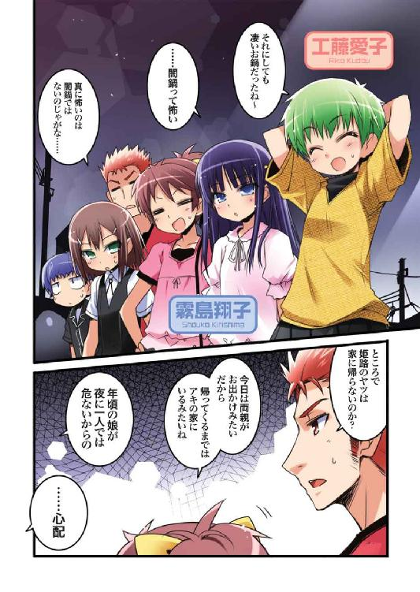

| バカとテストと召喚獣 08 | |
| 井上堅二 | |
| KADOKAWA / エンターブレイン (2012) | |

本作品の全部または一部を無断で複製、転載、配信、送信したり、ホームページ上に転載することを禁止します。また、本作品の内容を無断で改変、改ざん等を行うことも禁止します。
本作品購入時にご承諾いただいた規約により、有償・無償にかかわらず本作品を第三者に譲渡することはできません。
本作品は本文縦組で制作されております。ごらんになるリーディングシステムにより、表示の差が認められることがあります。
「ん？」
「......今日の闇鍋、楽しかった」
「そうか。そいつは良かった――が、くっちゃべってないでそろそろ帰らないとまずいぞ。結構遅くなっちまったからな」
「......待って、雄二」
「なんだ。忘れ物か？」
「......ううん」
「じゃあなんだよ。こんなところで話をしている時間はないと――」
「......私......今夜は、帰りたくない」
「..................は？ 何言ってんだ？」
「......私......今夜は、帰りたくないの......」
「............本気か、翔子？」
「......本気」
「......そうか......。今夜は帰りたくない、か......」
「......（コクリ）」
「――じゃあ」
「......うん」
「俺の家は向こうだから、この辺で」
「......今のは、いくら温厚な私でも許せない」
「あががががっ！ ちょっと待て！ どこのどいつが温厚だとぐぁあああっ！」
「......雄二には夫としての自覚が足りない」
「夫の自覚だぁ!? なってもいねぇのにンなモン自覚できるか！」
「......やっぱり、雄二にはきちんとした教育が必要」
「げほげほっ。きょ、教育？ 何言ってやがる。それならお前の方がよほど必要だと」
「......だから私たち、そろそろ一緒に暮らすべきだと思う」
「逸れたな。今話題が五四〇度逸れたな」
「......この子のためにも」
「愛おしげに腹に手を当てるな！ 子供なんているわけないだろうが！」
「......お父さんは冷たいね、しょうゆ」
「まるで俺が子供を認めない極悪非道の男のように!? あと、その名前はやめておけと言ったはずだ！」
「......じゃあ今夜は、雄二の部屋で子供の名前を一緒に考える」
「だから待て！ 会話の流れが色々とおかしいだろ！」
「......雄二は現国が苦手だから」
「違う！ 何語を使っていても今の会話自体がおかしいことに変わりはねぇ！」
「......雄二は冷たい」
「いや。ここまでこのアホらしい会話に付き合っているなんて、自分では相当優しいと思うんだが......。それで、今度はなんでそんなことを言い出したんだ？ 家で何か嫌なことでもあんのか？」
「......ううん、ないけど」
「じゃあなんで――」
「......この前キスしてくれたから子供も出来るだろうし、もっと進展したいと思って」
「★の※っ△■♪ぺ◎に〒●ゃっ!?!?!?」
「......落ち着いて雄二。本当に国語が不自由になってる」
「アホか！ デコにキスしたくらいで子供ができるか！ お前はもうちょっと常識ってモンを勉強してこい！」
「..................はぁ..................」
「テメェ......なんだその『このバカ、何もわかってないわ』って感じの溜息は......！」
「......実際に何もわかっていない雄二に、特別に一つ大事なことを教えてあげる」
「ほほぅ。言ってみろ」
「......世の中には、〝想像妊娠〟という言葉がある」
「違うからな!? それ胸を張って言えるような立派な言葉じゃないからな!? 愛の力で何もしていないのに子供ができたって感じの美談じゃないからな!?」
「..................」
「おいどうした。なぜ黙り込む」
「......やっぱり、同棲して既成事実を作るしか......」
「待ってくれ。話し合おう翔子」
「......子供の名前を？」
「いや違う。お前の入るべき病院についてだ」
「......嬉しい」
「こ、コイツ......！ 完全に産婦人科のことだと勘違いしてやがる......！」
「......じゃあ、尚更一緒に暮らすべき」
「だから無理だって言ってんだろうが」
「......でも」
「でもじゃない」
「......でも、雄二は、一学期の試召戦争で私の彼氏になるって言った」
「ぅぐ......！ だ、だがな、それはそれとして、同棲と話は別だろうが」
「......そんなこと、ない。私の彼氏なんだから」
「バカを言え。高校生で同棲なんて、そんなのやってるヤツどこにもいないだろ？」
「......じゃあ、高校生で同棲してる人がいたら、一緒に暮らしてくれるってこと？」
「あー、はいはい。俺たちにとって身近な――文月学園の連中とかがやってるならな」
「......わかった。なんとかそういう人を探し出してみせる」
「へーへー、ご勝手に。ま、うちの学校にそんなことをしているヤツがいるとは思えないけどな」
チチチチチ、と窓の外から小鳥の囀りが聞こえてくる。
昨夜はカーテンを閉め忘れていたのだろうか。朝の陽光が差し込んでいて、まだ眠いという僕の意識とは裏腹に、身体は覚醒を促していた。
「あの、明久君......」
鳥の鳴き声に混じって、鈴を転がすような可愛らしい声も聞こえてきた。夢と現の狭間にいるこの感覚。半端な現実感と、夢なのだから何でもありという万能感の二つがない交ぜになり、僕はあり得ないはずのその声をまるで当然のように受け入れていた。
「ん～......。姫路さん、あと少し......」
「え？ あ、そうですよね。折角の日曜日ですし、ゆっくり寝ていたいですよね......」
半分寝惚けている僕の言葉にも、きちんと耳を貸してくれるなんて「それに、私もずっと明久君の寝顔を見ていたいですし......」流石は姫路さん。優しいなぁ。
「でも『朝ご飯を作るのなら、その前に絶対に自分を起こして欲しい』って昨夜何度も言われちゃいましたし......。えっと、明久君、起きて下さい。朝ですよ～」
遠慮がちに身体を揺すぶられる。本来なら起こすことが目的であろうその行動は、今の僕にとっては揺りかごの揺動のように心地良かった。
「う～ん、あと三光年......」
「うぅ......。困りました......。全然起きてくれませんし、光年が距離じゃなくて時間の単位だと間違えて覚えちゃってます......。あのですね、明久君。そろそろ起きてもらえないと――」
「一生を左右するチュウをします」
「邪悪な気配っ！」
一瞬で覚醒して身体を横に転がす。顔面を両腕でガードしつつ、下肢にはいつでも駆け出せるように力を込めて準備をしておく。夢？ 寝起き？ そんなもの、この非常事態に関係あるか！
そうやって完全防御体勢を取った僕を、
「......まったく。誰が邪悪ですか」
姉さんがジトッとした目で見ていた。
「じゃあ、さっき僕に何をしようとしたのか言ってみてよ」
大きな目を細め、涼しげな表情をしている姉さんに問いかける。邪悪という表現に異論があるようだけど、きっと訂正の必要はないんじゃ......？
「チュウをしたあとにアキくんの自由を奪ってあられもない格好をさせ、その写真を使って一生脅迫し続けようとしただけです」
「邪悪な気配どころか犯罪行為そのものだ！」
前言撤回。邪悪な気配を訂正して犯罪の現場と言わせてもらおう。
「えっと、明久君。おはようございます」
「あ。おはよう姫路さん」
横から朗らかな朝の挨拶を聞いて、僕は初めて姫路さんのいる方を向いた。
朝の日射しを受けて、ふわふわと柔らかそうな髪が輝いて見える。ロングスカートにカーディガンという私服もよく似合っているし、いつもより二割増しくらいで楽しげな笑顔も魅力的だ。自宅で朝からこんな癒される姿を見られるなんて、なんとも得がたい幸せだ――って、あれ？
「姫路......さん？」
「はい」
「どうし――」
どうしてここに、という言葉を慌てて飲み込む。そうだった。今は姫路さんが我が家に泊まっているんだった。ただでさえ遠慮しがちな姫路さんに、そんなことを言ったら更に気を遣わせてしまう。危ない危ない。
「？ 何でしょうか、明久君」
「あ、いや。なんでもないよ。それより、昨夜はよく眠れた？」
急に発言を止めた僕を訝しんで首を傾げる姫路さんに、他の話題を振って誤魔化す。
「はいっ。すっごく幸せな夢まで見られました！」
そんな話題に、姫路さんはニコニコと、ご機嫌な気持ちが伝わってくるくらい幸せそうな笑顔で答えてくれた。慣れない環境で眠れなかったんじゃないかとちょっと心配だったけど、きちんと眠れたようでなによりだ。
「へぇ～。それは良かった」
「凄く良い夢で、現実でも見てみたいくらい可愛いかったんですよ」
可愛い......？ 犬とか猫とか、そういう小動物系の夢だったのかな？
「そっか。それならいつか現実でも見られるといいね」
「え......？ 明久君、協力してくれるんですか？」
「うん。そんなに可愛いのなら、僕だって見てみたいしね」
「はいっ。すっごく可愛いんですよ！ 明久君が協力してくれるのなら、すぐにでも見ることができると思います！」
「よくわからないけど、楽しみにしてるよ」
「わかりました！ お洋服の準備ができたら声をかけますね」
洋服？ よくわからないけど、姫路さんがそこまで言うのならきっと良いものが見られるのだろう。
「なるほど。アキくんはこうやって墓穴を掘っていくのですね」
「ん？ 何か言った、姉さん？」
「いいえ。私にとっても悪い話ではなさそうなので、気にしないでも大丈夫です」
「？？？」
なぜだろう。少し寒気が。
「まぁいいや。とりあえず顔洗ってくるよ」
「そうですね。それがいいでしょう」
姉さんはともかく姫路さんもいるんだから、いつまでも寝起きの顔でいるわけにもいかない。顔でも洗ってシャキッとしてこよう。
ベッドの前で立っている姉さんと姫路さんを残し、自分の部屋を出て洗面所へと向かう僕。すると、背中の方から姉さんと姫路さんの会話が聞こえてきた。
『それはそうと瑞希さん。危ないですよ、年頃の女の子が男の子の部屋に入っては』
『え？ そう......ですか？ 明久君なら、何も危ないことなんて』
『いいえ。この本を見て下さい。油断していると、瑞希さんはこんな大変なコトをされてしまうんですよ？』
『わ......。わっ！』
「いや、やっぱり顔を洗う前に着替えだよねっ！」
慌てて部屋にとって返す僕。顔を真っ赤にしながらも僕の参考書から目を離さない姫路さんと、僕にお仕置きをくわえようとする姉さんの対処には随分と時間がかかった。というか、僕が着替えると言っているのに部屋から出て行こうとしないこの二人は、僕とは違う常識の世界で生きているんだろうか......？
☆
『それでは、次のニュース。昨日海外で起きた、国際空港の大規模なストについて、現地の中西記者がお送りします。中西さん。ストの様子はどうですか？』
『はい。こちら現地の中西です。昨日勃発したスト騒ぎは、労働者側と経営者側の労働条件の見解に依然として大きな隔たりがあり、鎮静化の兆しは見られません。利用客の多くは周辺のホテルに滞在して空港の機能の回復を待つようですが、一部では満室で宿を取ることができず、空港で夜を明かしている人の姿も見られるなど――』
焼き鮭、卵焼き、お味噌汁にご飯という一般的な朝食の席に、そんなニュースキャスターの声が響く。
「さすがに、まだ飛行機は飛ばないようですね」
箸だけで綺麗に鮭の骨を取り除きつつ、姉さんが言う。
「そうみたいですね......。二人とも、早く帰ってこられるといいんですけど......」
こちらは箸を止めて、ジッとテレビを見ている姫路さん。
どうして姫路さんがこうやって我が家で朝食を摂っているのかというと、答えは簡単。今姫路さんの家には誰もいないらしいので、女の子の一人暮らしを心配した姉さんが泊まっていくように言ったからだ。
姫路さんの両親は友人の結婚式だかで海外に行っていたらしい。ところが運の悪いことに、その帰りのタイミングで空港がストを敢行。飛行機が飛ばないので帰って来られないという状態に。その知らせを受けたのが、丁度我が家で鍋をやっていた時なので、それならということで我が家に滞在してもらうことになったってワケだ。
「やっぱり、帰って来られないとなると心配になっちゃうよね」
「はい......」
ちょっと沈んだ様子で頷く姫路さん。『飛行機が飛ばないのなら観光でもして待ってる』なんて言っていたらしいけど、それでも心配は心配だろう。
「――お母さん、観光が楽し過ぎて『日本に帰りたくない』とか言い出さなければいいんですけど......」
え？ 心配するところはそっちなの？
「ですが、治安の良い観光地で良かったですね。退屈することもないでしょうし」
「お恥ずかしいです......。普通なら、きっと空港で待っていたりホテルでジッとしていたりするはずなのに......」
「あはは。ずっと困った顔をしてるよりいいじゃない。僕はそんな姫路さんのお母さん、好きだけどな」
「え......？」
不安になっても仕方がないんだし、それなら明るく楽しくできることをする。そんなポジティブな考えが、僕は大好きだ。
「あ、あの、明久君っ」
「ん？ なに？」
「私、よく母と似ているって言われるんですけど......」
「へぇ～、そうなんだ。じゃあ、おっとりした人なんだね」
「はい。大丈夫です。明久君はそういう反応をする人だってことくらい、充分わかってましたから」
僕の顔を見ながらにっこりと笑う姫路さん。だというのに、なぜか目の奥がちっとも笑っていないように見えたのが妙に気になった。
「ところで、姫路さんは今日はどうするの？ 何か予定でもある？」
「いえ。特に何もないです。明久君は？」
「僕？ 僕は勿論一日中ゲーム――」
「急に唇が寂しくなってきましたね」
「――なんかやらないで、掃除や洗濯でもしようかなっ！ 今日は良い天気だしね！」
姉さんの目が細くなったので慌てて撤回。でも、本当に天気も良いし、姫路さんもいるんだから掃除をしておくのは良いかもしれない。あんまり埃っぽいと姫路さんが体調を崩しちゃうかもしれないし、それに隠しておきたいものもあるし......。
「お掃除ですか。それなら是非お手伝いさせて下さい」
「ん？ いや、気にしないでよ。姫路さんはゆっくりしてて」
「じゃあ、せめてお昼ご飯は私が」
「姫路さんはリビングをお願い。僕は廊下や自分の部屋を片付けるから」
「え？ あ、はい。わかりました」
ふぅ......。危ないところだった。
こうなるとむしろ、姫路さんには積極的に掃除をやってもらった方が良いかもしれない。料理に手を出す余裕がなくなるほどに。
「では、姉さんがお昼を作りましょうか？」
「ちっとも危機を回避できてないっ」
姫路さんと同レベルとまでは言わないけど、姉さんの腕前もかなり怪しい。
「二人とも。ご飯の用意は全部僕に任せてもらえないかな。ほら、姉さんも最近仕事が忙しいんでしょう？ ご飯よりも資料を作ったりしないと」
「そうやって誤魔化そうとしてもダメですからねアキくん。アキくんが姉さんをキッチンに立たせまいとしているのはわかってるんですから」
不服そうに僕を見る姉さん。
よしわかった。そこまで言うのなら、簡単なテストを出してみるとしよう。
「じゃあ姉さん。お米を研ぐのはどうやるのか、知ってる？」
「............アキくん。貴方は姉さんをバカにしてますね」
「いや。結構真面目に訊いてるんだけど......」
前に『野菜を洗って』って頼んだら洗剤を持ち出したくせに。
「まったく、何の為に台所に砥石があると思っているのやら......」
「包丁を研ぐ為だ！」
確かに〝砥ぐ石〟と書いて〝砥石〟だけど、アレはお米を研ぐ為の道具じゃない！
「ダメですよ玲さん。お米を研ぐのならクレン――へくちっ」
「〝クレン〟!? もしかして姫路さん今〝クレンザー〟って言おうとした!?」
クレンザーは食器の研磨用だからね!? 食べ物に使ったらダメだからね!?
これはマズい。こんな二人に台所を任せたら大変なことになる......！
「じゃあとにかく掃除を始めよう！ お昼は後で僕が適当に作るから！」
有無を言わせぬ口調で強引に決めつける。
「しようがないですね。アキくんがそこまでメイドさんの姿で給仕をしたいと言うのなら我慢しましょう」
「そうですね。それなら仕方がないですね」
「ああもうっ！ この二人って頭が良いんじゃなかったの!?」
学校のテストに〝一般常識〟の項目も追加するべきだと思った。
☆
「さて。掃除って言っても......。どうしたもんかな」
自分の部屋を見回して独りごちる。最近は姉さんと暮らしているせいもあって、部屋はある程度片付いている。片付けは必要ないから、掃除機をかけたり机を拭いたりといった掃除をしておくとしよう。
持ってきた雑巾を使って、窓の桟や棚の上を拭いていく。うわ、意外と汚れているんだな。これからはもうちょっとまめに掃除をしようかな......？
折角やり始めたのだから、ということで本棚やベッドを動かして掃除機をかけたり拭いたりしてみた。こうして目に見えて綺麗になっていくっていうのも、これはこれで気持ちが良い。
そんな感じで季節外れの大掃除をしていると――
コンコン
「明久君」
ドアのところからノックの音が聞こえてきた。この声は姫路さんかな。
「ん？ なに？」
手を止めて振り返ると、そこには予想通り姫路さんの姿があった。ドアを開けているのにノックをするあたり、真面目な姫路さんらしい行動だと思う。
「折角良いお天気ですし、お布団を干しちゃおうかと思って。借りていっても良いですか？」
そう言ってベッドの上の布団を指差す姫路さん。
「それはいいね。干しておいた布団は気持ち良いもんね」
理屈はわからないけど、ふかふかになって暖かくなる。布団を干すのは良い考えだ。
「寝る時に、お日様の匂いがするんですよね」
「あれって、妙に落ち着いてよく眠れるんだよね～」
そう考えると、今夜寝る時が少し楽しみになってきた。
「じゃあ、後で僕が持っていくから」
「いえ。重いものでもないですし、今持って行っちゃいます。よいしょ、っと」
「ありがとう、姫路さん」
「いえいえ、これくらい何でもないです。カバーは外して洗っちゃいますね～」
布団を抱きかかえてトタトタと僕の部屋から出て行く姫路さん。掃除も手際が良いし、手間も惜しまないし、良いお嫁さんになりそうだ。......旦那さんが料理を作れる人だったら。
「さて。じゃあ今度は――っと」
ぐるりと周りを見回す。次は机の引き出しを開けて中身を整理でもしようかな。
なんて感じで、そのまま掃除を続けること少し。
使ったバケツと雑巾を洗ったので、外に置いておこうと思ってベランダに出ると、
「..................はぅ..................」
「？？？」
さっき持っていった布団を抱きしめて顔を埋めている姫路さんがいた。「あの......、姫路さん？」
「ひぁあああああっ!?」
声をかけたこっちが驚くほどの勢いで悲鳴をあげられる。え!? 何!? 僕何か拙いことでもした!?
「あああ明久君っ!? こ、これはその、違うんですっ！」
手をバタバタと振って慌てて何かを否定する姫路さん。......あれ？ まさか、姫路さんは今......泣いていた、とか......？
「あ、あの明久くんっ！ 本当にこれは違うんですっ！ 私はそういうつもりでお布団を借りてきたわけじゃなくて、干そうとして抱えたら、ついふらふらと――」
そっか。僕らの前では気を張っていたけど、やっぱり身の危険がないとは言っても両親が当分帰って来られないことに変わりはない。きっと不安になってしまったんだろう。それを僕らに気取られないように声を殺して泣いているなんて......。
「あのさ、姫路さん」
「は、はいっ」
「良かったら、今夜から......一緒に寝る？」
「へ？ え？ えぇぇぇっ!? い、いきなり何ですか!? 確かに一緒に暮らし始めてはいますけど、最初からそういうことは、その、大胆過ぎると思いますっ！」
「――姉さんと」
「......えっと......今度はいったいどんな勘違いをされたんでしょうか......？」
同世代の僕の前で弱音を吐きにくいのなら、姉さんに甘えるといいだろう。ああ見えても一応は大人だ。きっと姫路さんの不安を和らげてくれるに違いない。
「？ 私がどうかしましたか、アキくん」
「あ、姉さん」
丁度リビングにやってきた姉さんがこちらに顔を向けていた。僕は事情を説明するために部屋に入って、姉さんのそばで小さな声で言った。
（姫路さんがちょっと不安そうなんだよ。良かったら、夜とか一緒に寝てあげてくれないかな）
昨夜は客間に一人で寝てもらったけど、部屋に人が居た方が安心してもらえそうだ。
（そういうことですか。わかりました）
僕と同じように小声で答える姉さん。
こういう時は直接理由を話さない方が良いだろう。「寂しそうなので一緒に寝ましょう」なんて言われて「わかりました。お願いします」と答える人はなかなかいないだろうから。
「では瑞希さん、今日からは私と一緒の部屋で寝ませんか？」
「あ、いえ。何のことだかわかりませんけど、明久君は多分勘違いをしていて――」
「勘違い、ですか？ それはどのような？」
「えっと......、本当は、私は、その......明久君の」
「僕の？」
「布団に、その......」
「僕の布団に？」
「......なんでも......ないです......」
「「？？？」」
寂しがっていることを誤魔化そうとしたけれど、咄嗟に良い噓が思いつかなかったってところだろうか。そんなに気を遣うことないのに。
「なんなら、一緒のベッドでもいいですね。アキくんはなかなか私と一緒に寝てくれないので。昔はあんなに喜んでくれたのに......」
「昔だって嫌がっていたのに姉さんが無理矢理押さえ込んだんじゃないかっ！」
関節を極めつつ意識を奪うことを一緒に寝るという優しい表現で誤魔化さないで欲しい。
「それに、私と一緒の部屋で寝ていたらアキくんの劣情から守ってあげられますからね」
「ちょ......っ！ 劣情とか言わないでよ！ せめて表現を変えて、もっとこう――逬る青春から溢れ出した」「婦女暴行への渇望」「とかっておおぃっ!?」
逬る青春から溢れ出した婦女暴行への渇望。完全に逮捕レベルの表現だ。
「そういうことで瑞希さん。身を守るために、今日から私の部屋で寝るということでどうでしょうか」
「は、はぁ......」
なんだか僕のイメージが著しく貶められた気がするけど、姫路さんの不安がそれで和らぐのなら甘んじて受け入れよう。
「じゃあそれで決まりだね。姉さん、姫路さんの布団を運んでおいてもらえる？ 僕はお昼の用意を始めるから」
「わかりました」
「あの、明久君。やっぱりお昼なら私が」
「いやいや、大丈夫だから気にしないで！ それより姫路さんは布団を干したりとか、そういうのをお願い！」
有無を言わせぬ勢いで押し切る。姫路さんは「そういうことなら......」とちょっと不満げながらも頷いてくれた。
さて......。このお昼の用意に合わせて、一緒に夕飯も作っちゃおう。何か作りたいとか言い出される前に。「ふわぁ......。平日の朝って、なんでこんなに眠いんだろ......」
「ダメですよ明久君。夜はきちんと寝ないと身体に悪いです」
月曜日の朝。僕と姫路さんは並んで登校しながら、そんな会話をしていた。
「そうは言っても、本が面白くてついつい――ふわぁ......」
「もう......。ほら明久君。ネクタイが曲がっちゃってますよ？」
「え？ そう？」
ネクタイの結び目の部分をまさぐる。こんな感じでいいかな？
「あ。今度はシャツの襟が中に......。ちょっとこっちを向いてもらえますか？」
「いや。別にそこまで気にすることでも」
「ダメです。だらしない格好をしていると、西村先生に怒られちゃうんですからね」
姫路さんはそう言って僕の前に回ると、僕の首もとに手を伸ばして襟やネクタイを直し始めた。む、むぅ......。なんか、すっごく恥ずかしいことをされているような......。
「..................」
「姫路さん？」
「..................」
「あの、姫路さん？」
「..................」
「姫路さんってば」
「へ？ あ、はいっ」
「どうしたの？ ボーッとして。顔も赤いし」
「い、いえ。その......ちょっとだけ、変な気持ちになっちゃいまして......」
なんだ。恥ずかしかったのは僕だけじゃなかったのか。なんか、こういうやり取りって新婚みたいっていうかなんというか......。
「と、ところで明久君っ。ハンカチは持っていますか？」
気を取り直すように姫路さんが言う。えっと、ハンカチハンカチ......
「あ。そう言えば忘れちゃったかも」
ポケットにも鞄にも入れた記憶はない。もっとも、普段も忘れていることの方が多いんだけど。
「それじゃあ、これをどうぞ」
僕の返事を聞いて、姫路さんは鞄から一枚のハンカチを取り出した。僕に貸してくれるのかな？
「いや、別にいいよ。僕は無くてもあまり困らないし。姫路さんこそ、僕に貸しちゃったら困るでしょ？」
「大丈夫です。私はもう一枚持ってますから」
スカートのポケットからもう一枚ハンカチを取り出す姫路さん。準備がいいなぁ。
「う～ん......。姫路さんがそこまで言うなら」
お言葉に甘えて貸してもらおう、と思って手を伸ばす僕。
「はい。身だしなみには気をつけないとダメですよ。そうじゃないと、女の子にもてなくなっちゃいま――」
でも、なぜか姫路さんはそこで言葉を切ると、僕にそのハンカチを渡すことなく、ギュッと握りこんでしまった。
「姫路さん？」
「......やっぱり、ハンカチはなくてもいいです」
「？？？」
そして、そのままハンカチを鞄に戻してしまう姫路さん。
その行動はよくわからなかったけど、それでも朝から楽しく話ができて嬉しかった。
――そこまでが、幸せだった今朝の僕の記憶。
☆
「――これより、異端者・吉井明久の審問を行う」
その後わずか五分で僕は異端審問会に捕まり、戸惑う姫路さんを残して連れ去られ、両腕両足を縛られて二－Ｆ教室の畳の上に転がされていた。
「吉井明久。何か言い残すことはあるか？」
「途中で会って一緒に登校しただけなんだ！ 無実――とまでは言わなくても減刑を要求する！」
「..................」
少し思案する異端審問会会長。いくら異性との交流に厳しい異端審問会でも、さすがに偶然会って一緒に登校しただけじゃ酷刑を科してくることはないだろう。いちいちそんなことに嫉妬していたらキリがないし、このくらいだったらそこまで妬ましいことじゃないはずだから。せいぜい、会員五名のしっぺ程度だと――
「――では、会員十名による往復ハイキックで手を打とう」
僕の想像以上に妬ましい行為だったらしい。
「ちょ、ちょっと待ってよ！ それはあまりに刑が重すぎるよ！ これで僕を処刑したら、皆だって同じことが起こった時にどうするのさ！」
「む......」
更に思案する会長。僕の言った、〝自分たちにも同じことが起こり得る可能性〟というものについて考えているのだろう。
『会長。被告の言にも一理あると思います』
『我々も鬼ではないのですから、この程度であれば看過しても宜しいかと』
『一緒に登校くらいの幸運なら我々にも訪れるかもしれませんし』
『それに朝のストーキング行為が処罰されるのなら、私は毎日刑を受けなくてはならないじゃないですか』
会員たちの援護が入る。自分たちにも可能性があるという言葉が効いたのだろう。
「――ならば、今回は特別に会長によるデコピンということで」
一気に刑が軽くなって胸を撫で下ろしたその時、
「待って下さいっ！」
息を切らせて姫路さんがやってきた。うん？ どうしたんだろう。僕を心配してきてくれたのかな？
「明久君は悪くないんですっ！ 私が――」
必死に顔を赤くして告げる姫路さん。
「――私が無理に一緒に行きたいってお願いしただけなんです！」
「会員二十名によるジャーマンスープレックスリレーだ」
『『『異議無し』』』
なんということでしょう。姫路さんのたった一言で、技はデコピンからジャーマンスープレックスに、回数は一回から二十回に早変わりです。
「ひ、姫路さん!? 気持ちはありがたいけど、今はそのフォローは逆効果で」
「ですから、明久君のシャツの襟元を直してあげたりとか、歩いていたら手が触れあったりとかも、全部私が明久君に触れていたいと思って勝手にやっていたことで、明久君が悪いわけじゃ」
「――畳をどかせ。床に直接頭から落とすぞ」
『はっ。既に準備は整っています』
『画鋲の配置も可能です』
『スコップの用意もできました』
まずい。こいつら動かなくなった僕をどこかに埋めるところまで考えている。なんとか弁明しないと――そうだ！ もう一度これくらいはなんともないことだと考え直してもらえばいんだ！ この程度は日常の一コマだという説明を――
「皆落ち着いてよ！ この程度で僕を処刑したら雄二はどうなるのさ！ アイツだって霧島さんと一緒に登校してるのをたまに見かけるじゃないか！」
「ならば坂本雄二も処刑しよう」
すまない雄二。僕の一言で君の処刑が決まったみたいだ。
頭の中で野性味溢れる悪友の遺影に手を合わせていると、ガラッという音が教室の扉の方から聞こえてきた。
「うーっす。ふわぁ......。ねみぃ......」
ああ雄二。君はなんて間の悪い男なんだ。
「ん？ なんだ明久。お前はまた異端審問会にかけられてるのか。朝っぱらから大変だな――って、おいお前ら。なんで俺の背後に回って腕を回してくるんだ？」
朝一番で眠たげな雄二は、背後に回った会員の力強い腕で腰を抱かれていた。
「姫路さん。ちょっとだけ僕の方を向いていてくれるかな」
「え？ あ、はい」
姫路さんの視線をこっちに誘導する。教室の隅の方では、雄二の身体が弧を描くように華麗に宙を舞い、『ゴ......ッ』『ゴ......ッ』『ゴ......ッ』という鈍い音が響いていた。これで三回。あと『皆、おはようじゃ――ってなんじゃ!? 雄二が血だらけで床にたたきつけられておるぞ!?』十七回か......。
「何をやっているかお前ら、さっさと席に着け！」
鈍い音が十八回響いたところで、鉄人がやってきて騒ぎは終息した。あ、危なかった。あと二回で僕の番になるところだった......。
☆
「くそっ。今日は朝からヒデエ目に遭ったぜ」
午前の授業が終わって昼休み。意識を取り戻した雄二がお弁当を持って僕の席の前にどっかりと座った。
「相変わらずと言えば相変わらずなのじゃが、朝からあの光景は心臓に悪いぞい......」
同じようにお弁当を持った美少女――秀吉がやってくる。さらさらの髪に大きな瞳。前から可愛かったけど、秀吉は二年生になってから更に可愛くなってきている気がする。お年頃ってやつだろうか？ それとも好きな人ができたとか？
「............他人の幸せは毒の味、というのが異端審問会のならわし」
コンビニのおにぎりを手に音もなく現れたのは、土屋康太ことムッツリーニ。小柄な体格と静かな雰囲気が特徴的なクラスメイトだ。
「あれ？ ムッツリーニは今朝の騒ぎ、処刑側に回ってなかったの？」
「............ちょっと、調べ物をしていた」
「友人の間で処刑側と被告側が存在するのはおかしいと思うのじゃが......」
「そう？ 昨日の敵は今日の友、って言うじゃない」
「お主らは敵と友の入れ替わりが激し過ぎるのじゃ」
僕の体感だと、敵対九割・険悪一割ってところだ。
「アンタたちって、いっつも同じようなことやってるわよね」
「二年生になったばかりの頃は、もうちょっと平和なクラスだったと思いますけど......」
美波がピコピコとポニーテールを揺らしてやってくる。その隣には姫路さんも一緒に立っていた。
近くの卓袱台を持ってきて、いつもの六人でお昼にする。最近ではすっかり見慣れた光景だ。
「あれ？ アキも今日はお弁当？」
卓袱台でお弁当を広げると、美波が僕の方を見てそう言った。
「明久が弁当とは珍しいのう」
「うん。ちょっと昨日のおかずが余っちゃってさ」
昨日張り切って作り過ぎたせいだ。冷めても食べられるようなおかずにしておいて良かった。
「んじゃ、いつものいくか。――最初はグー、じゃんけん」
「「「ほいっ」」」
ムッツリーニがチョキ、その他の全員はグーを出していた。
「............むぅ............」
ムッツリーニが無念そうに自分のチョキを見ている。ちょっと悔しそうだ。
「一発で決まるとは珍しいな。俺はウーロン茶だ」
「ワシは緑茶じゃ」
「僕はレモンスカッシュね」
「ウチはミルクティーで」
「すいません。私はストレートティーをお願いします」
全員で百円玉をムッツリーニに手渡す。
「............行ってくる」
ムッツリーニは小銭を受け取ると、一人でジュースを買いに購買へと向かっていった。パシリのじゃんけんも昼休みのいつもの光景だ。
「あー、腹減った」
包みを解いてお弁当を広げる雄二。他の皆も自分の昼食を卓袱台の上に広げていた。パシリに行っている人を待たないのはルールになっている。そうじゃないと、お互いに気を遣うからだ。
「明久。旨そうな弁当だな」
「雄二のもね」
珍しく僕も雄二もお弁当なので、互いに覗き込んで品定め。今日の雄二のおかずは豚の照り焼きか......。美味しそうだな。
「......あれは鮪の――しょうが焼きか......？ 悪くないな......」
雄二の呟きも聞こえてくる。向こうは向こうで狙いがあるようだ。
「よし明久。おかずの交換をしようぜ」
「オッケー。雄二は何が欲しい？」
「しょうが焼きだ。お前は？」
「勿論、豚の照り焼きだよ」
「よし。トレード成立だな」
「だね。はい、しょうが焼き」
「ほれ、照り焼きだ」
ＩＮ → ミニトマトのヘタ（照り焼きソース付）
ＯＵＴ ← キャベツの切れ端（しょうが焼き風味）
「ヤんのかコルァアアー！」
「その言葉そっくり返すわボケェエエー！」
お互い胸ぐらを摑み合う。なんてケチなヤツなんだ！ 一切れくらい無償でくれたっていいじゃないか！
「お主らは小学生か......」
そんな僕らを見て、秀吉が呆れたように溜息を吐いていた。
「いや、違うんだよ秀吉。僕は大人なんだけど、雄二がゲスだから」
「秀吉、明久と一緒にしないでくれ。小学生並なのは、コイツの頭だけなんだからな」
「「..................!!（ガンのくれ合い）」」
「そういうところが子供じゃと言っておるのじゃが......」
やれやれ、と更に大きな溜息を吐く秀吉。そしてその手に箸を持つと、
「ほれ、これでいいじゃろ？」
「「あ」」
僕らがいがみ合っている横で、それぞれのお弁当のおかずを一切れずつ入れ替えた。
「それと、ついでにワシのも、じゃ」
そのまま箸を動かし、自分のお弁当のとんかつも一緒に交換する。これはまた、バラエティー豊かになって美味しそうだ。
「仕方ない。秀吉に免じてここは許してあげるよ雄二」
「それはこっちの台詞だ」
雄二のシャツから手を離す。こんなことをしてるより、お弁当を食べることの方が重要だ。
「まったく、お主らは......。自前の弁当で我慢できんのか？」
「そりゃ、誰かに作ってもらったのならそれでもいいんだけどな」
「自分で作ってると、意外性とかがなくて寂しいんだよね」
「ならば素直に交換したら良いじゃろうに......」
僕も雄二もお弁当を持ってくる時は、大体自分で作ったものだ。好きなものを入れられるのはいいんだけど、蓋を開けた時の楽しみというものが全くないのが少し切ない。
ちなみに、素直に交換という選択肢は最初から存在しない。なぜなら、それでは量が増えないから。男子高校生の胃袋を舐めるなよ！
「じゃあ瑞希、今日はウチらも何か交換してみない？」
「あ。えっと、それは、その......じゃあ、ちょっとだけ......」
「うんうん。じゃあ、はい」
「はい、どうぞ」
僕らの様子を見てやってみたいと思ったのか、姫路さんと美波がおかずの交換の為に、互いにお弁当箱を差し出していた。うんうん。女の子同士のこういう光景って華やかでいいなぁ。
「へぇ～。瑞希、今日は珍しいおかずね。これは鮪の――しょうが焼き？」
「ですね」
「んぁ？ 鮪のしょうが焼きだと？」
「ゴふっ！」
思わず盛大にむせる。
やややヤバいっ！ そう言えば姫路さんのお弁当も僕が作ったんだから、中身は同じだったんだ！ 早く誤魔化さないと！
「ぐ、偶然だね姫路さんっ！ さては姫路さんのお母さんも昨日の〝簡単レシピ〟を観てたのかな！」
咄嗟に同じＴＶを観ていたという言い訳を口にする。姫路さん、うまく乗ってこの話題を流すんだ......！
「え？ 忘れちゃったんですか明久君。今日のお弁当は明久君が作って――モゴモゴ」
「姫路さぁーん!? ちょっと向こうで僕とお話しようねーっ!?」
天然すぎるーっ!?
慌てて姫路さんの口を塞いだまま教室の隅まで移動する。今までも薄々思っていたけど、姫路さんって相当鈍いような気がする！
（ダメだよ姫路さん！ あんなことを言ったら僕らが一緒に暮らしているのがばれちゃうよ！）
（え？ お話しちゃダメなんですか？）
（ダメもダメダメだよ！ これは絶対に人に言っちゃいけないことなんだ！）
姫路さんの風評の為にも、僕の命の為にも。
（あ......。そうですよね。学校にバレちゃったらあまり良くないことですもんね）
（うんうんっ。わかってもらえて嬉しいよ）
（わかりましたっ。二人だけの秘密ですねっ）
姫路さんが胸の前で手をグッと握る。
今にして思うと、一緒に暮らしていることを秘密にしておこうという相談をしていなかった気がする。気がするけど......そのあたりを全然気にしないなんて、姫路さんってちょっとズレているのかもしれない。お母さんに似ているって、きっとこの辺の天然なところなんだろうなぁ......。
（頑張って秘密を守りましょうね、明久君）
（うん。頑張ろう）
姫路さんと頷き合って皆のところに戻る。さて。ここからは鉄壁のディフェンスで秘密を守りきるぞ！
「なんだ明久。姫路の弁当を作ってやったのか」
初手から苦しい。
「ああ、いや。それは、その......」
雄二はこういう時、噓を見抜くのがすごく上手い。しかも、隣には秀吉もいる。初っぱなからいきなり詰みか......！
なんて思っていたのに、
「何を焦ってんだよ。この前福引きで当たった〝海の幸セット〟の処分を手伝ってもらったってだけだろ？」
「確かにあれは相当な量じゃったからな」
雄二と秀吉はそのことをなんでもないかのように流してくれた。あれ？ その程度で済ませてくれるの？
（材料が余っているのならお礼に何か作ります、とか姫路が言い出す前に手を打ったんだろ？ なかなか頭が回るじゃねぇか明久）
（見直したぞい）
二人が僕にしか聞こえないようにこっそりと言う。なるほど。そういう見方もあるのか。これは助かった。
「そうなんだよね。結局、この前鍋をやった時はほとんど減らなかったし」
「まぁ、あの時は色々あったからな」
「最終的には全く関係のない闇鍋になっておったからの。実質あの材料を使ったのは島田たちが作った料理くらいじゃったか？」
「だね。アレは美味しかったなぁ」
美波や霧島さんや工藤さんが作ってくれたオードブルを思い出す。カルパッチョに牡蠣の酒蒸しに海鮮サラダ。どれもかなりの味だった。
「ねぇ美波。あのカルパッチョのソースって――」
材料は何を使ったの、と聞こうとしたところで、
「..................（ムスッ）」
美波が不機嫌そうに頰を膨らませていることに気が付いた。
「美波、どうかしたの？」
「......別に。なんでもないわよ」
口ではそう言っているけど、明らかに美波のご機嫌は斜め方向だ。う～ん。もしかして、美波もお弁当が欲しかったのかな？ この前は料理を作ってもらったわけだし、確かにお礼をしないで姫路さんにだけ作ってきたら面白くないかもしれない。なるほど、そういうことなら......
「あのさ、良かったら、今度は美波にもお弁当を作ってこようか？」
「え？ いいの？」
「うん。別に三人分も四人分も変わらないからね」
料理というものは、一人分作るのも数人分作るのも、手間は大して変わらない。その程度ならお安い御用だ。
「そういうことなら、この前のレシピも教えてあげる♪ あれはね、バルサミコ酢の量を減らしてその分――」
さっきとは打って変わって美波が上機嫌で話を始めて、
「バルサミコ酢......？ 酢酸にバルサンを加えたものでしょうか......」
隣では姫路さんが恐ろしいことを呟いていた。彼女がカルパッチョを作ると言い出したら要注意だ。
姫路さんの危険性を再認識しながらも、とりあえずお弁当に箸を伸ばす。鮪のしょうが焼きは初めて作ったけど、冷めても意外と美味しかった。これ、お弁当のおかずにあってるのかも。
「............ただいま」
そうやって皆で話をしながらお弁当をつついていると、しばらくしてからムッツリーニがジュースの缶を両手に抱えて戻ってきた。
「お。随分と時間がかかったな。購買が混んでたのか？」
ムッツリーニが手渡すウーロン茶を受け取りながら雄二が尋ねる。確かに結構遅かった。何事も素早いムッツリーニにしては珍しい。
「............途中で相談を受けていた」
「相談って――」
誰から、と言おうとしたところに、とある人物が僕らのところにやってきた。
「いいわ土屋君。私から直接話すから」
肩にかからない程度で切り揃えられた髪と、クールな表情。腕を組んで、畳に座っている僕らを見下ろすように立っているのは、
「こんにちは、Ｆクラスの皆さん」
「ん？ これはまた、随分と珍しい客が来たもんだな」
Ｃクラス代表の小山さんだった。雄二の言う通り、確かに珍しいお客さんだ。
「じゃあ、ムッツリーニが相談を受けていた相手って――」
「ええ。私よ。相談って言うよりは、購買で丁度見かけたから質問をさせてもらっていただけなんだけどね」
「............Ｆクラスの試召戦争の予定を聞きたいらしい」
「僕らのクラスの予定？」
「メンテナンスも終わったみたいだし、明後日の朝にはついに試召戦争が解禁されるでしょう？ その時にＦクラスはどう動くのかを教えてもらいたいのよ」
本当なら二学期開始と同時に解禁される予定だった試召戦争。装備の変更やら不具合のメンテナンス（表向きには仕様変更と言い張っているらしい）やらで延期されていたけど、ついにそれが明後日をもって解禁となる。当然僕らＦクラスとしては一学期に果たせなかった悲願の達成を目指すつもりだ。
とは言え、最下層クラスである僕らの動きを調べに来るなんて、
「随分と慎重なもんだな」
雄二がからかうように言う。それには僕も同意見だ。
「それはそうでしょう？ だって、Ｆクラスは一学期にあそこまで学年全体を引っかき回した、言わば台風の目なんだもの。警戒して然るべきだと思わない？」
小山さんはそんな雄二の挑発混じりの台詞に乗せられることなく、小さく笑みを浮かべて返した。
「それはまた光栄な評価だが......いいのか？ 折角二学期になって元のＣクラス設備にリセットされたっていうのに、いきなり試召戦争なんか考えて」
雄二が値踏みするように問いかける。
試召戦争のルールの一つに、〝戦争に負けてランクを落とされた設備は学期が変わる毎にリセットされる〟というものがある。上位クラスが下位クラスに負けて設備を入れ替えられた場合はそのままだけど、下位クラスが負けて設備のランクが落とされた場合は学期が変わると元に戻してもらえるってワケだ。
「そう言えばＣクラスは以前の試召戦争でＡクラスに負けてＤクラス程度の設備に落とされておったの」
「それが二学期になって元のＣクラス設備に戻っているってことですよね」
このルールは要するに試召戦争を積極的にやらせようというもので、学期末に試召戦争を行えば、下位クラスはほぼノーリスクで上位クラスに挑戦できるという形になる。そもそも振り分け試験直後に試召戦争をやっても、点数の差は歴然としているのだから普通は勝負にならない。一学期の間悔しい思いをしながら勉強して、その成果を学期末に試すというのが学校側の思惑だろう。今年は僕らが初っぱなからひっかき回したり、システムのメンテナンスや他のイベントが重なったりして一学期末は静かだったけど。
「試召戦争を考えても何も、別に私は自分たちから戦争を始める、とは言ってないわよ？ ただ、また中心になるであろうＦクラスの動きが知りたいってだけで」
「回りくどい言い方だな。要するに、こっちが情報を提供しないのなら、そっちも何も教えるつもりはないってことだろ？」
「まぁ、そういう言い方もできるかもね」
不敵な表情で言う小山さん。
同盟の申し込み――とは違うだろう。これは取引ってところか。Ｃクラスの動きを教えてもらう代わりに、Ｆクラスの動きを教える。お互いに邪魔にならなければそれでよし、そうでなければ何か方策を考える。事前に動きを知っておけば、つぶし合いになるという結果は避けられる。
「そういうことなら、最初から雄二のところに聞きにきたらいいのに」
どうしてムッツリーニに聞いたのだろう。
「あら。だって、坂本君が相手だとこうやって取引になっちゃうでしょう？ こっちが情報を提供しないで済むのなら、それに越したことはないじゃない」
僕の疑問に対し、小山さんは悪びれもせずそう答えた。相変わらずの性格だなぁ。
「んで、どうするの雄二？」
「いいだろう。その取引、乗ってやる」
「そう。それは助かるわ」
元から断られるとは思っていなかったようで、小山さんは形だけのお礼を告げた。
「言うのは俺たちが目標としているクラスだけでいいのか？」
「それだけじゃダメ。攻め込む時期も教えてもらわないとね」
目標のクラスだけならわざわざ聞く必要なんてないんだから、と小山さんは続けた。確かに彼女の言う通り、僕らＦクラスの最終目標がＡクラスというのは周知の事実だ。それじゃあ取引にならないだろう。
攻め込む時期も、と言われて雄二は一瞬迷ったような顔をした。まだ詳細までは決まっていないんだろうか。打倒Ａクラスを公言していたくせに、戦略が決まっていないなんて雄二らしくないけど......？
「Ａクラスには、試召戦争解禁から一週間――遅くとも二週間以内には攻め込む予定だ」
「......ふぅん......？ なるほどね......」
あれ？ なんか、随分と間を置くんだな......。雄二の性格なら解禁と同時に攻め込むくらいだと思っていたのに。
その疑問を雄二に尋ねようかと思っていると、雄二が視線で『余計なことは言うなよ』と僕に釘を刺してきた。どうやら、戦争自体は始まっていなくとも、情報という分野での勝負は始まっているらしい。それならここは雄二に任せておくとしようか。
「そっちはどうなんだ。Ａクラスを目指すというのなら、俺たちとの戦いになるが」
「私たちはそこまで高望みしてないわ。ただ、Ｂクラスには挑んでみたいけどね。あなたたちと同じように、解禁から一、二週間くらいで」
「..................」
Ｃクラスの目標はＢクラス。それは順当な考えだろう。一学期末には勝負ができなかったのだから、このタイミングに挑むというのもわからなくもない。
「でも、いいの小山さん？ Ｂクラス代表の根本君って、確か小山さんの彼氏だったと――」
「それ以上言ったら殺すわよ」
どうやら彼女の忘れたい過去に触れてしまったようだ。
「私はね、頭の良い男が好きなの。お勉強ができる人って意味じゃなくてね」
「よく言うぜ。根本なんか、卑怯なだけの小物だったろうが」
「卑怯な手段って、勝つ為には合理的で、有効だと思わない？ 私はそういうの、結構好きなんだけど。......あの男は、もう御免だけどね」
小山さんが笑う。卑怯な人が好きって、そういう趣味の人もいるのか......。
『俺ってさ、じゃんけんは後出し以外したことないんだぜ』
『何を言ってるんだ、それでもいつも負けていただろ？ お前は卑怯者なんかじゃないさ。それに引き替え俺なんて、掃除当番の時はいつも腹痛のフリをしていたんだぜ？』
『いやいや。俺の方が卑怯者さ』
『そんなことはない。俺の方が卑怯者さ』
『............実は俺、同い年の従兄弟がいてさ。彼女が欲しいってそいつに相談したら、この前クラスメイトを紹介してくれたんだ』
『『この卑怯者っ！ 殺してやる！』』
『............そいつ、男子校に通っているはずなのにな............』
『............俺のジュース、やるよ』
『............今日の帰り、たこやき奢ってやるよ』
『......ありがとう......』
近くの席で始まる卑怯アピール。なんてわかりやすいクラスメイトたちなんだろう。
「そうなんですか。小山さんって、頭の良い人が好きだったんですね」
「ええ、そうよ姫路さん」
小山さんがフフッと意味ありげな笑みを浮かべる。
「そう言えば......坂本君って頭良かったわよね？」
『『『..................（ドスッドスッドスッ）』』』
「おいお前ら。無言でカッターを畳に突き立てるな。異様な光景だぞ」
カッターを握り込んで、足元の畳に抜き差しするクラスメイトたち。これがもっと直接的な言葉だったら、刺さっていたのは畳じゃなくて雄二の身体だっただろう。
「それにしても......そう。解禁から一、二週間ね。なるほどね......」
小山さんが含みのある感じで言う。雄二はそれを訝しげに見ていた。
「教えてくれてどうもありがとう。それじゃ、お互い目標の相手も違うみたいだし、うまくやりましょ」
最後にそう結ぶと、小山さんは腕を組んだまま教室から出て行った。お互いに邪魔をし合うことがないってわかったおかげで、警戒するべき敵が一つ減った。
「いよいよ他のクラスも試召戦争に向けて動き出すようじゃな」
「新しいクラスになって結構時間が経ったからね。そろそろ力関係が逆転しているクラスがあってもおかしくないんじゃないかな？」
前はほとんど僕らだけだったけど、次の試召戦争は学年全体で何か大きな動きがありそうだ。その動き、僕らにとって吉と出るか凶と出るか......。
「あ。試召戦争と言えば、召喚獣の装備が変わるって話があったわよね。あれってどうなったのかしら」
隣で美波が首を傾げる。そう言えば、どうなったんだろう。
「装備の変更か......。試召戦争を控えているとなると、確認しておく必要があるな」
「............システムのメンテナンスは終わったらしい」
「ってことは、もう召喚できるんだよね」
「んだな。ちょっと試してみるか。誰か教師は――」
召喚の立ち会いをやってくれそうな先生を捜す。すると、タイミングが良いのか悪いのか、担任教師の鉄人こと西村先生が廊下を歩いているのが見えた。うぅ......。もっと話しやすい相手が良かったんだけど......。
「まぁ、仕方がないかな......」
「だな。そろそろ昼休みも終わっちまうし」
「じゃあ、西村先生ー」
「ん？ ......吉井に坂本か。何か用か？」
声をかけると、鉄人は教室に入ってきて、僕らの顔を見て嫌そうに眉をひそめた。まるで僕らが話しかけると厄介ごとが起こるとでも言わんばかりの態度だ。失礼な。
「えっと、すいませんが召喚許可を「ダメだ」お願いできま「不許可だ」せんか？「却下だ」試召戦争も「断る」解禁されるし、「諦めろ」新しい召喚獣を「無理を言うな」――って断りすぎじゃないですか!? 一つのお願いを言い切る前に六回もダメだしされたのは初めてですよ畜生っ！」
「貴様がこちらの話を聞かないからだろうが」
いや。それはお互い様のような気がするけど......。
「前から言っているだろう。お前の召喚獣は簡単に喚び出してはいけないものだと」
「それは、まぁ......」
僕の召喚獣は、他の人とは違って物に触れる特別仕様だ。人よりも遥かに力の強い召喚獣が物に触れるのだから、鉄人がそうやって心配するのも無理はないけど――
「大丈夫ですよ先生。今まで僕らが問題を起こしたことがありますか？」
「一学期の間にお前たちが書いた反省文は百枚を超えていたと記憶している」
「一日一枚ペースじゃな」
「文集を作れるくらいの枚数ですね......」
「アンタら、本当に学校でなにやってんのよ......」
きっとそのうち九十九枚は雄二が書いたものに違いない。
「だいたい、お前たちが俺を先生付けで呼ぶと大抵ロクなことがない。また何か妙なことを企んでいるんじゃないか？」
疑いの眼差しで僕らを見る鉄人。なんだ。呼び方がまずかったのか。
それなら簡単だ。言い方を変えてみよう。
「宜しく宗くん（パキュッ）」
「頼むぜ宗一（ペキュッ）」
「教師をファーストネームで呼ぶな」
「「手の骨がぁあああ――っ！」」
言った瞬間、差し出した僕と雄二の右手が万力のような握力で握り潰された。この呼び方でだめなら僕らにどうしろって言うんだ！
右手を押さえてのたうち回る僕らを尻目に、姫路さんと美波が鉄人の前に立つ。
「西村先生。ダメですか？ ウチらは別に悪いことに使おうと思っているわけじゃなくて、装備を確認したいだけなんです」
「美波ちゃんの言う通りです。悪戯なんてしませんから」
「いや、しかしだな」
「「よろしくお願いします、西村先生」」
「......まぁ......、装備を確認したいという気持ちも、わからんでもないが......」
模範的な生徒二名を前に、態度が軟化する鉄人。
よし、もう一押しだ！
「頼むぜてっつん☆（パキュッ）」
「宜しくてっちゃん♪（ペキュッ）」
無事だった左手まで握り潰された。ええい！ なんて我が儘な男なんだ！
「まったく、お前たちは......。ほら、さっさとしろ」
「え？ 何がですか？」
「俺も忙しいのだから、早く召喚しろと言っているんだ」
やれやれ、とため息をつきながら言う鉄人。なんだ。結局許可してくれるんじゃないか。
「どうせお前たちは、いくら却下したところで坂本の腕輪で召喚をしてしまうからな。それなら目の届く範囲で行動させた方がマシだ」
なるほど。そういう理由があってのことか。でもそれなら、
「そう思うのなら、すぐ許可してくれたらいいのに」
「まったくだ。まさに骨折り損じゃねぇか」
「そう簡単に許可を出していたらお前たちはすぐ調子に乗るだろうが」
そんなことない――とは言い切れないけどね、確かに。
「まぁいっか。許可してもらえるのなら」
「そうじゃな。結果オーライじゃ」
「............（コクコク）」
「ちょっと楽しみですね。どんな風に変わっているんでしょうか」
「ウチは前みたいにぬりかべなんかが出てこないことを祈るわ......」
「んじゃ、喚んでみっか。せーの――」
「「「試獣召喚っ！」」」
皆で一斉に喚び声を上げる。すると、それぞれの足元に幾何学状の紋様が現れて、その中から召喚者自身をデフォルメした姿の召喚獣が現れてきた。
「わぁ......綺麗な鎧......なんだか凜々しくなった気がします」
「ランスに鎧ってことは、ウチは騎士ってことかしら。良かった......。盾代わりにまな板とかじゃなくて、本当に良かった......！」
「ほら、見てよ雄二。学ランの裏地に龍が描いてあるよ」
「見ろよ明久。俺は虎だぜ」
「刀に羽織り......。新撰組、といった体じゃな。強そうじゃ」
「............上忍にレベルアップというところ」
ふむふむなるほど。皆だいぶ良い物に変更されてるね。
「「ってちょっと待てぇええーぃ！」」
「なんだ吉井、坂本。うるさいぞ」
「うるさくもなりますよ！ 明らかに不公平じゃないですかこんなの！」
「そうか？」
「そうですよ！ だって、姫路さんはどう変わったか見て下さいよ！」
「えっと、私は前より鎧がしっかりして、武器も長くて大きくなりましたね」
「美波は？」
「ウチは軍服から騎士鎧に、サーベルからランスに変わったわね」
「秀吉は？」
「長刀使いから新撰組になったようじゃな」
「ムッツリーニ」
「............下忍から上忍に出世した」
「僕と雄二」
「学ランの裏地に刺繡が入ったな」
「「お か し い だ ろ ！」」
思わず僕と雄二の声が揃う。他の皆との差が大きすぎる！ どうして僕と雄二は前の装備とほとんど一緒なの!?
「いや。待て明久。俺のはお前と違って武器も変わっている」
「え？ そうなの？」
「ああ。メリケンサックが棒になった」
「些細な変化だ！」
どうやら試験召喚システムはどうあっても僕らをチンピラ装備にしておきたいみたいだ。それとも、学園長の差し金だろうか......？
「さぁ、もう満足しただろう。許可はここまでだ」
そう言って鉄人がフィールドを消すと、同時に僕らの召喚獣も消えていった。ぐぬぬぬ......！ 納得いかない......！
「もうすぐ昼休みも終わる。遊んでいないで次の授業の用意をしておくことだ」
最後に小言を一つ残し、鉄人は教室から出て行った。
「アキも坂本も、成長してないってことよね」
「島田。このバカと一緒にするな失礼な」
「そうだよ美波。雄二の頭や美波の胸と違って、僕は成長して（ポキュッ）」
「何か、言ったかしら？」
「なんでもありません」
「確かに、明久は成長しておらんのう......」
僕は両手にくわえて握り潰された肘関節の痛みをこらえながら、午後の授業を受けることになった。
☆
そして、時間が流れて放課後。
「なんか、こうやって平和に帰れる日って久しぶりな感じがするな」
軽そうな鞄を手に、隣を歩いている雄二が呟いた。
「ここのところはずっと放課後も補習だらけだったからね」
この学校の性質上、どうしても試召戦争に関わりの多いクラスは補習が増えてしまう。潰れた授業の補塡も必要だし、点数補充の為のテストも受けなきゃいけないからだ。
「アンタらは脱走しようとするから他の人より更に補習が多いんでしょ」
なんのことやらさっぱりですな。
「............のんびりした放課後はありがたい」
「一日が長くなって得した気分ですよね」
ムッツリーニと姫路さんもどこか嬉しそうに言う。ちなみに秀吉は演劇部。僕らの中で唯一の部活参加者なので、一緒に帰るのは結構稀だったりする。
「折角だし、どっか寄って帰るか？」
何の予定もない日の常套句を雄二が言う。僕もいつもならその誘いに乗ってどこかに遊びに行くんだけど......
「今日はやめとくよ。ちょっとスーパーに寄って夕食の買い物をしていきたいからね」
「買い物？ あの海の幸セットがまだ余ってるんじゃないのか？」
「まだ少しあるにはあるけど、今日はお肉にしようと思って。確か、月曜日は卵とお肉が安かったはずだし」
実のところ三人で食べたおかげで福引きの景品はだいぶ処分できているし、僕や姉さんだけならともかく姫路さんもいるんだから、メニューには気を遣いたい。このところは立て続けに魚だったから、今日は肉類の何かにしたいところだ。
「そうか。じゃあ俺も今日は肉にすっかな」
雄二も今夜の（今夜も？）食事当番なのか、そんなことを呟いた。
「ちなみに、お前は何を作る気なんだ？」
「ん～、そうだなぁ......」
ちょっと迷ってしまう。肉類とは言ったものの、特にコレと言って食べたいと思っていたものがあるわけじゃないし......。毎日の献立を考えるのって、結構大変なんだよなぁ......。あ。そうだ。
「姫路さん、今日は何が食べたい？」
「え？ 私ですか？」
姫路さんに話を振ってみる。折角お客さんがいるんだから、リクエストを訊いておこう。その方が作り甲斐もあるし。
「私は特に好き嫌いがないので何でも......。それより、明久君は何が食べたいですか？ 昨日は明久君が作ってくれたので、今日は私が」
「いやいやいや！ ご飯を作るのは僕の仕事だからね！ そんなこと気にしないで大丈夫だから！」
姫路さんが危険なことを言い出す前に言葉を遮る。食事当番は僕がやる。これだけは何があっても譲れない！
「「「..................」」」
なんてやり取りをしていると、雄二たちがジトッとした目でこちらを見ていた。
「おい、明久」
「？ なにかな雄二？」
「お前、どうして姫路と夕飯の相談をしているんだ？」
「「え？」」
言われて、一瞬姫路さんと顔を見合わせる。
しまったぁ！ 献立に夢中で隠し事についてすっかり忘れていた！ なんという凡ミス！ とにかく落ち着け僕！ ここはなんとか誤魔化すんだ！
「そそそそれはホラ、ねぇ姫路さん！」
「は、はいっ！ これはその、えっと、明久君は私の好みを参考に、自分のお家の夕飯を作ろうとしただけで、別に私に作ってくれるわけじゃありませんっ」
「「「..................」」」
更に視線に含まれた疑惑が強くなる。
「えっと――じゃあ、僕はスーパーに寄って帰るからこの辺でっ！」
「わ、私もちょっと用事があるので失礼しますっ」
それ以上何かツッコミを受ける前に走り出す。追っかけてくるようなことはなかったけど、背中に突き刺さる視線が気になった。
「だ、大丈夫かな。バレてないかな」
「き、きっと大丈夫だと思います。ちゃんと言い訳もしましたから」
角を曲がって、姫路さんと二人で顔を見合わせる。隠し事って難しいなぁ......。
「じゃあ、とりあえず姫路さんは帰っててもらえる？ 僕は買い物をしてから帰るから」
「いえ。それなら私も一緒に行きますよ。お世話になってばかりでは気が引けますし」
「でも、一緒に行くとマズいような......」
「じゃあやっぱり、私に任せてもらえませんか？ お夕飯も私が作りますから、明久君はお家で明日の予習でも」
「よぉーし一緒に行こう！ 今日の夕飯は何を作ろうかなっ！」
「あ。待って下さい明久君っ」
姫路さんに夕飯を作らせて、僕は勉強。それは最悪な状況と言っても過言ではない。逆にしたら何の問題もないんだけどなぁ......。
☆
「明久君。今日は茄子がお買い得みたいですよ？」
籠を持ってスーパーの中に入ると、入り口そばの野菜コーナーを見て姫路さんがそんなことを言った。
「茄子か......。いいね。姫路さん、茄子は食べられる？」
「はい。大好きですっ」
凄く楽しそうな笑顔で答える姫路さん。
秋にも差し掛かって、丁度茄子が美味しくなってきた季節だ。安くなっているのなら是非とも買っておきたい。揚げ茄子の煮浸しにしても良いし、ピーマンや挽肉と合わせて炒めても良いし、旬の味を楽しむ為にそのまま焼いて生姜醬油で食べるのも悪くない。考えるだけで涎が出てきそうだ。
「味噌田楽とかもいいなぁ......。いや、鶏肉と一緒に蒸し物なんて選択肢も......」
「美味しそうですよね。茄子はカロリーも低くてヘルシーですし、時期だって今は丁度秋で、旬ですから」
「そうだね」
買って帰ろうかと見ていると、そこに店員さんがやってきて、威勢の良い呼び込みを始めた。
「イラッしゃイ！ イラっしゃイ！ ヤスいヨ、ヤスいヨ！」
どこかで聞いたことがあるような、訛りのある呼び込み。外国の人かな？
珍しいと思って更に様子を見る僕らの前で、店員さんは呼び込みを続ける。
「今日ハ野菜がお買イ得！ 特にコの――」
と、そこで声が止まった。
そしてその店員さんは茄子を手にとってジッと見つめると、一瞬首を傾げて再び呼び込みに戻った。
「特にコの、なンカ、こう――紫色の棒ミタイなヤツ！ 美味しイよー！」
あの人、茄子を知らないんじゃないだろうか。
「ヨく熟シていテ、蜜もタップリ！ 甘くて美味しイヨ！」
なんだあの茄子。中に何が入っているんだ。
「オッと、ソコのお若い新婚サン！ コの......紫色のナニかはイかガでスか！」
あまりにジッと見すぎていたせいか、呼び込みの店員さんに目をつけられてしまった。まずい。この人、変人の気配がする。あまり関わり合いにならないうちに逃げたいところだけど......
「し、新婚さんって......」
姫路さんが隣で頰を染めてボーッとしていて、逃げられそうにもなかった。
それにしても、流石は女の子。お嫁さんとか新婚さんとかの単語に弱いみたいだ。
「さァさァ！ 紫棒はイカがですかお兄サン！ 安イでスヨ！ 熟しテまスヨ！ 甘いデすヨ！」
「すいません。できれば熟してなくて甘くないのを下さい」
多分その不自然に柔らかくて甘い匂いのやつは腐ってるだろうから。
「イヤイヤ、遠慮スるコトはアリマせんヨお兄サン！ このパープルバーは甘い部分ガ美味しイのデスかラ！ ソレに、エェト......〝サンチチョクソウ〟っテ書いてアリまスかラ！ カロリーたくサんで、栄養抑エ目でス！ 他ニもデスね――」
僕の話を聞かず、次々とデタラメの説明を始める店員さん。やれやれ......。姫路さんもまだボーッとしているみたいだし、ここにいるしかなさそうだなぁ......。
「――なドなド、昔かラ愛サレている食べ物なノでス！ 最初ニこノ野菜が作らレたのハ、八年前ノ北極でしテ――」
ペラペラと説明を続ける店員さんを前に、考え事をする。えっと、夕飯の食材の他には何か必要な物はあったかな......？
「アー......、とコロでお兄サン......」
キッチンペーパーはまだあるし、ティッシュや歯ブラシとかも問題ない。
「ココだケの話、こノ野菜っテ、ナンテ名前でショウか......？」
強いて言えば、足りないのは掃除で使って残りが少なくなっていた――
「――トイレ用洗剤かな......」
「Ｏｈ！ ソウでスか！ アリがとうゴザいまス！」
「ん？」
気が付くと、店員さんが僕の手を握ってお礼を言っていた。ああ、説明は終わったのかな？
「じゃあ、これ一つ貰いますね。行こう、姫路さん」
「あ、はい。アナタ――じゃなくって、明久くんっ」
姫路さんも正気に戻ったようなので、茄子を一袋手にとってその場を立ち去る。
『今日ハなント、トイレ用洗剤ガ大安売り！ ヨク熟しテ甘いトイレ用洗剤がお買イ得だヨ！ 今日のデザートはトイレ用洗剤デ決まリ！』
背後からは、さっきの店員さんのよくわからない呼び込みが響いてきていた。
「明久君。あの店員さん、何を売っているんでしょうね......？」
「さぁ......？」
なんでトイレ用洗剤の売り文句がデザートなんだろう。新商品で食用トイレ用洗剤でも出たんだろうか。
「ところで明久君。知ってますか？」
「ん？ 何を？」
「〝秋茄子は嫁に食わすな〟って諺があるんですけど......」
「ああ、それは聞いたことがあるかも」
確か、お姑さんが〝秋茄子は美味しくて、憎らしい嫁に食べさせるのは勿体ない〟とか言っていたのが語源なんだっけ。なんとも失礼な話だ。慎み深い姫路さんのことだから、遠慮して『私も食べてもいいんでしょうか』なんてことを考えたんだろう。
「そんな諺、気にすることはないよ。古くさい考えなんだし」
「そ、そうですよねっ。そんなこと気にしないで、私が頑張って元気な赤ちゃんを産めばいいんですもんねっ」
......なぜ赤ちゃん？ 彼女が何を言っているのかわからない。
「明久。一応説明してやるとだな――〝秋茄子は嫁に食わすな〟という諺の中には、〝茄子には種子が少ないので、子種が少なくなるから嫁に食わすな〟という意味もあってだな」
「へぇ～。そうなんだ。雄二は物知りだね」
「お前が知らなすぎるだけなんだけどな」
そっかそっか。それは知らなかった――って、ちょっと待った！
「ゆ、雄二!? キサマ、なぜここにいる!?」
「さ、坂本君っ!? いつの間に来たんですか!?」
「いや。俺も普通に夕飯の買い物に来たんだが......」
そう言えばさっき雄二も夕飯を作るとかなんとか言ってたっけ。学校からの帰り道にあるスーパーなんて限られているんだから、鉢合わせになることなんて充分考えられたのに、さっき別れたせいで完全に油断してた......！
「んで、どういうことなんだ？」
「な、なにが？ 僕と姫路さんはついさっき店の前で偶然会っただけで」
「そうですよ坂本君っ。私たちは偶然一緒に買い物をしているだけなんです」
「ほほ～ぅ。そうかそうか。示し合わせて夕飯の買い物か。それはまた、随分と仲の良いことだな」
「いや。だから違うって」
「それにしても、一緒に買い物って話の割には随分と挙動不審だな。隠しているのはそれだけじゃないってことか？」
僕と姫路さんがその台詞でビクッと反応するのを見て、雄二は顎に手を当てて思案顔になった。
「昨日の夕飯と、今日の昼飯と夕飯が一緒か......。随分とお前ら二人で同じ食事が続いているな......。それに、今朝は一緒に登校してきたという話もあるし......」
うわわわわっ！ どんどん真相に迫られてる！ なんとか話題を逸らさないと！
「そ、そう言えば、最近の世の中は色々起きてるよねっ」
「そ、そうですねっ。ニュースも盛りだくさんですよねっ」
「うんうんっ。ホント、空港でストが起きたりとかね！」
「アレは大変ですよね。空港が使えなくなっちゃって、日本に帰ってこられない人がたくさんいるそうですよっ」
僕と姫路さんで、必死に最近のニュースに話題を振ろうとする。すると、雄二は僕らの会話を聞いて更に眉間にしわを寄せた。
「......空港のスト......一昨日の晩明久の家に残った姫路......まさか......！」
そして、致命的な何かに気が付いたかのように、カッと目を見開いた。な、なになに!? もしかして、ばれたとか!?
「おい明久！ 正直に答えろ！ お前、まさか――」
「な、なにかな？」
「――姫路と、一緒に暮らしていたりしないだろうな......！」
バレた――っ!? 思いっきり気付かれたーっ！
「いいいイヤイヤ、そんなわけあるわけないわけないじゃないか」
「そそそそうですよ坂本君。そんなことありえなくないこともないこともないような気がしなくもないじゃないですか」
「て、テメェら......！ よりによって、このタイミングでなんてことを......！」
僕らの弁明も虚しく、雄二が憎々しげに僕らを見る。マズい......！ 僕がこんな良い環境で暮らしているとバレた以上、妬みで殺される......！
繰り出されるであろう雄二の攻撃を予想して、防御体勢を取る僕。
でも、
「......なんてこった......！ 最悪、最悪だぞ畜生......っ！」
雄二は頭を抱えているだけで、特に何もしてこなかった。あれ？
「雄二、どうしたのさ？」
「どうもこうもあるか！ くそぉ......っ！ 俺は、俺はなんてバカな話をしちまったんだ......！ あの時の自分と明久を殴り飛ばしてやりてぇ......！」
そういう時は、できれば殴るのは自分だけにしてもらいたい。
「って、愚痴っていても仕方ねぇ。おい明久。この話はまだ誰にもバレていないよな？」
「う、うん。一応、雄二以外には誰にも」
「それは不幸中の幸いだ。バレそうになったら俺に言え。隠蔽に協力してやる」
「へ？ あ、うん。ありがとう」
あまりにも意外な雄二の言葉。てっきり『なんでお前がそんな羨ましい生活を送っているんだボケ！』とか言って僕に殴りかかってくるとばかり思っていたのに。
「その代わり、絶対にバレるな。細心の注意を払って行動しろ。いいな？」
「そりゃ、できる限り頑張るけど」
「何ヌルいこと言ってやがる！ できる限りなんかじゃダメなんだ！ いいか明久。絶対に、絶対に誰にもバレるなよ......！」
「う、うん」
凄い迫力で僕の目を覗き込みながら念を押してくる雄二。
「バレたが最後、俺はお前を地獄に叩き落とさなくちゃ気が済まなくなる......！」
なんだ。この話がバレたら雄二の身に何が起きるんだ。
「わかったよ雄二。何がなんでも秘密を守りきるよ」
「頼んだぞ。俺だってお前に報復攻撃なんて真似は極力したくないからな。誰にも見つからないうちにさっさと帰れ」
「了解。じゃあこれ、プレゼント」
手に持っていた茄子を渡して、雄二と別れる。大丈夫。アイツはああ言っていたけど、きっとバレたりなんかしないさ！
『心配だが、仕方ない......。なんとか俺も、このことがバレないように最大限の協力を――』
『......雄二』
『..............................は？』
『......約束、覚えてる？』
『は......。はは、は......。翔子お前......いつからそこに......？』
『......最初から、ずっと。一緒に帰ってくれなかった雄二にお仕置きをするために、追いかけてきた』
『そ、そうか......。それはそれは、すまなかったな......』
『......ううん。今は、そんなことどうでもいい』
『だよな。それじゃ――』
『......うん』
『さらばだっ！』
『......逃がさない。絶対に』
『ちくしょぉおおおお――っ!! 明久ぁああっ！ テメェのせいだからなぁーっ！』背後から妙な殺気を感じたけど、きっと気のせいだろう。
姫路さんと二人、スーパーからの家路を歩く。やれやれ。雄二が出てきたせいでロクに食材を見ることもできなかったよ......。
「って、そういえば夕飯の買い物、終わってないじゃないか」
「あ。そうでした」
その場を切り抜けることに必死で、すっかり忘れていた。参ったなぁ......。
「仕方ない。ちょっと戻って買ってくるよ。姫路さんは先に家に帰っててくれる？」
「いえ。それなら私も一緒に」
「ダメだよ。さっき雄二にバレたばっかりじゃないか。またここで戻ったら何を言われるかわからないからね」
「そうですか......」
「じゃあ、ちょっと行ってくるね」
「わかりました。行ってらっしゃい」
手を振って姫路さんと別れる。さて。ちゃっちゃと買い物を済ませちゃいますかね。
☆
というわけで、スーパーで買い物をして帰り道。
「降りそうだとは思っていたけど、参ったねこれは......」
ジメッとした空気だと思っていたら、案の定雨が降ってきた。
「やれやれ。傘なんか持ってきてないのになぁ......」
買い物した袋の中に水が入らないように気をつけながら、ひとまず雨宿りということで、近くのコンビニに駆け込む。ここから家までそんなに遠くもないし、走って帰ってもいいんだけど――ちょっと立ち読みでもして、雨が弱くなるのを待とうかな。
外の様子を見つつ、雑誌を手にとって読んでみる。ふむふむ。来月はこんなゲームが出るのか。姉さんに見つからないように買えるかな......？
しばらく読んでいたけど、色々と興味深い記事が多かったので、読む手を止めてレジに持って行こうとする。すると、
――ザバザバザバザバ
外はバケツをひっくり返したような、凄まじい豪雨になっていた。これは......もう、傘なんかあってもなくても関係がなさそうだな......。
携帯電話を取り出して天気予報を見てみると、そこには豪雨注意という記載が。しまった。姫路さんにご飯を作らせないことに必死で、天気のことなんて気にもしていなかった。こうなると、姫路さんに先に帰っていてもらって良かったと思う。
「これ、当分やみそうにないよなぁ......」
外の様子を見る限り、雨脚は強まる一方だ。仕方がない。走って帰るか......。
濡れ鼠になることを覚悟してコンビニを出る。雑誌は折角買っても濡れちゃうだけだから、また今度の機会にしよう。
バシャバシャと、前が見えないほどの雨が全身に降りかかってきた。ぅぇ......。急いで帰ってお風呂にでも入らないと、風邪引きそう......。
あまりに多すぎる水量のせいで、道路の水が捌けきれずに車が小川をかきわけていくかのように走っていく。雨も風もゴウゴウと音を立てていて、視覚も聴覚も邪魔されっぱなし。
そんな中。
『あぅー......』
僕の耳に、微かに何かが聞こえてきた。ん......？ なにか、聞き覚えのある声がしたような......。
その声を聞き取ろうと、意識を集中する。
『あぅぅ......寒いです......冷たいですー......』
聞こえた。泣きそうな小さな女の子の声だ。
僕は声の主を捜そうと、数メートル先も見えない周囲を目を凝らして見回したみた。今の声......あの公園のあたりから聞こえてこなかった？
どうせここまで濡れてしまったのなら、と公園に足を踏み入れてみる。すると、その東屋のところに、
「葉月ちゃん？」
「あ......！ バカなお兄ちゃんっ！」
ビショビショで泣きそうな顔をした、葉月ちゃんがいた。
「どうしたのこんなところで？ 風邪引いちゃうよ？」
「バカなお兄ちゃんに会いに来たですっ！ ここで待っていたらきっと来てくれると思ってましたっ！」
「え？ 僕に？」
ってそっか。そう言えば、この公園って僕と葉月ちゃんが初めて会った場所だっけ。
「でも、どうして僕のところに？」
「だって、お姉ちゃんが酷いんですっ。噓をついて、葉月をバカなお兄ちゃんのお家に連れて行ってくれなかったですっ」
ぷくっと頰を膨らませる葉月ちゃん。
「だから、今日は葉月がお姉ちゃんに内緒でバカなお兄ちゃんに会いに来たですっ」
「それで、急に雨が降ってきて、僕の家もわからないからここで雨宿りしていた、と」
「ですです......」
それはまた、運が悪い。でも、ここで僕が会うことができたのは不幸中の幸いだ。
「くちゅんっ」
小さく震えて、葉月ちゃんが可愛らしいクシャミをした。
前に一度皆で行ったけど、僕の家から美波の家はあまり近くなかったと思う。この天気の中で帰らせるのは、ちょっと無理がありそうだ。
「じゃあ、一旦僕の家であったまろうか。そのままだと風邪引いちゃうからね」
「いいですかっ？ やりました！ 嬉しいですっ！」
「ぐふぅっ！」
余程嬉しかったのか、喜びのあまり抱きついてきて、綺麗に僕の鳩尾に頭突きを叩き込む葉月ちゃん。身長差の関係で、丁度急所に当たるみたいだ。葉月ちゃんに悪気はないんだろうけど、会う度にこれじゃあ身が保たない......。
「葉月ちゃん、早く大きくなってね......」
「ふえ？」
そうしたら、頭が僕の鳩尾に食い込むことがなくなるから。
「あ、はい。そういうことですねっ。わかりましたっ。葉月頑張りますっ。頑張って、早く大きくなるですっ」
「わかってもらえた？」
「はいですっ。早く大きくなって、素敵なお嫁さんになるですっ」
うん。だいたい間違ってる。
「でも、おっぱいはあんまり自信がないです......」
自分の胸に手を当てて落ち込む葉月ちゃん。
そんなことはないよ、とフォローしたかったけど、咄嗟に言葉が出なかった。そういうのって、家系に因るところも大きいって話を前にムッツリーニが言っていた気がするし......。
「と、とにかく、早く身体を乾かさないとね。行こう葉月ちゃん」
「はいですっ」
ざあざあと降る雨から逃げるように、僕は葉月ちゃんの手を引いて家路を急いだ。
☆
「おかえりなさい明久君。雨は大丈夫で――あら？」
「あっ！ 綺麗なお姉ちゃんですっ」
「ただいま、姫路さん」
先に帰っていた姫路さんは、バスタオルを持って出迎えに来てくれて、一緒にいる葉月ちゃんを見て目を丸くしていた。
「近くの公園で会ったんだけど、この雨だからさ。うちに一緒に来てもらったんだよ。ね、葉月ちゃん？」
「はいですっ」
「そうでしたか。とりあえずそのままだと風邪を引いちゃいますから、身体を拭いて下さい。お風呂の準備もしてありますから」
パタパタとスリッパを鳴らして、奥から更にもう一枚バスタオルを持ってこようとしてくれる姫路さん。お風呂の準備もしてくれているとは、なんて気の利く人なんだろう。
「じゃあ葉月ちゃん。先にお風呂に入っちゃおう。着替えはとりあえず姉さんのシャツか何かで――」
「わかりました。お風呂ですねっ」
そう頷くや否や、その場で濡れてしまった服に手をかける葉月ちゃん。って、それはさすがにマズくない？
「あのね葉月ちゃん。床くらい濡れても構わないから、服は脱衣所で脱ごうね？」
「？ ここだとダメですか？」
「うん。葉月ちゃんもお年頃なんだからね。あんまり異性の前で着替えるのはよくないと思うよ」
流石に小さな子に妙な気持ちを抱くようなことはない（と思う）けど、だからと言って見過ごすわけにもいかない。葉月ちゃんって、天真爛漫な分、自由奔放で天然なところがあるなぁ。
「でも、別々にお着替えしても、結局お風呂で一緒ですよ？」
「一緒に入る気だったの!?」
「？ 葉月、お姉ちゃんとはよく一緒にお風呂に入るです。怖いＴＶを観たあととかは、いっつも一緒です」
美波......。小学生の妹に頼るほど怖いのなら、そんな番組観なければいいのに......。
「それに、お父さんやお母さんとも一緒に入るですよ？」
「いや、家族と一緒に入るのは問題ないんだけどね」
「じゃあ大丈夫ですっ。だって、バカなお兄ちゃんは葉月のお婿さんですから、家族ですっ」
かみ合っているようで、微妙に会話がかみ合っていない。うぅ......。どうしたらいいんだろう......。
「それとも、バカなお兄ちゃんは葉月と一緒だと変な気分になっちゃうですか？」
純真な目で、僕を見上げる葉月ちゃん。いやいやいや、僕をそんな趣味の人だと思ってもらっちゃ困る！
「そんなことないさっ！ 僕ほど揺るがない平常心を持っている人間なんて他にいないからねっ！」
「良かったですっ。じゃあ一緒に入れるですねっ」
「勿論さっ」
..................あれ？
「..................」
「？？？ どうしたです、バカなお兄ちゃん？」
まさか、まさかとは思うけど、僕......。
「小学生に論破された、なんてことは......」
「よくわからないですけど、葉月はお兄ちゃんと一緒にお風呂に入れて嬉しいですっ」
「マイガッ！」
やっぱり論破された気がするーっ!? 僕もう高校生なのにーっ！
「ダメですよ、葉月ちゃん。明久君だって男の子なんですから。お風呂に一緒に入るなんて、良くないことです」
耐え難い事実に僕が頭を抱えているところに、姫路さんがバスタオルをもう一枚もってやってきた。
「あぅ......。良くないことですか......」
「そうです。葉月ちゃんは女の子なんですから、男の子には気をつけないとダメですからね？」
「わかりましたっ。じゃあ葉月、綺麗なお姉ちゃんと入るですっ」
「え？ 私、ですか？」
「それもダメです？」
「あ、いいえ。そうですね。一緒に入りましょうか」
「はいですっ」
嬉しそうにニコニコと笑う葉月ちゃん。女の子同士仲良くやってるし、僕も助かったし、良かった良かっ――
「明久君。今のお風呂について、後でお話がありますからね？」
僕にバスタオルを渡しながらそう告げた姫路さんの目は、形容しがたい迫力に満ちていた。
「じゃあ葉月ちゃん、行きましょうか」
「はいですっ」
葉月ちゃんを連れて、お風呂場へと向かう姫路さん。僕は妙な悪寒に襲われつつ、ひとまず濡れた頭をバスタオルで拭きながら家に上がった。さて。お風呂が空くまで時間がありそうだし、身体を拭いて着替えて――ってその前に、美波に連絡をしておかないと。きっと葉月ちゃんのことを心配してるだろうから。
携帯電話を取りだして、タオルでぬぐってから番号を呼び出して電話をかける。しばらくすると留守電に切り替わってしまったので、『家の近くの公園で葉月ちゃんを見つけた。後で送っていくから心配しないで』という旨を残して電話を切った。これで大丈夫だろう。
『わぁ～。綺麗なお姉ちゃん、やっぱり凄いですっ。お姉ちゃんとは違いますっ』
『ほら葉月ちゃん。早くお風呂に入らないと風邪を引いちゃいますよ？』
『そのお胸を触らせてくれたらすぐに入るですっ』
『ダ～メ。後で触らせてあげますから、まず湯船に――』
『ふわぁ......凄いです......。ふかふかです......』
『あっ。もう......。仕方ないですね。満足したらすぐに暖まって下さいね？』
『はーいっ』
「..................」
さて、と......。
「姫路さん」
『あ、はい。なんですか明久君？』
「ちょっと、外を走ってくるね」
『え？ あの雨の中をですか!?』
「それと、お総菜を買ってきたから葉月ちゃんと適当に食べててね。僕のことは気にしないでいいから」
『あ、明久君っ!? 何を急に』
「じゃあいってきますっ！」
驚く姫路さんの声を背に受けて、そのまま外へと走り出す。違うんだ！ これは劣情とかじゃなくて、逬る青春から溢れ出した婦女暴行への渇望とか、そういうものなんだ！
雨の中で般若心経を唱えながら走ること数十分。途中で美波から電話があったりもしたので、家に帰る頃にはなんとか頭も身体も冷えてくれていた。
☆
「ふぅ......。良い湯だった......」
雨で冷えた身体に気持ちよくて、つい長風呂をしてしまった。寒い時のお風呂って、至高の贅沢だよね。
「お兄ちゃん、湯上がりのぽかぽかですねっ」
リビングに戻ると、ぶかぶかのパジャマを着た葉月ちゃんが迎えてくれた。
「葉月ちゃん、寒くない？ 大丈夫？」
「はいですっ」
ニコニコと、朗らかな笑みを浮かべる葉月ちゃん。これなら風邪の心配はしなくとも大丈夫かな？
「あれ？ 姫路さんは？」
「綺麗なお姉ちゃんなら、葉月のお洋服を乾かしてくれるそうです」
奥の部屋からはドライヤーの音が聞こえたりしている。きっとアイロンとドライヤーで服を乾かしてあげているんだろう。
「葉月、自分でやるって言ったですけど、お姉ちゃんが危ないからダメって触らせてくれなかったです......」
「ん～......。まぁ、ドライヤーはともかく、アイロンは危ないからね」
もしかしたら葉月ちゃんもできるのかもしれないけど、ここは姫路さんに任せておいた方が良さそうだ。姫路さんは、炊事以外はかなり家事のスキルが高いということがここ数日でわかったから。
「それじゃあ、葉月ちゃんは僕とＴＶでも観てよっか」
「はいですっ」
ＴＶのリモコンを手に、リビングのソファーに座る。すると、その隣にぴったりとくっつくように葉月ちゃんが座った。うんうん。こういう小動物みたいなところ、可愛いなぁ。
「葉月ちゃん、何か観たいものあるかな？」
「えっと......葉月、ドラマが観たいですっ」
「ドラマ？ 何か観ているものがあるの？」
僕はあんまりそういったものを観ないので、ちょっと驚いてしまった。最近の小学生って、ドラマを観たりするものなのかな。
「観ているものはないです......けど、ドラマを観るんですっ」
誤魔化すように言う葉月ちゃん。あ。さては......ちょっと大人ぶろうとしているな？ いつもはもっと別のものを観ているんじゃないかな。
「他のチャンネルでも面白そうなのがやってるけど」
「そういう子供っぽいのじゃなくて、恋愛のＴＶが観たいですっ」
葉月ちゃんが強硬に主張する。う～ん......、僕の提案の仕方が悪かったかな？ 葉月ちゃんが好きそうな番組を、僕が観たいからって言えば良かったのかもしれない。
「じゃあ、何か面白そうなドラマを......っと」
番組表を呼び出して検索してみる。でも、どうにも時間が合わないようで、そういった番組はやっていなかった。
「何もやってないね」
「あぅ......」
「あ。そう言えば」
前に操作ミスをして、よくわからないドラマを録画してたっけ。アレはまだ消してなかったはずだから――おっ。あったあった。
「葉月ちゃん、これでいいかな？ 一応ドラマみたいなんだけど」
「はいっ。観るですっ」
同意を得られたのでリモコンの再生ボタンを押す。ほどなくして主題歌が流れ始め、物語が始まった。タイトルは、〝伝説の木の下で貴様を待つ〟か......。ふむふむ。
『シンジ。この前は鈍器で襲いかかってゴメン。俺の愛を受け入れてもらえないと思ったら、ついカッとなって......』
『ゴメンで済ませる問題じゃないだろ』
『今日はお詫びの印に、弁当を作ってきたんだ。食べてくれないか』
『怪しいな。一服盛っていたりしないだろうな』
『そ、そんなことするわけないだろ！』
『やっぱりか。確認させてもらうぞ。（ペロッ）これは――痺れ薬か』
『く......っ！ 気付かれたか......っ！ そうさ！ ひと舐めしただけでも動けなくなるような、強力な痺れ薬を盛っておいたのさ！ 流石はシンジ、よく気付いたな！』
『ふふん。お前の考えることは全てお見通しさ（ビクンッビクンッ）』
ふわぁ......。なんか、すごくつまんないドラマだな......。途中から観たせいで話がわからないし、今のところ男しか出てこないし......。
「............（こくり、こくり）」
隣を観ると、葉月ちゃんも退屈だったようで、僕に寄りかかって船を漕いでいた。
「走り回って疲れたし、お風呂に入ったせいで眠い......」
僕も意識が途切れ途切れになって、瞼がどんどん下がってきた......。
☆
「ん......？ んぅ......」
あ。いけない。寝ちゃってた......。
頭はまだハッキリしないけど、とりあえず目を開ける。すると、
「へ......あ、わわっ！ 明久君っ!?」
やたらと取り乱している姫路さんが目の前にいた。
「あれ......？ 姫路さん、何してるの......？」
「え、えっとですね、リビングに来たら二人とも気持ち良さそうに寝ていたので、私も一緒になって――」
「でも、さっき目を開けていたような」
「ち、違いますっ。別に明久君の顔を見ていたわけじゃないんですっ」
バタバタと手を振って否定する姫路さん。そっか。それなら僕の見間違いか。「んにゅ......。バカなお兄ちゃん......？」
「あ。起きた葉月ちゃん？」
「はいです......」
寝惚け眼をこすりながら、葉月ちゃんが上体を起こす。時計を確認すると――短針は９と10の間あたりを指していた。
「っと、すっかり寝ちゃったね。葉月ちゃん、そろそろお家に帰らないと」
「わかりました......」
起き抜けでぼうっとしている葉月ちゃんを姫路さんに任せて、着替えさせてもらう。僕は葉月ちゃんを美波の家に送るために雨具の用意を始めた。
「お待たせしましたです......」
玄関で待つこと数分。まだ眠そうな葉月ちゃんが着替えを終えてやってきた。
「じゃあ姫路さん。ちょっと行ってくるよ」
「あの、私も一緒に」
「いやいや。そんなことをしたら、一緒に暮らしているのが美波にばれちゃうからね」
「あ......。そうでした。では私は、お留守番をして玲さんを待っていますね」
「うん。宜しく」
傘を二本手にとって、玄関のドアに手をかける。
「おやすみなさい、葉月ちゃん」
「おやすみなさいです、綺麗なお姉ちゃん」
後ろでは姫路さんが手を振って葉月ちゃんを送り出していた。
ピークは去ったのか、小雨にまで落ち着いた夜の道を、葉月ちゃんの手を引いて歩く。
「葉月ちゃん、眠い？」
「少し......」
大きな傘を重たげに持つ葉月ちゃんは、歩きながらも船を漕いでいた。
「じゃあ、特別サービス」
ウトウトとしている葉月ちゃんの前でかがみ込む。葉月ちゃんは僕が何をしようとしているかがわかったようで、「ありがとうです......」とお礼を言いながら僕の背におぶさった。
「んしょ、っと」
自分の傘を肩にかついで、葉月ちゃんをおぶって歩き出す。背中に感じる重みは温かくて、こういうのも悪くないな、なんて思った。
そのまま、しばらく雨の中を歩いて行く。
「アキ！ 葉月！」
すると美波の家の近くに差し掛かったあたりで、僕らの名前を呼ぶ声が聞こえてきた。
「あ。美波。遅くなってゴメン」
「ううん。こっちこそ、迎えに行けなくてゴメンね」
女の子の一人歩きは危ないから、ということで迎えに来るという美波を僕が止めたのだから謝る必要はないのに。美波って結構律儀だなぁ......。
「替わるわ」
「家まで連れて行ってあげるけど？」
「ここまでで充分よ。ウチの家、すぐ近くだし」
「ん。了解」
背中の葉月ちゃんを美波に渡す。葉月ちゃんは一瞬むずがって、相手が美波だとわかるとすぐにまた寝直した。
「ホラ葉月。アキにお礼を言いなさい」
美波が葉月ちゃんを小さく揺すり、お礼を促す。
「いや。寝ているんだし、別にいいよそんなの」
「そうはいかないわよ。ほら葉月」
「んぅ......。お兄ちゃん、どうもありがとうです......」
半分眠りながらも、きちんとお礼を言う葉月ちゃん。
「いえいえ。どういたしまして」
それに返事をする僕。
そして、
「お家にいた綺麗なお姉ちゃんにも、ありがとうですって伝えて下さい......」
「え？ 葉月。それって、玲さんのこと？」
美波が眠そうな葉月ちゃんに問いかける。ええい！ 寝言だと思って聞き流してくれたらよいものを！
「わ、わかったよ！ 姉さんにもきちんと伝えておくからね！」
その相手が姉さんだと強調して、話を打ち切ろうとする。
けど、
「あれ？ でも、綺麗なお姉ちゃんって呼び方は、確か瑞希のことだったような......」
美波はその違和感に気が付いてしまった。こうなれば仕方ない！
「じゃあね美波！ また明日学校で！」
「あっ！ ちょっとアキ!?」
三十六計逃げるにしかず。余計なことに気付かれる前に、僕は全力でその場から走り去って行った。あの後は特に大きな問題が発生することなく一日が終わり、翌日。僕と姫路さんはそのあたりで偶然会ったという体で一緒に登校した。
今日は日直のようで先生のところに日誌を取りに行くらしく、姫路さんは職員室へ向かったので一人で教室に入る。すると、どこかボロボロの様子の雄二が席に座っているのが見えた。
「おはよう、雄二――って、その顔どうしたの？」
とりあえず挨拶をしようとして近付くと、その顔が酷いことになっていて驚いた。痣と隈だらけだけど、何かあったんだろうか。
「ああ、おはよう明久。これはちょっと、寝不足で階段から落ちちまってな」
「寝不足って、遅くまでゲームでもやってたの？」
「ああ。......凄いリアルなホラーゲームを、な。捕まると鍵付きの檻のような部屋に監禁されるんだ」
「へぇ～。知らないゲームだなぁ」
そんなゲーム出てたっけ？ 思い当たるソフトがない。姉さんと暮らし始めてからあまりゲームに手を出せなくなったせいかな？
「でも、雄二が寝不足になるくらいハマるなんて、よっぽど面白いゲームだったんだね」
「いや。面白いとかいう次元じゃない。なんて言うか、やめるにやめられないサバイバルゲームだったんだ」
「ふ～ん......。じゃあ、今度そのゲーム僕にもやらせてよ」
「任せておけ。お前が嫌がっても絶対にやらせてやる。今日の放課後にでもな」
妙に意気込んで雄二が言う。これはまた、珍しいくらいプッシュしてくるなぁ。そんなに面白かったんだろうか。やってみるのが楽しみになってきた。
「あ。それはそうと」
「ん？ なんだ？」
ゲームのことを思い出しているのか、妙にぎらぎらした眼をしている雄二に、念の為に僕は小さな声で一つの懸案事項を確認してみた。
（雄二。例のことは、誰にも話していないよね？）
例のこととは、勿論僕と姫路さんが一緒に生活をしているということだ。それがバレてしまったら、僕はクラスの全員から命を狙われる立場になってしまう。この秘密はなんとしても守りきりたいところだ。
（勿論誰にも話していないさ。当然だろう？）
そう言って、雄二は隈と痣だらけの顔に満面の笑みを浮かべた。うんうん。さすが利害関係が一致している時は信用に定評のある男。コイツにとってのメリットが存在する限り、僕の安全は保障されていると断言できる。
（ありがとう。助かるよ）
お礼を言って自分の席に着く。
さっきはああやって雄二に確認したけれど、アイツが秘密を漏らしていないのは聞くまでもないことだった。
なぜなら、教室の中はいつもより静かな程度で、特に何かの事件が起きるような様子がないからだ。このクラスの連中の性質上、僕と姫路さんが一緒に生活をしているなんて話を聞いたら黙っていられるわけがない。彼らが僕の姿を見るなり問答無用で襲いかかってこないということは、それは秘密が漏れていないというゆるぎない証拠になる。
「？ なんじゃ。今朝は昨日とは打って変わってえらく静かじゃな」
「あ。秀吉、おはよ」
「おす、秀吉」
「おはようじゃ。明久、雄二」
朝練でもあったのか、いつもより少し遅めにやってきた秀吉が教室の中を見回してそう言った。そりゃ、昨日はあんな騒ぎだったからね......。
「いつもいつもあんなことばっかりだったら疲れちゃうよ。ね、雄二？」
「ああ。まったくだな」
「むぅ......」
何か妙な予感でもしているのか、秀吉がどこか怪訝そうな顔をする。
「嵐の前の静けさ、というものじゃろうか......」
秀吉の呟きは、やけに僕の耳に残った。
☆
なんて嫌な予感に反して、特に何かが起きることなく放課後。
「それではＨＲを終わる。余計な寄り道などせず帰るように」
そう言って帰りのＨＲを締めると、鉄人は教室から出て行った。
「さて。ではワシはいつものように部活に行くとするかの」
その後を追うように、秀吉が鞄を担いで体育館の方へと歩いて行く。
「すいません。私も職員室に呼ばれているので、皆さんで先に帰っていて下さい」
続いて姫路さんもそう言うと、荷物を持って教室を後にした。待っていても気を遣わせちゃうだろうし、ここは言われた通り先に帰った方が良さそうだ。
「それじゃあ帰ろうか雄二」
「ん？ ああ、ちょっと待ってくれ」
待て、というのに鞄を手に取らない雄二。何をしているんだろう。
「ムッツリーニ。大丈夫か？」
「............周辺に障害となりそうな人物の気配はなし。問題ない」
「......そうか......」
雄二は目を閉じて、ムッツリーニの言葉に頷いている。障害となりそうな人物？ 何を言っているんだろう。
「それでは皆、待たせて済まなかったな」
「？？？ いや。そんなに待たされていないけど......」
ん？ 雄二の視線が僕の後ろに向いて――
「――祭を始めよう」
『『『YEAH! Let's Party!』』』
殺気っ！
咄嗟に受け身も考えず必死に横へ飛ぶ。すると、さっきまで僕が立っていた場所に卓袱台が突き立った。何!? 畳に卓袱台が刺さるってどういうことなの!?
「雄二！ これは一体どういうことさ！」
「明久......！ 今日という日がテメェの命日だ！ 生まれてきたことを地獄で後悔しやがれ！」
『朝坂本に話を聞いてから今まで、待ちに待ったぜ吉井ぃ......！』
『放課後になったからにはもう誰の邪魔も入らねぇ。たっぷりと地獄を見せてやるぜ吉井明久ぁぁああっ！』
『姫路と同棲生活たぁ恐れ入ったぜ。テメェのその幸せ、完膚無きまでに破壊しつくしてやろうじゃねぇか！』
周囲をクラスメイトに幾重にも囲まれてしまう。バカな！ この単純明快安直直情な連中があの秘密を知った上で、僕への処刑を今まで我慢していただと......！
「朝なら授業が始まるまでというタイムリミットがあるが、今はそうはいかねぇ。楽しい楽しい放課後を皆で過ごそうぜ明久ぁ......！」
雄二の目がギラギラと良くない光を放っている。昨日は事実を知っても攻撃をしてくるどころか隠蔽に協力してくれるとまで言ってくれたのに、あれは噓だったのか!?
「雄二！ なぜ僕を裏切ったんだ！ あれほど約束したのに！」
「残念ながらアレは俺にとっての利があればこその協定だ。利がなくなって俺に害を及ぼし始めた以上、テメェにゃ恨みしか残らねぇ。テメェを殺ったところでもう取り返しはつかねぇが、そうしねぇと俺の気が晴れねぇんだよ......！」
雄二が何を言っているのかわからないけど、その殺意だけは混じりっけなしの本気だということはハッキリと伝わってきた。コイツ......僕をここで沈める気だ......！
「皆、落ち着くんだ！ そんな話は雄二の噓だ！ 姫路さんが僕なんかの家で一緒に暮らしているわけないじゃないか！ これは雄二の罠なんだ！」
この危機を脱しようと、証拠がないことを必死にアピールする僕。
するとそこに、
「そうね。ちょっと待って皆」
現在教室に唯一残っているであろう女子、美波の声が響いてきた。
「た、助けてくれるの美波？」
「昨日、葉月がお世話になったでしょ？ だから、そのお礼」
そう言って、僕に笑みを向ける美波。やった！ 助かった！ よくよく考えてみると、こういう時に誰かが助けてくれたのって初めてかも！
「アキ。昨日はありがとうね。おかげで葉月は風邪を引いたりせずに済んだわ」
喜ぶ僕に、美波がポニーテールを揺らしてぺこり、と頭を下げる。
「いやいや。その程度なんでもないよ」
実際にその程度はなんでもないことだ。そもそも、葉月ちゃんは美波の妹だけど、僕の友達でもある。助け合うのは当然のことだ。
「ううん。本当に助かったわ。だって、そのおかげで――」
「そのおかげで？」
「――そのおかげで、葉月から瑞希がアンタの家にいたって話も聞けたんだから......！」
「助けて皆っ!! 美波の瞳に光が点っていないんだ！」
『ちょ......っ！ こっちに来るな吉井！ 巻き込まれるだろ!?』
『し、島田！ 殺るのは吉井だけだよな!? 俺たちは何もしてないもんな!?』
美波の放つ殺気に、僕を取り囲んでいたクラスメイトたちも後ずさる。お礼はお礼、処刑は処刑ってこと!? さっきの『ちょっと待って』は僕の意識があるうちに昨日のお礼を済ませておきたいってことだったの!?
「寝惚けた葉月が玲さんと瑞希を間違えたものだとばかり思っていたけど、坂本の話を聞く限り間違いではなさそうね。まったくアキってば、本当にウチを怒らせるのが巧いんだから」
雄二のヤツ、余計なことを言いやがって......！ 黙っていれば葉月ちゃんの勘違いで済んだものを――って、こうしちゃいられない！ なんとかして逃げないと！ 皆が美波にビビって包囲網が崩れている今がチャンスだ......！
「僕はまだ死ぬわけにはいかないんだっ！」
『あっ！ 待ちやがれ吉井！』
『野郎っ！ 逃げやがった！ どうする坂本!?』
『取り乱すな。アイツを追うのは五人程度でいい。残りのメンバーは学校からの出入り口へと先回りしろ。そこから徐々に円状のまま包囲網を狭めていくぞ。時間はたっぷりあるからな。焦るなよお前ら！』
『『『了解っ！』』』
背後からそんな会話が聞こえてくる。焦って全員で追いかけてくれたら逃げやすくなるというのに、あの野郎......！ 逃げる機会が多いせいか、逃亡者が嫌がることを熟知してやがる！ 味方にいると汚い男だけど敵に回すとなんていやらしい男なんだ！
「雄二......！ この借りは、必ず返してやるからな......！」
命を狙われて追われる恨み......絶対にキサマの命で贖わせてやる！
復讐を堅く心に誓い、僕は雄二の包囲網に捕まらないよう、一旦出口ではなく新校舎の方へと走っていった。
☆
「く......っ！ ここにも見張りが......！」
追ってきた五人をなんとか撒いて一階に降りると、周囲がよく見渡せる場所に立つクラスメイトたちの姿を何度も見かけた。
「マズいな......。これじゃあ外に出られない」
思わず爪を嚙みそうになる。
普段はバカだけど、腐っても流石は元神童。雄二の指揮はいやらしいほどに的確で、外へと続く場所には（たとえそれが窓であっても）必ず見張りが立っていた。しかも、その見張りを続けながら、捜索の範囲をゆっくりと狭めてきている。攪乱の為に目の前に姿を現しても、焦ってこちらを追いかけてくるような真似はしてこない。周囲との連携を崩すことなく、ゆっくりと確実にこちらを追い詰めてくる。あんなにじっくりと探索しながら進まれたんじゃ、隠れてやり過ごして包囲網の外に出ることもままならない。困った。本当に困った。
「こうなったら、危険を冒してでも二階の窓から飛び降りて脱出するしかないか......」
あんまりやりたいことじゃないけど仕方がない。一年生の教室にお邪魔して、窓から飛び降りるか......。
そう思って周囲に気を配りながら二階へと移動する。すると、
『そっちはどうだ？ いたか？』
『ああ。さっきチラッと姿が見えた。確実に追い詰めているぞ』
『ＯＫ。このまま坂本の作戦を続けよう』
二階の廊下にもＦクラスの追っ手の姿があった。もうそこまで索敵範囲を絞ってきているのか......！ 飛び降りを決断するまでの躊躇すらも計算して包囲網を狭めてくるなんて。雄二のヤツめ......！
二階はもう厳しい。僕に残された場所は、三階と四階と屋上。なんの準備もなく飛び降りることは不可能なレベルだ。
「まずい。僕の行動が完全に読まれてる」
ジリジリと追い詰められていく感覚。このまま黙っていたらジリ貧になる。僕がこの状況をひっくり返すには、雄二のやつを殺るのが一番なんだけど......肝心のそのチャンスが訪れる気配がない。
歯ぎしりをしながら、更に三階へと移動。あとがなくなってきた。
「こうなったら火災時用避難具を――いや。あんなものを悠長に下ろしていたら着地点に待ち伏せされて終わりだな......」
とりあえず三階の廊下を走り回って脱出の為のヒントを探す。何か、何かないか......！
「吉井、何をしてるのよ」
「ひぃぁっ!?」
突然背中にかけられた声に、思わず変な悲鳴をあげてしまう僕。
ヤバいっ！ 誰かに見つかったか!?
恐る恐る声の主を見る。僕に声をかけてきた相手は、短めの髪と鋭い目つきが特徴的な女の子だった。
「あれ？ Ｃクラス代表の、小山さん？」
「ええそうよ」
つまらなそうに答える小山さん。なんというか、僕に声をかけること自体が嫌だって感じだ。どうしてそんな人が僕を呼び止めたりしたんだろう。
いや、余計なことを考えている余裕はない。それよりも今は逃げ延びることが先決だ。
「ちょっと色々あって逃げ回ってるんだ。用が無いなら先を急ぐから――」
と、その場を去ろうとして、
「ちょっと待って。貴方、Ｆクラスの皆に追われているの？」
「うん。そうだけど」
小山さんはなぜか食いついてきた。
「それって、原因は？」
原因、原因か......。これは姫路さんとの生活がバレたのが始まりなんだから、
「えっと......一言で言うと、妬み、かな？」
「妬み？ ふぅん......なるほどね」
小山さんの目が一瞬ギラリと光った気がした。
「こっちが動くより先にそうなるなんて、流石はＦクラスね......」
そして、小山さんが何かを小声で呟く。なんだろう？
「わかったわ。そういうことなら、この場を切り抜けられるように協力してあげる」
「え？」
予想外の提案に、つい聞き返してしまう。協力してくれるって、小山さんが、僕に？
「勘違いしないで頂戴。ここでまたＦクラスのせいで問題が起こったら、ただでさえ悪い私たち二年生の評判が更に酷くなるからよ。貴方の為じゃないわ」
小山さんが冷たく言い放つ。
ああ、なるほど。そういう理由か。確かに最近、三年生とかが僕らを見る目はかなり厳しいものがある。同学年として放っておけないのだろう。
まぁ、理由はなんであれ、とにかく。
「本当に助けてくれるの、小山さん？」
「ええ。今回だけは特別にね」
良かった！ 協力者ができた！ しかも思ってもいない相手だ。これなら雄二の予想の範囲を超えているだろうから、うまくあいつを出し抜けるかもしれない！
「とにかく、吉井は今クラスの連中から追われているのよね？」
「うん。そうなんだ。しかも、徐々に追い詰められて、あとの逃げ場は四階と屋上くらいしか残ってないんだよ」
「ふぅん......。そういうことなら」
ごそごそ、と何かを取り出す小山さん。
「着替えて、ウィッグをつけて変装していけばいいんじゃない？ うまく逃げられると思うわよ」
彼女が取り出したのは、女子の制服とカツラ。所謂女装セットだった。ほぇ......？ なんで小山さんがこんな物を......？
「小山さん。まさか......」
「何よ。何か文句でもあるのかしら」
「まさか、実は男だったとか」
「アンタどういう思考回路してんのよ！」
怒られた。
「私の事情なんてどうでもいいでしょう？ それより、着るの？ 着ないの？」
小山さんが不機嫌そうに言う。う......。また女装か......。気持ちの上では嫌だ。そんな格好はしたくない。
でも、
『アキってば、どこに行ったのかしら。今ならまだ屋上から突き落とすだけで許してあげるのに。逃げ回るのなら、拷問してから突き落とさないと気が済まなくなっちゃうじゃない』
でも、風に乗って遠くから聞こえてきた声が『背に腹は代えられない』と僕に囁きかけている。プライドと命なら命の方が大切だ。今更女装の一回や二回でためらってなんかいられない。
「小山さん。ありがたく貸してもらうよ」
「最初から素直にそう言えばいいのよ。面倒くさいわね。はい」
ぶちぶち言いながらも制服を貸してくれる小山さん。確かに文句を言っていられるような立場じゃない。
「ところで、これ本当に僕が着ちゃってもいいの？」
「いいわよ、別に。元々アンタのために用意したんだし」
「え？ 僕の為？」
「あ、いや。なんでもないわ。気にしないで」
小山さんがパタパタと手を振る。う～ん......。よくわからないけど、
「とにかく、ありがとう小山さん」
「旧校舎の空き教室あたりなら、まだＦクラスの人たちはいなかったと思うわ。そこで着替えるといいんじゃない？」
「うん！ そうするよ」
小山さんから制服とカツラを受け取って、すぐさま空き教室へと向かう僕。包囲網はどんどん狭められている。これ以上は一刻の猶予も無い......！
「それじゃあ、頑張ってね。色々と」
背中に小山さんの含みのある声が届いてきた。
「女子の制服か......。普通、男子でこんなに縁がある人なんていないよね......」
旧校舎への渡り廊下を走りながらひとりごちる。幸いにも、小山さんの言った通り空き教室のあたりにはまだ追っ手は来ていなかった。
「さて......嘆いていても仕方がない。着替えるか......」
空き教室に飛び込み、ドアをしっかりと閉じてから制服を脱ぐ。
「えっと、どうやって着るんだっけ......？」
女子の制服って複雑でよくわからない。モタモタしていて踏み込まれたら拙いし、とりあえず先にウィッグだけでも着けておくか。
そう思ってトランクス一丁になってから頭にカツラを乗せたところで、
「あ、アキちゃ――吉井君っ！」
「なっ!?」
見覚えのある女子生徒が息を切らせて教室に飛び込んできた。まさか、追っ手か!?
「小山さんが教えてくれた通り......！ 本当に、アキちゃ――吉井君がいてくれたっ！」
おっとりとした感じの、三つ編みの女の子が頰を紅潮させて僕を見ている。まさか雄二の放った刺客――って、この人が追っ手なワケはないよね。普通の女子で異端審問会に参加している人なんかいるわけがないんだから。
けど......だとすると、この人はどうしてこんなところに来たんだろう。口ぶりから考えるに、僕のことを探していたみたいだし。
「やっぱり......可愛い......」
「は？」
なんだろう。この人、視線が妙に熱っぽいんだけど。
「あの......。私、Ｄクラスの玉野美紀って言います」
「あ、うん。僕はＦクラスの吉井明久です」
空き教室でお互いに頭を下げて自己紹介。この緊急事態に、僕は一体何をやってるんだろう......？
「今ちょっとだけ......お話、いいかな......？」
「ごめん。僕は今命を狙われている上にトランクス一丁なんだ。できればお話は又今度ということで――」
「あのね、実は」
「ねぇ聞いてる!? 〝命を狙われている〟も〝トランクス一丁〟も、どちらも話をするには適さない状況だよね!? どうしてそれでも話を切り出しているの!?」
おとなしそうだけどマイペースな相手だ。なんてやりにくい......！
「実は私、好きな人がいるの」
「そ、そっか。それは良いことだね。とりあえず、あっち向いてくれないかな」
「その人はね、凄く可愛い人でね、」
「可愛い人か。それは良いことだね。とりあえず、あっち向いてくれないかな」
「それで、ちょっとだけおバカなの」
「わかったよ！ 好きな人の話はわかったからまずは僕に着替えをさせてよ！」
もじもじしながらも一向に視線を外してくれる気配がない。何!? これは一体なんの嫌がらせ!?
「でもね、その人は凄く毎日が楽しそうでね、」
「ああ、うん。そっかそっか」
仕方がない。よくわからないけど彼女は僕に注意を払っているってわけじゃなさそうだし、服で隠しながら着替えちゃおう。
「一緒にいる人を幸せにしてくれるような、そんな感じのする子なの」
子、という単語に何か違和感を覚えつつも、着替えを優先する。女子の見ている前で女装って、死ぬほど恥ずかしい......。でも、着替えないと本当に死んじゃいそうだし......。
「へぇ～。そういう子なんだ」
適当に相槌を打ちつつ、Ｙシャツを手にとって気が付く。そう言えばＹシャツは男女で特に違いはないんだっけ。
それなら自分のシャツを着ようと思って、一度脱いだシャツを手に持ったところで、
「そうなのっ！ すっごく可愛くて、最高の子なの！」
ガッと着替えをする手を摑まれた。えぇぇっ!? 今の相槌だけはちゃんと聞いてたの!?
「ちょ、ちょっと玉野さん!? 落ち着いて手を離して――」
「可愛くて可愛くて、もう食べちゃいたいくらい可愛いのっ！」
可愛いのはわかった！ だから僕の着替えを返して欲しい！
興奮しているのか、僕の手と着替えのシャツをギュッと握りしめる玉野さん。ちょ......っ！ 何コレ!? どうして僕は空き教室で女の子と二人きりでトランクス姿のままＹシャツの引っ張りっこをしているの!?
「どのくらい可愛いかって言うとね、性別を忘れちゃうくらい！」語気に比例するかのように彼女の力は強くなり、僕のシャツは無情にも彼女の手中に収まっていた。じょ、女子に引っ張り合いで負けた......。
男として若干落ち込みながらも、自分のシャツの奪還は難しそうなので借り物のシャツに手をかける僕。やれやれ......。あまり借り物の服を汚したくはないんだけどなぁぁああああっ!?
「それでね！ その子には校内にも沢山ファンがいるの！ 男女問わず！」
「ちょちょちょちょっと！ どうしてもう一枚のシャツまで奪うの!? お願いだから返して！ それが無いと僕は凄く困るんだ！」
凄い勢いで借りたシャツまで奪われてしまった。この人、話に夢中になってるようで実はこっちの様子を窺っていたりしない!? このままだとＦクラスの連中の前どころか、誰の前にも姿を現せなくなるんだけど!?
「のんびりしていたら皆に先を越されちゃうから......だから私、勇気を出そうって決めたの！」
「ああっ！ 上着まで!? お願いします玉野さん！ せめてズボンだけは残しておいて下さい！」
両手一杯に抱きかかえるように、玉野さんが僕の着替えを奪っていく。
上着がなくなってしまった以上は、スカートだけを残されても困る。ズボンさえあれば通報はされないで済むだろうから、せめてそれだけは死守しないと......！
「こういうのは初めてだけど、私、頑張るから！」
「わかった！ 協力しよう！ 何のことかよくわからないけど玉野さんに協力するから、股の部分から裂けてしまいそうなほどに力強く握りしめた僕のズボンを返して欲しい！」
なんていう僕の説得も虚しく、全ての着替えが彼女の元に集められた。もしや、彼女は雄二に派遣された刺客なんじゃないだろうか。僕のこの状況を見越して衣類を奪い取るなんて、陰湿にもほどがある......！
「大丈夫、大丈夫......。家で何度も練習したんだから......」
目の前で何度も深呼吸をする玉野さん。奪われた制服は僕の手の届かない場所へと追いやられている。もはや奪還は無理だろう。
とりあえず、彼女の話とやらを終わらせてもらうのが先決のような気がしてきた。それで気が済んだら、きっと制服を返してくれるに違いない。
もうトランクス一丁なのは諦めて、話を聞くことに専念しよう。
「あの......。私の話、聞いてもらえる......かな......？」
「うん。聞かせてもらうよ」
真剣な表情の女子を前に、外したカツラを片手に半裸の僕が頷く。細かいことは気にしちゃダメだ。今はこの場を切り抜けることだけを考えるんだ。
「良かった......。あのね、アキちゃ――吉井君」
「玉野さん。そろそろ言っておこうと思ったけど、キミ絶対に僕のことを心の中で『アキちゃん』って呼んでるよね？」
「私、好きな人がいるの！」
「いや。それはさっき聞いたんだけど、とりあえず僕の呼び方を――」
「だから、アキちゃ――明子ちゃん！」
「違う！ 更に悪化させて欲しいって言ったワケじゃないんだ！ 僕の名前は明久なんだ！」
この人は僕に何を言いたいんだ!? 苛め!? ドッキリ!? どこかで皆が指を差して戸惑う僕を笑ってるの!?
相手の真意がわからない僕を前に、玉野さんは更にヒートアップして言葉を続ける。
「お願いします！ 私と付き合って下さい！」
「....................................ほぇ？」
話の流れのせいもあって、僕は一瞬頭が真っ白になってしまった。
付き合って下さい？ 何それ？ どういうこと？
「えっと、付き合うって......誰が、誰と？」
「わ、私が......その......アキちゃ――アキちゃんと......」
アキちゃんっていうのは、僕のこと......だよね？ 僕が、玉野さんと――付き合う!? これってまさか、俗に言う愛の告白ってやつじゃないの!?
「えぇぇぇっ!? どういうこと!? どうして僕なんかに、玉野さんが!?」
「なんかなんて言わないで！ 吉井君にはわからないかもしれないけど、アキちゃんは凄く魅力的なんだから！」
力強く断言されてしまった。こうして女の子から告白をされるなんて、生まれて初めてのことだ。えっと......なんて言ったらいいんだろう......？
「アキちゃんはすっごく可愛いんだから！ 透き通るような肌も、大きな瞳も、女の子の格好をさせられて真っ赤になって俯くあの態度も、全部！ 吉井君もあの子の魅力に気付くべきだと思う！」
興奮して、凄い勢いで僕に詰め寄ってくる玉野さん。
「あ......。ご、ごめんなさい」
そんな自分の姿に気が付いたのか、ハッとしたように僕から一歩離れると、彼女は少し俯いた。
「だから、その――」
そして、仕切り直すように再び言葉を紡ぐ。
「お願いします。私の......私だけの、アキちゃんになって下さい......」
おかしい。異性からの告白って、もっと嬉しいものだと思ってたのに。いざ告白されてみると、こんなにも返答に困るものだったなんて。
なんてことも言ってられない。彼女は真剣に言っているんだ。僕も真剣に返事を考えよう。
頭の中で、彼女と付き合って遊びに行ったらどうなるのかを真剣に考えてみる。
『やぁ、待った？』
『ううん、今来たところ――って、なんて格好してるのっ！』
『へ？ 普通にジーンズとＴシャツだけど』
『ウィッグもスカートもして来てくれないなんて酷いじゃないっ。折角今日はアキちゃんに似合うアクセサリーのお店に行こうと思っていたのに！』
『いやいや玉野さん。僕はそういうのに興味はなくて――ハッ！ 殺気!?』
『吉井明久......！ 彼女を作るとは、貴様、異端審問会の掟を忘れたのか......！』
『待って待って！ この関係って彼氏彼女と言えるかどうか疑問がぎにゃぁああっ！』
『埋めておけ』
『『『ハッ』』』
驚くほど僕に優しくない関係だ。
玉野さんのことが好きとか嫌いとかそういう問題じゃない。これはもう前提条件からして無理がある。付き合うことなんて不可能だ。
僕は心を決めると、玉野さんと目を合わせた。
「ごめん玉野さん。悪いんだけど――」
などという僕の台詞を最後まで聞かず、玉野さんがまくしたてるように続ける。
「わ、私頑張るから！ 頑張って色んな可愛い服を作るから！ 毎週――ううん、毎日！ アキちゃんが気に入りそうな可愛いのを、いっぱい！」
ごめん、という言葉に反応したのか、玉野さんはアピールを始めた。いや......。なんというか、そのアピールで『それなら喜んで付き合うよ！』なんて言う人が彼氏になって、この人は本当に嬉しいんだろうか......？
「そういうことじゃなくて、ごめん。付き合えないよ」
その方向の道は、一緒に歩いて行くことができそうにない。
僕がそう言うと、玉野さんは一瞬黙り込んで、その後こんな質問をしてきた。
「付き合えないって、もしかして......誰か、好きな人でもいるの......？」
恐らく他に好きな人がいてもいなくても、僕の返事が変わることはないだろう。
とは言っても、こんなに真剣な表情をされたらこっちも応えざるを得ない。うぅ......。なんて言えばいいんだろう......。こういうの、全然慣れていないのに......。
「えっと......いるにはいるんだけど......」
どうにも答えにくい。いや。答えにくいと言うよりは、答えられない。だって、僕自身もこういうことを深く考えたことがないのだから。
「その、吉井君の好きな人っていうのは――」
「そ、それは......」
喉で言葉がつっかえる。苦しい。どうしたら良いのかわからない。
というか、そもそもどうして僕はこんな状況に陥っているのだろうか。
僕の人生でもう二度とないかもしれない、記念すべき女の子からの告白を、トランクス一丁で身の危険に怯えながら受けている。しかも告白されているのは、なぜか僕ではなく僕の女装姿限定。なぜだ。どうしてこうなった。
目の前の問題からの現実逃避の為か、僕の頭は全ての元凶を探し始めた。どこだ。どこからこの負の連鎖は始まったんだ。
「そ、それは......？」
考えているうちに、脳裏に一人の人物が浮かび上がってくる。そうか。ヤツが裏切ったからこうなったのか。
沸々と腹の底から怒りが湧いてくる。あの野郎......！ 次見かけたら、ただでは済まさない......！
頭の中で怨敵の処刑方法を幾通りもシミュレートする。
するとそこで、偵察の為だろうか、廊下を一人で歩いている元凶の姿が目に入った。見つけたぁっ！ のこのこと暢気に歩きやがって。ここで会ったが百年目。今この場所で、貴様を討ち取ってこの恨みを晴らしてやるからな――
「雄二ぃいいいっ!!」
「え......えぇぇっ!?」
思わず呪詛の声が口をついて出てくる。こんな大きな声を出したら追っ手に見つかってしまうかもしれない。けど、構うものか！
「ゆ、雄二って、坂本君のこと!? 吉井君は坂本君のことが好きなの!?」
玉野さんが何かに驚いているみたいだけれど、それはひとまず後回しだ。まずはにっくきあのクソ野郎を叩きのめさないと......！
修羅と化して廊下へと躍り出る。雄二、キサマの命も今日までだ......！
全力で廊下を疾駆すると、その途中で、誰かの戦くような呟きが聞こえた気がした。
『............た、大変なことを聞いてしまったのじゃ............！』
☆
まさか小道具を取りに行った空き教室であのようなことが起こっておるとは......。予想だにせん事態で面食らってしまったのじゃ......。
「............？？？ 秀吉、何かあった？」
「む、むぅ......。ムッツリーニか......。実はじゃな、その......演劇用の小物を取りに空き教室に行ったら、大変なことを聞いてしまって」
「............大変なこと？」
「あまり人に話す類のものではないのじゃが、どうにも落ち着かん......。ムッツリーニよ。話を聞いてもらえんじゃろうか」
「............わかった。ムッツリ商会は秘密厳守」
「助かるのじゃ。実は、じゃな......」
「............うん」
あの女子生徒は――確か、Ｄクラスの玉野じゃったか？
その玉野という女子生徒が、
「好きなのじゃ！」
「............誰のことを？」
「明久のことを！」
「..................」
まさかあやつが、姫路や島田ではなく、他の生徒から告白を受けておるとは......。なんとも驚きなのじゃ......。
『......た、大変なことを聞いちゃった......』
☆
まさか部活に行こうとしている時に通りかかった教室で、ムッツリーニ君たちがあんな話をしているなんて......。予想もしない事態に驚いちゃったよ......。
「？？？ 愛子、どうかしたの？」
「あ......。優子。実はね、その......部活に行こうと思って旧校舎を通ったら、大変なことを聞いちゃって」
「大変なこと？」
あのしゃべり方は、間違いなく優子の弟の木下秀吉君だったよね。
その木下秀吉君が、
「好きになっちゃったみたいなの！」
「誰を？」
「吉井君のことを！」
「..................」
『......み、美春は、大変なことを聞いてしまいました......』
☆
雄二を追いかけてみたはいいけど、すぐに姿を見失ってしまった。やばい。熱くなってつい飛び出しちゃったけど、これがアイツの作戦だったら僕はもう詰みだ。それに、ちょっと変だったとは言え、告白してくれた女の子を一人で残してきちゃったし。色々とまずいかもしれない。
「これは一旦戻って仕切り直しを――」
と、呟いて気が付く。そう言えば僕、パンツ一丁じゃないか！ 仕切り直し云々の前に、まずは服を着ないと！
慌ててさっきの空き教室へと戻り、服を捜す。玉野さんはもういなくなっちゃったみたいで、教室には男女一セットずつの制服がおいてあった。玉野さんには悪いことをしちゃったなぁ......。
さっきの告白があったせいか、女子の制服を着る気も起きなかったので、自前の男子用制服を身に着ける。この女子用の制服、小山さんに返しておかないと......。
「やれやれ......。昨日に続いて今日もトラブルだらけだよ......」
溜息をついて、借りた制服を小脇に抱える。小山さんはまだ学校にいるかな？
周囲を警戒しつつＣクラスへと向かおうとすると――
『『『吉井を殺せぇええええっ!!』』』
まるで地響きのような怒号が下の階の方から聞こえてきた。何事!?
『もうチマチマ追い詰めるなんてまどろっこしい真似はやってらんねぇ！ 見つけ次第叩きのめせ！ この世のありとあらゆる苦痛を与えてやるんだ！』
『あの野郎......！ 姫路と同棲だけでは飽きたらず、玉野や木下や工藤にまで好かれていただと......？ 冗談じゃねぇ！ そんなクズ野郎がいるから俺に彼女ができねぇんだ！』
『殺っちゃうヨー。人類の思いつくありとあらゆる手段を用いて吉井明久君を殺っちゃうヨー』
殺意というものが物理的な力を持っているのなら今頃校舎は瓦礫の山になっているだろう、というくらいの恐ろしい気配が階下から発されている。いや。階下じゃない。もう既にこちらに向かってきている気配がヒシヒシと伝わってくる！
『吉井クン、見ぃつけたぁー......。殺っちゃうよ？ 殺っちゃっていいんだよネ？ あいきゃんふらーい、だよネ？』
『■■■■......■■■■■■......■■■■、■■■■■■■■■』
『殺滅倒酷苛罵蹴殴折刺割斬叩縛吊打極投嚙轢』
ゆらり、ゆらりと幽鬼のような足取りでやってくるクラスメイトたちの姿が視界に入った。雄二の指示は完全に頭から抜け落ちて、狂戦士と化している。彼らに何があったんだ!?
「何!? どういうこと!?」
怒りゲージが最大値を振り切って大変なことになっているように見える。首の骨が軟らかくなったかのように、頭をかくん、かくん、と揺らしながら歩いている様が悪夢に出てきそうな迄に不気味だった。
「こ、こうしちゃいられない！ ひとまず逃げないと！」
もう相手の作戦がどうとか言ってる余裕はない。背を向けてひたすら逃げるだけだ！
『見つけたぞっ！ 吉井だ！』
『殺して捕らえて処刑しろ！ 絶対に逃がすな！』
『１００ｍ11秒台の連中は直接追いかけろ！ その他のメンツは逃げ場を予測して回り込め！ 狂戦士化したのは制御が利かないから好きにやらせろ！』
その後ろからは更に普通の怒号が響いていくる。なぜか、殺すとか捕らえるとか処刑とか言われているのに、このクラスメイトたちの声を聞いて少しホッとした。全員が狂戦士になっていなくて、本当に良かった......！
『おい待て吉井！ 逃げんな！』
『さっき聞いた噂について詳しく説明しやがれ！』
『テメェが告白されるってのぁどういうことだ!?』
「くぅぅうう......っ！ 毎度毎度、どうして僕がこんな目に......っ！」
俊足を誇るクラスメイトから必死に逃げ回る。
すると、
「ぐぅぅうう......っ！ 毎度毎度、どうして俺がこんな目に......っ！」
なぜか隣で、僕と同じように誰かから逃げ回っている悪友の姿があった。
「......雄二、何やってんの？」
「見りゃわかるだろうが！ 逃げてんだよ！」
「え？ 誰から？」
「悪魔からだよ！」
『......雄二。新生活の始まりの日に、いきなり浮気なんて許さない』
よく見ると、俊足の男子生徒に紛れて長い黒髪を翻して走る女子生徒の姿が。霧島さん、いつの間に......？
「浮気って、今度は何をやったのさ！」
「よくわからん！」
「新生活の始まりっていうのは？」
「テメェのせいで無理矢理アイツと同棲させられるってことになってんだよ！」
「死ねぇええっ！」
「食らうかっ！ ってか、それもこれも全部お前の責任だ！ お前が死にやがれ！」
「そうはいくかっ！ 霧島さんの為にも、キサマを殺すまでは僕は死ねない！」
走りながらそんなやり取りをしていると、前方に数人の人影が見えた。あの生気のない顔つき。彼らは......！
『逃がさないヨぉー。面倒だから二人とも殺っちゃおうネー。一人で逝くのは寂しいもんネー』
『■■■■......■■■■■■......■■■■、■■■■■■■■■』
『殺滅倒酷苛罵蹴殴折刺割斬叩縛吊打極投嚙轢』
「協力するぞ明久！ アイツらはマジでヤバイ！」
「ＯＫ雄二！ まずは自分の命が大事だ！」
狂戦士たちから逃れる為に、近くの階段を駆け下りる。
彼らは、どこで見つけてきたのか鉄パイプや釘バットを手に提げていた。気のせいでなければ、素振りでコンクリ仕立ての壁にヒビを入れているようにも見える。
『......雄二。そんなに吉井がいいの？ 例の噂は、本当なの......？』
「ちょっと雄二！ 霧島さんが言ってる噂って何!? なんで僕の名前が挙がってるの!?」
「知らんが、なんでもＤクラスの玉野がお前に告白をしたら、俺との関係を理由に断られた、とかいう噂が流れているらしい！」
「..................」
さっきの自分のやりとりを思い出してみる。
えっと......あの時交わした会話は確か――
『その、吉井君の好きな人っていうのは――』
『そ、それは......』
『それは......？』
『雄二ぃいいいっ!!』
ふむ、なるほど......。
「根も葉もない噂だねっ！ きっとそういう風に思われるのは雄二の日頃の行いが悪いからじゃないかな！」
「テメェ絶対心当たりあるだろ！」
「そんなことないよ！ 僕は〝雄二のことを好きか嫌いかではっきり答えろ〟って言われたら、〝八つ裂きにしてやりたい〟って答えるくらいなのに！」
「それに関しちゃ同感だ！ 俺もテメェを好きか嫌いかで聞かれたら〝ミンチにして豚の餌にしてやりたい〟って答えるだろうからな！」
「そっか！ ソイツは気が合うね！」
『おい。アイツら、同棲している上に女子から散々告白された挙げ句、男同士で好き合っているみたいだぞ......』
『危険だな。全人類のためにも、山に埋めてくるしかなさそうだな』
『......雄二。絶対に許さない』
気が合うってそういう意味じゃないのに、もう何を言っても聞いてくれそうもない雰囲気だ。
「とにかく逃げるよ雄二、右！」
「わかってらぁ！」
焦点の定まらない目をした狂戦士たちの真っ正面まで走り寄る僕ら二人。怖い！ このクラスメイトたち本当に怖い！
『逃がさないヨぉー。逃がさ逃がさナ逃がさナーイ』
そして、相手の鉄パイプが届く間合いに入ったところで、
「「どぉりゃあぁあああー！」」
突然身体の向きを変え、向かって右側の教室へと飛び込んだ。これで一瞬とはいえ僕らの姿を見失ったはず！
「よし、今のうちに何か使えるものを......！」
向こうは狂戦士化している上に、武器まで持っていた。こちらも何かで武装して対抗するしかない！
そう考えて、必死に武器になりそうな物を探す僕ら。
するとそこには、とても強大な武力そのものの姿があった。
「..................」
そう。呆れたようにこちらを見ている、鉄人という教師の姿が。
..................鉄人？
部屋の中をぐるりと見回してみると、棚に入っている本の背表紙が目に入る。そこには、『生活指導要綱』と書かれていた。
「「すいません。間違えました」」
雄二と二人、背を伸ばして頭を下げ、くるりと回れ右。
でも、
「まぁ、ここに何度も連れてこられているお前たちなら知っていると思うが――」
僕らの背中にかけられる、野太い声。
「――生活指導室の扉は鍵無しでは開けられんぞ」
いくらドアノブをひねっても、鉄の扉は開くことはなかった。
「開けて！ 開けてよ！ この地獄から出してよ！」
「く、くそっ！ 開けってんだ、この！」
ガチャガチャと何度もドアノブをひねろうと、返ってくるのは無情で硬い鉄の手応え。
「さてお前たち。何をまた騒いでいたのか知らんが、自ら指導を受けに来るとは良い心がけだ」
「いえいえ違うんです！ 雄二――坂本のバカが先生の指導を受けたいと言うから、僕は付き添いで来ただけで！」
「待てテメェ！ 俺を売って逃げようって魂胆だな!? 違うぞ鉄人！ 本当はコイツが」
「いいから二人ともこっちに来い。俺も忙しいんだが、お前たちの為に特別に補習をしてやろうじゃないか」
「「いやだぁあああっ！」」
丸太のようにゴツい腕で首根っこを摑まれる僕と雄二。放して！ 逃がして！ 誰かここから出して！
そんな僕らの切なる願いが届いたのか、動かなかったはずの扉が、金属音をたててゆっくりと開かれた。こ、これは......奇跡かっ!?
「......先生。私も一緒に補習を受けます」
そして、そう告げる霧島さんの後ろで、開いた時と同じようにゆっくりと閉じていく扉。詩的な表現をすると、それはまさに僕らの未来へとつながる扉のようで――
「霧島か。お前に補習は必要無いんじゃないか？」
「......じゃあ、私は雄二に勉強を教えます。保健体育とか、常識とか」
「そうか。それは助かる。それなら先生は吉井に集中できる」
僕らの未来への扉は、重く冷たく閉ざされていた。
「ちょっと待て翔子！ 俺はお前に教わるものなんか何も無いぞ!? 特に常識！」
「先生、その割り振りはあんまりです！ どうして雄二は綺麗な霧島さんとの楽しい個人レッスンなのに、僕は鉄人との暑苦しいマンツーマンなんですか!? 人員の入れ替えを要求します！」
「何を言っているんだ。霧島は学年主席だぞ？ お前たちも彼女を見習うべきだ」
「......先生。とりあえず向こうのソファーで雄二に保健体育の実技を教えてきます」
「聞いたか鉄人！ 今いきなり常識を疑うような発言が出たぞ!? 俺にはこんな補習は必要無いから扉を開けるべきだ！」
「誰が鉄人だ！」
「おおぃっ!? どうしてそこだけ聞き取るんだ!? 重要なのはその前の翔子の発言の方だろ!?」
「そうですよ先生！ 重要なのは雄二みたいなダメ人間に霧島さんが騙されているという事実で、それを正しい方向へと修正してあげることこそが教師としての使命だと思いませんか！」
「ええいやかましいっ！ いいからそこに座らんかぁっ！」
「「いやだぁあああっ!!」」
『『『..................』』』
『......アイツら、今日はもう出てこられないかもな』
『明日改めて処刑するしかなさそうだな』
『残念だネー。今日殺っちゃいたかったのにネー』
結局、学校が閉まるまで鉄人の特別補習を受ける羽目になった。
☆
「そして、今日もまた雨だったなんて......」
補習から解放されて学校を出ると、外はまたしても雨降りだった。相も変わらず傘を持っていなかったので、昨日の経験を活かして今日は雨宿りをすることなくダッシュ。そうすると、今度は昨日と違って家の前に着いたあたりで雨があがっていた。僕って、一事が万事、こういう感じの気がするなぁ......。
「ただいまー......」
水滴を手で払い落としつつ、玄関のドアを開ける。
「あ、あの、おかえりなさい明久君っ」
「あ、うん。ただいま、姫路さ――んんんっ!?」
すると、先に帰っていた姫路さんがわざわざ出迎えてくれた。それはいい。それはいいんだけど......
「......あのさ、姫路さん」
「は、はいっ」
「その格好は？」
「ふ、普段着ですよ？ 私、いつも家ではこういう格好なんですっ」
肩出しのＴシャツと、屈んだだけで色々とアブないものが見えちゃいそうなミニスカートという、なんとも露出の多い服装。なんというか、すっごい色っぽいんだけど......。姫路さんは胸が大きいからなんとかなってるけど、シャツなんて両肩が全部出ちゃってるから、普通の人ならいつずり落ちてもおかしくない感じだし......。
「普段着って、昨日までは全然違う格好だったような......」
少なくとも、上は胸元があんなに開いてる服じゃなかったし、スカートだってもうちょっと丈が長かった。いきなり今日からこういう格好になっているなんて、何か心境の変化でもあったんだろうか。
「昨日までは......そ、そうですっ。寒かったからです！ 今日は暖かいのでいつも通りの格好をしているだけなんですっ」
確かに今日は昨日より若干暖かい気がしなくもないけど、服装を変えるほど大きな変化というわけでもないと思う。今日だって雨が降っているから、暖かいというよりも肌寒いくらいだし。
「何かあったの？」
「何もないですっ！ これがいつもの私なんですっ！」
ムキになって反論する姫路さん。これはもう、絶対に何かあったんだろう。
そりゃ勿論、僕だって男だ。姫路さんの色っぽい格好を見て嬉しくないわけがない。でも、それはあくまで身の安全が保障されていたら、という話だ。こんな格好の姫路さんと一緒にいるところを見つかったら、僕は姉さんに指の二、三本は持っていかれるだろう。それに......こんな姫路さんを見ていたら、もしかしたら僕も理性を失ってとんでもないことをしてしまいそうだし。
「そんなことより、ご飯にしますか？ お夕飯にしますか？ それとも......ディナーにします？」
まるで新婚夫婦のようだけど、少しずれた質問をしてくる姫路さん。昔、どこかで言われた〝Death or Die 好きな方を選べ〟という質問に似ている気がした。
「ちなみに私のお薦めは、」
「じゃあお風呂で」
「お、お風呂ですかっ」
僕がそう答えると、姫路さんは勇気を絞り出すかのようにグッと一瞬溜めを作って、
「そそそそれでは――私が、背中を流しますっ！」
なんてことをのたまった。
「..................は？」
思わず聞き返してしまう僕。えっと......姫路さんは何を言っているんだろう。
「いやいや姫路さん。別に背中くらい自分で洗えるから」
「ごめんなさい。バスタオルを巻いて入るのはマナー違反なんですけど、やっぱり裸はまだちょっと勇気が......」
「聞いてない！ というか一緒に入る気なの!?」
てっきり腕まくりをして背中だけ流しにくるものだとばかり......。
「そ、そんなに嫌がらなくてもいいじゃないですかっ！」
「いや。嫌がってるってワケじゃなくて！」
「わ、私、こう見えても、その......」
たどたどしく、それでも何かを伝えたいようで、一生懸命姫路さんが言葉を紡ぐ。
「お、おっぱい......大きいんです......ょ......」
余程恥ずかしかったのか、そう言ったっきり真っ赤になって俯いてしまう姫路さん。なんだ。何が彼女をここまでさせているんだ。そして、大きいということは言われるまでもなく重々承知している！
「ちょちょちょちょっと落ち着いてよ姫路さん！ 何があったの!?」
「何もありませんっ！ 女の子が男の子に接するのは、ごくごく当たり前のことなんですっ！ こういうことの方が、男の子同士よりも健全なんですっ！」
姫路さんがまくしたてるように言う。ん？ 男同士？ 健全？ それってまさか......
「姫路さん。学校で変な噂を聞いたり――」
「あ、暑くなってきましたね、明久君っ」
会話の流れをまるで無視して、姫路さんは次の行動に移った。
緊張しているのか、ガクガクとぎこちない動きでシャツの胸元に風を送ろうとしている。胸元を見せて僕を刺激しようとしているのかもしれないけど、シャツをうまく摘むことができないようで、手だけが懸命に宙を掻いていた。「あの、姫路さん。恥ずかしいんでしょ？ 無理しない方が」
「恥ずかしいって、なんのことですかっ？ 私にはよくわからないですっ」
意気込んで、僕の方に身を乗り出してくる。って、そのシャツ胸元がかなり開いているんだから、そうやって前屈みになったら色々見えちゃうよ!?
「色即是空空即是色......！ 去れ煩悩よ、汝姦淫することなかれ......！」
「？？？」
劣情を脳内から追い出そうとしている僕を、姫路さんがきょとんとした顔で見ている。この人、下手に誘惑なんかしてこない方がよっぽど凶悪だと思う......！
「うぅ......。明久君がなかなか興味を持ってくれません......。やっぱり、この本に書いてあるようなことをしないとダメなんでしょうか......」
僕に背を向けて、そう呟きながら彼女が取り出したのは姉さんに没収されたままの僕の秘密の教科書――ってちょっとぉ――っ!?
「姫路さん何見てるの!? それは女の子が見る物じゃないからこっちに寄越すんだ！」
「あ......。でも、こういう本を持っているのなら、明久君は女の子にも興味があるってことでしょうか......。それなのに、私に興味を持ってくれないってことは、明久君は私のことがどうでも良いってことで......う......うぅ......」
「今度は泣き出した!? 泣きたいのはこっちなのに！」
「酷い......酷いです明久君......」
顔を手で覆ってシクシクと泣き出す姫路さん。
『ただいま戻りました』
そして、玄関の方から聞こえる姉さんの声。
「ああああああっ！ 姉さんが帰ってきた！ とりあえず泣きやんで服をもっと露出の少ないものに着替えてよ姫路さん！」
「肌の見えない服に着替えろって、私に全く興味がないっていうことですよね......。あんまりです......」
「く、くそっ！ こうなったら、とりあえずエロ本だけでもこっちに――」
「ダメですっ！ この本を取られたら困りますっ！ 明久君が女の子に興味を抱いているっていう唯一の道しるべなのに！」
「ワケのわからないことを――ええぃっ！ 抵抗はやめるんだ姫路さん！」
「いやですーっ！」
必死にエロ本を胸元に抱え込む姫路さん。仕方ない。こうなれば無理矢理にでも......！
と、その腕を摑んだところで、
「..................事情は大体わかりました」
無情にも、タイムアップになってしまった。
「あ、おかえり姉さん」
「おかえりなさい玲さん」
「はい。ただいま戻りました」
にっこりと、優しい笑みを浮かべる姉さん。
「アキくん、どの指が良いか選びなさい」
この場合、指だけで済んで良かった、と言うべきだろうか。「さて。お前たちも知っているとは思うが、今日から試召戦争が可能になる。一学期の学習の成果を試す良い機会になるので、積極的に参加すると良いだろう」
ギリギリギリ......
「また、旧校舎の一・二階の踊り場にある水道だが、本日配管工事を行うため――」
イライライラ......
「それと、交換留学制度のお知らせが――」
『『『吉井、坂本、殺す......！』』』
昨夜は姉さんの体罰（結局指だけでは許してもらえなかった）で意識を失い、遅刻寸前で滑り込んだ今朝のＨＲ。鉄人が教壇でいつものように何かの連絡事項を告げている中、僕と雄二はクラスメイトの殺意と怨嗟の声に晒され続けていた。
僕と雄二だけではなく、クラスのほぼ全員が中腰でいつでも飛び出せるように準備をしている。何のためかと言えば、勿論鉄人がいなくなった瞬間即座に行動に移るためだ。今は鉄人という巨大な抑止力のおかげでなんとか皆自制心を保っているけど、それがなくなればこの教室は昨日と同じように危険な処刑場となる。まさに一触即発という状態だ。僕と雄二としてはむしろ鉄人がいる間に皆が暴走してくれると、敵が減って助かるんだけど......。
「連絡事項は以上だ。今日もしっかり勉学に励むように」
毎度お馴染み締めの定例句。これで鉄人はいなくなり、僕らの逃走劇が再開される。血で血を洗う死闘の幕開けだ――
コンコン
「失礼します」
――というところで、教室のドアがノックされ、誰かが入ってきた。えっと......？
「Ｃクラスの小山か。どうしたんだ？」
「すいません西村先生。少しＦクラスに連絡事項がありまして」
鉄人にそう告げて、Ｆクラスの皆の前に立つ小山さん。
そして、彼女は小さく息を吸うと、
「我々Ｃクラスは、本日９：30より、Ｆクラスに対して試召戦争を申し込みます！」
「「なにぃぃっ!?」」
はっきりと言い放った。何!? いきなりどういうこと!?
「良いのか小山。下位クラスに対して戦争を行っても、得られるものは何もないが」
「いえ、西村先生。そんなことはありません。得るものはきちんとあります。かけがえのない経験とか、」
問いかける鉄人に対し、小山さんが答える。
「――三ヶ月間の平和、とか」
試召戦争のルールの一つ。〝負けたクラスは三ヶ月の間宣戦布告の権利を失う〟。つまり、Ｃクラスの狙いは僕らから戦争への参加権を奪うことだってことか。試召戦争で敗北を経験したクラスだからこそ、僕らの不和が目立つこの機を逃さず、後顧の憂いを断っておきたいと考えたのだろう。
「やってくれたな小山。良い読みしてるじゃねぇか......！」
悔しげに雄二が呟く。良い読みって？
「どういうことさ雄二」
「簡単な話だ。態勢さえ整っていたら、今日にもＦクラスはＣクラスへ宣戦布告する予定だった」
この状況だから先送りにしていたけどな、と続ける雄二。
向こうからの宣戦布告は万全の状態であれば望むところだけど、今はクラスが最悪の状態と言ってもいい。これじゃあまともに戦うことはできないだろう。
このあまりに不利な状況――偶然とは思えない。
「異性を使ってくる作戦......。それに、こっちの動きを読んでの宣戦布告......。小山がここまでやるヤツだって話は聞いたことがねぇ......。さては、バックに誰かいやがるな？」
うめくような雄二の言葉。それが聞こえたのか、小山さんは雄二の方を見て不敵な笑みを浮かべてこう言った。
「あら、知らなかった？ 私、こう見えてもね――茶道部に入っているのよ」
茶道部と言われて、頭にとある先輩の姿が思い浮かぶ。
「茶道部......あのエロい三年の差し金か！」
茶道部のエロい三年って......肝試しの時に着物姿とレオタード姿を披露してくれた小暮葵とかいう先輩か！ 確かにあの人どこか黒そうだったし、それにＡクラス所属って言っていたから、頭も良いのだろう。なるほど。異性をうまく絡ませた作戦とか、いかにも考えそうな感じだ。
「それでは、失礼します」
軽やかに一礼して、Ｆクラスから出て行く小山さん。
そして、出て行く間際に、
「坂本君。この前の話、噓なんかついてないからね」
と一言残していった。この前の話って、なんだろう？
『おい。今の聞いたか？』
『今のって、昨日の噂のことだよな？ あれは本当だったってことか』
『許さねぇ......！ 試召戦争もあることだし、羨ましすぎる吉井だけ処刑したら事を終わらせてやろうかと思っていたが......』
『『『もはや同情の余地はないな』』』
クラスの殺気が一際強くなる。何気に聞き逃しそうだったけど、僕は緊急事態でも処刑される運命だったのか......。
「良かったなお前たち。早速試召戦争のようだ。しっかり用意をして臨むように」
小山さんに続いて、鉄人も教室から出て行く。
そして同時に教室中から発せられる怒号の数々。
『『『これより、異端者の審問を行う！』』』
『『『ヒャッハァアアーッッッ!!』』』
それは、試召戦争ではなく――僕と雄二に向けての、憎しみが込められた雄叫びだった。
☆
〝ＣクラスからＦクラスへの宣戦布告〟
そんな大変な出来事があったにもかかわらず。
『死ねぇええ！ 吉井ぃぃいいっ！』
『くたばれ坂本ぉおっ！』
仲間であるはずのクラスメイトたちは全員敵意をむき出しにして襲いかかってきた。
「テメェら全員落ち着きやがれ！ Ｃクラスが攻めてくるんだぞ!?」
廊下を走りながら追っ手に向かって怒鳴る雄二。
『抜かせ！ こんな状態で試召戦争なんかやってられっか！』
『お前らを生かしておいたら殺意が湧いて戦争どころじゃねぇんだよ！』
が、雄二の声も虚しく、彼らは追撃の手を緩めることは無かった。
「ええいバカどもが！ 明久、一旦隠れるぞ！」
「了解っ！」
雄二と頷き合い、階段を三段飛ばしで駆け下りる。Ｆクラスの追っ手は勢いこそ凄いものの、雄二という司令塔を失っている為に、昨日よりはずっと逃げやすかった。
「じゃあ、とりあえずここで時間を潰そうか」
プールの男子更衣室で息を潜める。ここなら今は使っていないだろうし、当分は見つかることがないだろう。
「時間を潰すって言っても、せいぜいあと十分程度だけどな」
雄二が苦虫を嚙み潰したような顔で言う。
「十分？ どうして？ こんな時間にプールを使う人なんていないはずだけど」
「そうじゃねぇ。試召戦争のルールの一つだ」
「？ 何それ？」
「試召戦争が行われている間は、クラス代表は居場所を公開する義務があるってヤツだ。うまく隠れられたら勝負の方向性が変わっちまうからな」
どうやらクラス代表に課せられた試召戦争のルールの一つらしい。確かに雄二の言う通り、代表の居場所がわからなければ決着がつかないし、その間に他の人が補充試験を受けていたりしたら勝負の行方が左右されてしまう。代表の居場所を明確にしておくのは必須条件だろう。
とは言っても、
「今はそのルールは完全に足かせだよね......」
「まったくだ。最悪のタイミングの試召戦争になっちまったもんだぜ......」
雄二と二人、男子更衣室で溜息を吐く。やれやれ......。
「ところで雄二。さっき小山さんが言っていた、この前の話は噓じゃないって、なんのこと？」
「ああ。あれか」
まさか、本当に告白されていたのだとしたら、それは手酷い裏切りだ。この場でコイツを処刑して、それを手土産に減刑を願い出ることだって考える必要があるかもしれない。
「あれは、一昨日に話していた〝目標はＢクラス〟って話のことだろう」
「目標って......ああ、そう言えばそんな話もしていたね」
情報交換とか何とか言って、お互いにそんなことを言っていたっけ。
「小山さんはＢクラスを相手にするとか言っていたくせに、噓までついて......」
「いや。噓じゃないだろ」
「へ？」
でも、実際に攻め込んできているのは僕たちＦクラスのところだよね？
「あくまでも最終的にはＢクラスに勝ちたいって、それだけの話だ。その過程にＦクラスがいたとしても、別に噓ってわけじゃないだろ」
「けど雄二」
「それに、俺もそういう言い方をしたしな」
言われてみて気が付く。そう言えば、さっき雄二もＣクラスを攻める気だったって言っていたっけ。それはつまり、雄二も最終目標はＡクラスだけど、Ｃクラスも落とす気だったということで――
「だからこそ、Ａクラスに攻め込むのは解禁から一、二週間後って言っていたのか......」
「ああ。もっとも、その一言で小山――じゃなくて、恐らく小暮センパイとやらに、ある程度こっちの考えを見抜かれたんだろうけどな」
「でも、それだけの判断材料じゃ僕らがＣクラスに攻め込むなんて確信できなくないかな？」
Ａクラスを攻める前に他のクラスを攻めるというのはわかる。けど、その相手がＣクラスだとは判断できないような気がする。
「確信なんか必要ないだろ。いずれ戦うかもしれないクラスがあって、そこに対応できる作戦があって、おまけにＣクラスとしてはＢクラス戦の前に経験を積んでおきたい。それだけ理由があれば開戦を躊躇う必要はないからな」
他にも、入れ知恵をした三年生が僕たちを嫌っていて、嫌がらせに代表の小山さんを焚き付けた――なんてことも考えられる、と雄二は説明した。こうして聞いてみると、色々と考えられる理由はあるもんなんだなぁ......。
「口惜しいが、今回はまんまと乗せられちまった。ある程度なら、向こうが作戦を練ってきても勝てるとは思っていたんだが......」
軽率だった、と雄二が呟く。コイツとしては、Ｃクラスが相手なら若干の不利な状況にあっても勝つ自信があったのだろう。そもそも、相手は上位クラスでこっちは最下位クラス。普通に勝負しても差があるのに、ここまでやってくるとは思わないだろう。
「まさか、こうやってこっちのクラスを崩してくるなんてな」
けど、実際は小山さんにはアドバイザーがいて、想像よりも遥かに不利な状況に立たされている。これはもう、完全に雄二が裏をかかれた状態だ。
それにしても、らしくない。そういった作戦を考えさせたら右に出る者がいないあの雄二がこんな事態を許すなんて。
「もしかして、雄二ってさ」
「なんだ」
「異性を使った作戦に弱いんじゃない？」
「な......っ!? テメェ、言うに事欠いてなんてことを......！」
「だってホラ、霧島さんにいつもやりこめられているし、お母さんにも敵わないじゃないか」
「ぐ......っ！」
言葉に詰まる雄二。母親を異性というのは微妙だと思うけど、それはおいておこう。一応性別は違うし、それに雄二のお母さんは若くて綺麗だしね。
「とにかくだ。くっちゃべってないで息を整えろ。ここから先は隠れることはできないんだから、ひたすら走り回ることになるぞ」
「やれやれ......。代表は居場所を明かさなきゃいけないってルールか......。まったく、どうして代表でもない僕が、こんな目に――ぅん？」
と、そこで気が付く。あれ？ もしかして......
「居場所がバレるのって雄二だけで、別に僕には関係ないんじゃ......？」
代表は隠れちゃいけないけど、僕は別にそういった制約はない。むしろ、皆が雄二に向かっていってくれるのなら楽になるくらいだ。
なんてことを考えていたら、
「おい明久」
「ん？ なに、雄二？」
「ここから先は、裏切りは無しでいくべきだと思わないか？」
「はぁ？ 何を言ってるのさ。キミはどこの誰？ さっさと僕から離れて逃げ回る準備でも――」
カチャッ
「へ？」
手元から妙な音がした。なんだろう。今の金属音は――ってちょっとぉお――っ!? なんか僕の手首に妙な金属の輪っかが嵌められてるんだけど!?
「さぁ明久！ 今や俺たちは一蓮托生！ 運命共同体なら手錠でつながれていたって何の不都合もないはずだ！ 一緒に頑張ってこの危機を切り抜けようぜっ☆」
「キサマなんてことを!? 外せ！ 僕とキサマをつないでいるこの手錠を今すぐ外せぇええっ!!」
頑丈そうな金属の輪が、同じく頑丈そうな長いワイヤーを通じて、僕の右手首と雄二の左手首をつないでいる。この野郎......！ 自分だけがやられるのが嫌だからって僕を巻き込みやがったな!? この外道！ クズ！ Ｆクラス！
「鍵はどこ!? 怒らないから試召戦争が始まる前に早く出すんだこのゲス野郎！」
「鍵？ なんだそれ。食えるのか？」
「く......っ！ それならこのワイヤーをなんとかして切って」
「おいおい。ちょっとは頭を使えよ明久。翔子がそんな簡単に切断できるようなヤワな手錠を用意するわけがないだろう？」
「これ霧島さんの持っていた手錠だったの!?」
「この前挙動不審だったから持ち物をチェックしたら、隠し持っていてな......」
最悪だ。霧島さんの持っていたものなら、金属カッター程度じゃ切れそうにない。どうにかして霧島さんを説得して鍵を貰わないと......！
ひとまず腹いせに雄二をボコボコにしてやろうかと思っていたところに、
『おい！ 今更衣室の方から声が聞こえたぞ！』
『ヤツらだ！ こんなところに隠れてやがったのか！』
聞き慣れた連中の声が響いてきた。ちぃっ！ もう見つかったのか！
「さぁ明久！ 全力で逃げるぞ！ 協力しないと死ぬからな！」
「この野郎！ 無事にこの危機を切り抜けたら覚えてろ！」
手錠のことは後回し。口惜しいけど、今はコイツと協力するしかない。おのれ、絶対に後で復讐してやるからな......！
閉じ込められる前に更衣室から飛び出す。すると、ムチを手にした覆面集団の姿が廊下に見えた。よし。ここはひとまず――
「階段を上ろう雄二！」
「窓から外に出るぞ明久！」
ビィンッ
「「ふぐぁっ！」」
真逆に走り出した僕らを、中央でワイヤーが引き留める。ぐぅぅ......っ！ こんなものが無ければ動きやすいものを......！
「バカ明久！ 普通は逃げ場の多い外へと逃げるもんだろうが！」
「アホ雄二！ 普通は隠れる場所の多い教室側へと逃げるもんだろ！」
早速意見の食い違い。この手錠は百害あって一利無しってヤツだと思う！
『いたぞ！ ヤツらだ！』
「「く......っ！」」
もたついている間に敵の姿が迫ってくる。
「迎え撃つぞ明久！」
「逃げるよ雄二！」
ビィンッ
「「いい加減にしろこのバカがぁっ！」」
またもやさっきと同じようにワイヤーに邪魔される。ああもう邪魔くさいっ！
『吉井......！ 俺の木下姉妹とのラブラブ生活という野望を打ち砕きやがって......！ 死んで詫びやがれ！』
『坂本ぉ！ 霧島と小山は渡さねぇ！ クールビューティーは世界の宝だ！』
「そうだ！ 彼らの言う通りだ！ 待ってて！ 今からコイツに責任取って腹を切らせるから！」
「何言ってやがる！ 元はと言えばお前が全ての発端だろうが！ 待ってろ今コイツが責任取って死んで詫びるから！」
雄二とマウントポジションを奪い合う。なんとかコイツの命だけで済ませてもらわないと......！
『安心しろ。お前ら二人とも、仲良くあの世に送ってやる』
『手錠でつながれているとは好都合だ。二人で寄り添って死にやがれ、バカップル』
「「おわぁっ！」」
大上段から振り下ろされる釘バットを、横に転がってなんとか回避。すると今度は横殴りに木刀を叩き付けてきたので、後ろに跳んで逃げる。ワイヤーが張って邪魔をしてきたけど、ギリギリのところで回避に成功した。
「ああもう！ 少しは僕の動きに合わせなよ雄二！」
「お前が俺に合わせりゃいいだろうが！」
敵の前で胸ぐらを摑み合う僕ら。すると、彼らはそんな僕らを蔑んだ目で見つつ、よりにもよってこんなことを言い放った。
『まぁ、お前らには可愛い彼女とかより男同士の方がお似合いだよな』
『違いねぇ。お前ら二人で恋人にでもなってろよ』
男同士がお似合い......？ 僕ら二人で恋人......？
こ、コイツら――
「「ふざけたことを抜かすなぁあっ!!」」
言われた瞬間、僕と雄二はワイヤーを使って突き付けられた釘バットを絡め取り、呆然とする二人の鳩尾にそれぞれ一発ずつ拳を叩き込んだ。
「冗談じゃねぇ。なんてことを言いやがるんだコイツらは」
「まったくだよ。誰が雄二なんかと。それだったら断然、秀吉の方が良いに決まってるじゃないか！」
いくら挑発だとしても、言って良いことと悪いことがある！
あまりの暴言に熱くなっていると、そこにこんな質問がやってきた。
「......へぇ......。アキは、あの噂の相手の中なら、木下が一番良いんだ......？」
「明久君っ。今の言葉は本当なんですか!?」
改めて聞かれたのでもう一度考えてみる。
う～ん......。噂の相手の中で一番、か。そうだなぁ。秀吉と雄二と玉野さんの中から選ぶのなら、やっぱり一番は、
「秀吉......かな。だって、戸籍登録が間違っているだけで、本当はすごく可愛い女の子だし、気心も知れてるし――ハッ!?」
「アキ......。ちょっとだけ、詳しい話を聞かせてもらえるかしら......？」
「私も詳しく聞かせてもらいたいです、明久君っ！」
バックに『ゴゴゴゴゴ......』という擬音を背負っていそうな美波と、何かに焦って取り乱している姫路さんが揃ってこちらを見ていた。まずい。まさか、噂の相手の中には二人もいたのだろうか。だとしたら、さっきの僕の発言は彼女たちのプライドを傷つけてしまったことになる。これは骨の一本二本じゃ済まないかもしれない......！
「よし！ 雄二は姫路さんと美波の注意を引くんだ！ その間に僕は逃走経路を確保するから――ちょっと!? 何手錠を外そうとしてるの!? 僕だけが狙われていると思ったら早速裏切る気かこのクズ野郎！」
二人の視線が僕だけに注がれているとわかった途端、雄二は必死に手錠の金具部分をいじり始めた。無駄だ！ その程度で外せないことは既に実証済みだ！
「なんだか急に随分とモテ始めて、調子に乗ってるみたいねアキ。これはじっくりと、再教育をする必要があるわよね」
「いやいやいやいや。落ち着いてよ美波。二人ともふぬぉおおっっ!?」
ノーモーションで放たれた美波の拳をすんでの所で回避する。今なんか焦げ臭い匂いがしなかった!? 大気との摩擦で何かが焦げなかった!?
「みみみ美波！ いきなり攻撃してこないでよ！」
「次は鼻の頭に拳を叩き込んで肘を鎖骨に振り下ろして膝を横から蹴り砕くわ」
「違うからね!? さっきのはやることを予告してくれたら受け入れるって意味じゃないからね!?」
そもそも年頃の女の子が相手を撲殺するための明確な攻撃ビジョンを抱いているっていうのはどうなんだろうか......。
「説明して下さい明久君っ。男の子のどんなところが好きなんですかっ。どうして女の子じゃダメなんですかっ。坂本君と手錠で結ばれているのは決意の表れなんですか!?」
一方、姫路さんは説明を求めながらも自分の中で結論を出しつつある。もう僕が女の子に興味がないってことは決定事項なの!?
「あった！ 鍵だ！ 待ってろ明久。今手錠を外してやるからな！」
「よし雄二！ その鍵はとりあえず僕が預かろう！ この危機を二人で乗り越えたら、ゆっくりと手錠を外そうじゃないか！」
「そうはいくか！ 死ぬなら一人で死ね！」
「ええいうるさい！ いいからその鍵をこっちに渡すんだ！」
「こっちに来るな！ 死相が伝染る！」
こちらに歩み寄ってくる美波と姫路さんを前に、僕と雄二で鍵の奪い合い。ここでコイツに裏切られたら逃げ切れる可能性は一気に減ってしまう。なんとしても鍵を奪わないと......！
「ぐぬぬ......！ あと、ちょっと......！」
「渡す、ものか......！」
火事場の馬鹿力とでも言えばいいのだろうか。珍しく力比べで雄二を圧倒する僕。
そして、もう少しで鍵を奪えるというところで、
「......雄二、こっち」
「おっしゃ！ ナイスタイミングだ翔子、パース！」
霧島さんがパスを要求し、雄二は彼女に手錠の鍵を投げ渡した。しまった！ あと一歩のところだったのに！
「く......っ！ まずい......っ！」
「焦ったってもう遅い！ よし翔子、戻せ！」
身軽になった雄二は僕から離れ、安全圏から霧島さんにリターンパスを求めて、
「......戻す？ 何を？」
感情のない彼女の顔を見て現実に気が付いた。
「..................雄二。キサマ......今、何をした......？」
「..................すまん。つい、勢いで......」
美波だけでも大変だというのに、僕らをつなぐ手錠の鍵は霧島さんの手中へ。これはもう、世間で言うところの絶体絶命というヤツでは......？
「明久！ 手錠の件は後回しだ！ ここは協力して逃げるぞ！」
「雄二のせいで状況がどんどん悪化している気がするけど、ここはとりあえず賛成しておこう！ 鍵の奪取よりも命を優先しないとね！」
霧島さんと美波と姫路さんを前に見据え、中腰に構える。
「逃げられると思ってるの、アキ？」
「説明してくれるまで行かせませんからね、明久君」
「......雄二。逃がさない..................一生」
向こうは余裕の表れか、ゆっくりとこちらに歩み寄ってきた。射程範囲に捉えられたら僕らの命はない。こうなったら......こうするしかない！
大きく息を吸って、タイミングを図る。よし......今だっ！
「霧島さん！」
「姫路、島田！」
「「これを見るんだ！」」
直後、僕らはお互いのズボンのベルトを引き抜いた。......ん？ お互い？
「って、この野郎！ さては僕を売る気だったな!? なんてことをしてくれるんだこのクズ野郎！」
「なんだとこのクソ野郎！ その言葉、そっくりそのまま返してやる！」
抜き取る瞬間にホックを外してあるので、重力に従って地面に落ちる僕らのズボン。当然、残されたのはトランクス姿になった僕と雄二の見苦しい格好だった。
「ちょ、ちょっと！ なんて格好してるのよアキっ！」
「あ、明久君!? えっと、その......か、可愛い下着ですねっ！」
焦った様子で僕から顔を逸らす美波と、突然の事態に混乱しておかしな反応をしている姫路さん。く......っ！ 腹立たしいけど、雄二の作戦はうまくいっている。おかげで二人の注意が逸れた（姫路さんは微妙にこっちを見たままだけど）。
「......きゃー」
そして、二人にだいぶ遅れて、霧島さんも（一応形だけは）悲鳴のような声をあげた。
ただし、霧島さんはトランクス姿の雄二を見ても一切視線を逸らしていない。雄二のこの程度の格好は見慣れているということなんだろうか。......許すまじ、坂本雄二。
「く......！ こうなったら、雄二のトランクスも下ろすしかないか......！」
「よせ！ そこまでされたら俺は警察にも追われるハメになる！」
どうせクラスの連中や霧島さんに追われているんだ。今更そこに警察が追加されても誤差の範囲だろう。
なんてやり取りをしていると、
「......ちょっと待ってて。カメラを借りてくる」
霧島さんはそう言い残して去っていった。......あれ？
「えーと......」
「おい明久！ 何ボーッとしてやがる！ 今のうちに逃げるぞ！」
「う、うん......」
なんというか、霧島さんって頭が良いのに、たまにどこか抜けてるよね......。姫路さんもそうだけど。
下ろされたズボンを上げて、手で押さえながらその場から走り去る。
『あ......。こ、こらっ！ 待ちなさいアキ！ お仕置きが済んでいないわよっ！』
『ま、待って下さい明久君っ！ まだ事情を説明してもらっていません！』
離れたところから姫路さんと美波の制止の声が響いてきたけど、ここまで走れば追いつかれることはない。なんとかこの場は切り抜けることに成功したみたいだ。危なかった......。
「そろそろ試召戦争開始か......。本格的にヤベぇな......」
「僕は居場所がバレないから逃げやすいはずだったのに......」
空き教室に逃げ込んで、息を整える。まったく、昨日といい今日といい、僕らを取り巻く状況は一体どうなっているんだか......。
とりあえず僕（の女装姿）が玉野さんに告白されたという話は完全に知れ渡っているようだけど、どうにも話はそれだけで終わっていないっぽい。さっきの様子だと、姫路さんや美波にも何らかの余波が及んでいるみたいだ。
こうなると、僕の知らないところで噂が一人歩きしている気がしてならない。ここはきちんと現状を把握しておく必要があるだろう。
「ねぇ雄二。今の僕らを取り巻く状況ってどうなってるかわかる？」
「そうだな......。全部の噂を聞いたわけじゃないが、俺が知っている範囲だと、お前は玉野を皮切りに、秀吉、工藤愛子、木下優子、清水美春、島田に姫路、久保利光やムッツリーニ、Ｂクラス代表の根本にまで好かれていることになってるな」
「す、凄いメンツに好かれていることになってるね......」
「ああ。半分くらいは真実が混ざっているから、信憑性はかなりのもんだしな」
「あはは。こんな時にジョークを言うなんて、余裕があるじゃないか雄二」
「......まぁ、そういうことにしておくか」
性別すら考慮されていないあたり、根も葉もない噂ってすぐにでもわかりそうなもんだけど......。
「んで、俺は同棲していた翔子とＣクラス代表の小山を振って、お前の告白を受け入れた、ということになっているらしい」
「最悪の誤解だ......」
そんな噂が流れている中で、よりにもよって僕と雄二は手錠でつながれている。これはもう、噂を真実だと思い込む人が出てきてもおかしくない状況だろう。
「なんとかその誤解を解けないかな」
「認めたくはないが、正直難しいだろうな。もうかなりの人数が信じちまった以上、噓でも真実になっちまう。集団心理ってヤツだ」
そう句切って、雄二が言葉を続ける。
「それに何より――」
「うん？」
「アイツらは、人の話を聞かない」
「確かに、それが一番大きいよね......」
困ったことに、僕らの周りの人たちはほぼ全員が人の話を聞いてくれない。というか、思い込みが強くて自分の中で勝手に結論を出してしまっている。このままじゃいくら説明したところで何の意味もない。
「雄二。何か作戦はある？」
僕らの命が狙われているのもそうだし、もうすぐクラス設備を賭けた試召戦争まで開始される。この状況で全てがうまくいくような作戦は、何かないだろうか。
「今のところは何をしても無理だろうな。時間を稼いで、ヤツらが落ち着いたあたりで一斉に説明するしかないだろ」
「やっぱり、そんなに都合の良いアイデアなんて無いよね......」
言うなれば、今回の勝負は『Ｃクラス＆Ｆクラス連合』ｖｓ『僕と雄二』という、絶望的にもほどがある戦力差だ。勝ち負けはおろか、時間稼ぎすら危うい。試召戦争解禁直後だというのに、とんだ逆境だ。
「何も無ければ、身を隠すなり、学校から脱出して逃げるなり、方法はいくらでもあるんだけど......」
「試召戦争の最中は、クラス代表は隠れることが許されないからな」
まったく。よくもまぁこれだけ不利な状況になったもんだ......。
「やれやれ......。ホント、できることなら雄二を見捨てて隠れていたいところだよ」
「そうはいくか。一人で生き延びようなんて甘ぇっての」
じゃらり、と手錠が金属音を奏でる。僕と雄二はこれでつながれていて、鍵は霧島さんの手の中にある。これが外せない限り、僕らは一蓮托生ってワケだ。
「あるいは、お前がどうしてもと言うのなら、俺も身を守る為に隠れてやってもいいんだぞ？ 試召戦争を諦めてな」
はぁ？ 試召戦争を諦めるって？ 雄二が？
「何を言ってるんだか。そんなこと、思ってもいないくせに」
「そりゃお互い様だろ」
クックッと雄二が喉の奥で笑う。そりゃそうだ。試召戦争での勝利は僕らの悲願だ。この程度の逆境で簡単に諦めるなんて、それこそ冗談以外の何物でもない。
「ま、こうなったからには仕方がないか......。雄二、今だけは協力してあげるよ」
「ぬかせ。王様に協力するのは歩兵の義務だろうが」
キーンコーン......
ここで、合図代わりのチャイムが鳴り響く。ついに試召戦争の始まりだ。
「さて。行くぞ明久。やられたくなけりゃ全力を出すんだな」
「ふんっ。言われるまでもないさ！ なんとかコレを切り抜けて、後で絶対に復讐してやるから覚えてろっ！」
雄二と二人、隠れていた空き教室から勢いよく飛び出す。逆境なんていつものこと。いつまでも愚痴ってないで、できることをやってやろうじゃないか！「来たぞ明久！ 左！」
「わかってる！」
「くたばれオラァアアッ！」
突き出されたクラスメイトの福村君の拳をかわしつつ、脇にいる自分の召喚獣へと意識を向ける。
「こ......のっ！ チョコマカするな！」
『Ｃクラス 遠山平太 ＶＳ Ｆクラス 吉井明久
物理 １１５点 ＶＳ 72点 』
Ｃクラスの召喚獣の攻撃を、なんとかいなし続ける僕の召喚獣。僕自身も動き回っているから戦闘はできないけど、逃げ回るくらいならなんとかなる。
「先生！ Ｃクラス野口も物理勝負に参加します！ 試獣召喚っ！」
そこに、Ｃクラスの増援が入った。その後ろには更に四人ほどＣクラスの人が見える。これはキツいか......っ！
「雄二！」
「おうよ！ 起動っ！」
ＦＦＦ団三人を相手に大立ち回りを演じていた雄二が、キーワードを口にした。瞬間、その場にいた召喚獣たちが全て姿を消す。
「く......っ！ 干渉か......！」
「っしゃあッ！」
召喚獣に意識を割く必要がなくなったので、目の前の相手に集中する。僕は素早く福村君の懐に入ると、その鳩尾に拳を叩き込んだ。
「明久！」
「ＯＫ！」
雄二の声に応じて、右手を思い切り引っ張る。
「お、うぉぉっ!?」
すると、僕と雄二の中間にいた敵の一人がそのワイヤーに引っ掛かって体勢を崩した。
「くらえやボケがっ！」
すかさずそこに雄二が左拳を叩き込む。相手はもんどり打って倒れ、そのまま床に沈んでいった。
「先生！ 召喚フィールドの取り消しをお願いします！ 行きます......試獣召喚っ！」
「試獣召喚っ！」
先生の召喚フィールドが消えたので、残されたのは雄二のフィールド。そこにＣクラスの二人が召喚を始めた。これは相手をしないと、敵前逃亡ということでこちらの負けになってしまう。
「試獣召喚っ！」
雄二は腕輪を使っていて勝負ができないので、僕が召喚獣を喚び出して相手をする。二対一――いや、その後ろにいた四人も参加してきたので、六対一か......。いくらなんでも、この人数を相手にするのは無理がある。
「明久！ 新校舎側だ！」
「了解！」
そこで、僕の召喚獣で相手と対峙しつつ、僕と雄二自身は対戦相手からダッシュで距離を取った。
「な......っ!? 卑怯だぞ！」
「敵前逃亡じゃないの!?」
ある程度距離が離れると、召喚フィールドの有効範囲から出るので、召喚獣が姿を消す。これで戦闘はできなくなった。敵前逃亡のようで一見ルール違反にも見えるけど、試召戦争のルールでは『勝負を申し込まれた相手が応じなかったら、敵前逃亡として失格となる』としか書かれていない。僕はきちんと勝負に応じているから、ルールには一応抵触しない。フィールドを作っている、対戦していない雄二が逃げているだけなのだから。はっきり言って反則ギリギリの卑怯な手だけど、今は手段を選んでいられる場合じゃないから仕方がない。というかそもそも、僕らは卑怯な手段を使うことに躊躇いは無い！
「雄二、あと何回〝干渉〟はいけそう？」
「七回ってところか。俺自身が戦闘に参加することも考えると、もうちょい減るかもしれないけどな」
ただし、この作戦にも問題がある。雄二の腕輪は使う度に点数を消費するから、使用回数に限度があるってことだ。使えば使うほど点数は減っていって、いざ雄二が召喚獣で戦う時不利になってしまう。さっきのように大勢に囲まれたりしていない限りは、極力使わないでおきたい手段だ。
『いたぞ！ 坂本だ！』
『吉井も一緒に――って、なんでアイツら手錠でつながってんだ？』
『絶対に離れたくないって意志の表れか......』
『『『変態だな』』』
正面から、下の階から回り込んでいたＦクラスの連中が現れて、口々にそんなことを言う。
どんどん誤解が広まっているけど、もう今更って感じだ。この危機を乗り越えたら記憶が書き換わるほどに彼らの頭に刺激を与えてなんとかするとしよう。
「雄二、腕輪は？」
「まだ起動したままだ！」
「了解――試獣召喚っ！」
さっき範囲外に出て一度消えた僕の召喚獣を喚び直す。相手はＦクラスの皆だから召喚獣勝負の必要はないけど――
『げっ！ 吉井の野郎、召喚獣を出しやがった！』
『アイツの召喚獣、観察処分者仕様だったよな!?』
『風呂の覗きの時にはあの鉄人をも沈めたらしい！ ヤベぇぞ！』
彼らの言う通り、僕の召喚獣は特別仕様で実際に物や人に触ることができる。見かけはチビッコでも、力は人の何倍もある召喚獣を前に、クラスメイトの皆は戦いていた。
（明久。向こうが召喚獣を出してきたらエリア外に出て勝負を避けろよ）
（わかってる）
雄二が小声で耳打ちをしてくる。
相手がＣクラスではなくＦクラスの人だと同士討ちになってしまう。試召戦争の勝利も考えるとなると、ここで自分の点数を消耗してまでクラスの仲間の召喚獣を討つメリットは何も無い。相手が応じてきたらこっちは召喚獣を消してしまおう。向こうの召喚獣は、襲いかかってきたとしても僕らに触ることはできないから何の問題も無いわけだし。
『ええい！ 相手はたった二人だ！ ビビることはねぇ！』
『その通りだ！ こっちは三人もいるんだからな！』
『そうとも！ 俺たちが負けるわけがない！』
必死に戦う僕らの前で、相手の三人が口々にそんなことを言った。
ああ、なんて――
『『『ぎゃあああああ！』』』
なんて綺麗な、死亡フラグ。
「なんだあいつら。異様に手応えが無かったな」
「まぁ、戦う前から勝負はついていたようなもんだしね」
僕らが逃げることを読んで回り込んでいたあたりは流石と言えなくもないけど、やっぱりＦクラスはＦクラスというわけだ。......って、僕もＦクラスなんだけどね。
「それで雄二、何か新しい作戦は思いついた？」
「何も思いつかねぇから、元々の作戦通りとりあえず動き回る！ 隠れることができない以上、走り回るくらいしか方法が無いからな！」
見つからないようにできないのなら、見つけても追いつけないようにするってことか。こりゃ、相当しんどいことになりそうだな......。
「動き回って、そして？」
「味方を増やす！ うまくやれば誤解を解くことができるはずだ！」
作戦がない、とか言っていたわりには一応考えていたようだ。流石、腐っても元神童。頼りになる。
「じゃあ、協力してくれそうな人と鉢合わせするまで走り回るってことだね！」
「そういうことだ！ あとは運を天に任せるんだな！」
ひとまず新校舎へと走っていく僕ら。こっち側ならまだ回り込んでいる人はそんなにいないはず――
「いらっしゃい、アキ。待ってたわ」
ちょびっとだけ、涙が出た。
「島田か......。丁度良い」
「え？」
雄二がラスボス的存在を前に、妙なことを口にする。丁度良いって......。
「雄二。さっきの味方になってくれそうな人って、美波のことなの？」
「ああ。その通りだ」
「でも――」
「アキ......。瑞希と同棲ってだけでも許せないのに、ウチを差し置いて告白されたとか、ウチより坂本や木下に興味があるとか......！ 許さない。絶対に許さない......！」
でも、目の前にいる美波を見ている限り、味方になってくれるとは到底思えないんだけど......。
「いやいや、楽な相手だろ。なにせ、お前を殺すだけで話を聞いてくれる貴重な相手だからな。ローリスクでハイリターン。これほど好都合な相手はいないさ」
「..................（フルフルフル）」
「なんだ明久。泣きそうな顔でイヤイヤするな」
それはあくまでも雄二にとってローリスクなだけで、僕にしてみれば死の取引なんだ！
「じゃあ島田。明久を処刑した後でゆっくりと話を聞いてくれ」
「仕方ないわね」
「ここに殺人鬼がいます！ 誰か助けて下さい！」
「ふふっ。バカねアキ。誰も助けに来るわけがないじゃない。授業中のこんな時間に通りかかる人なんて――」
「......何をしているのですか、君たちは......？」
「あ、布施先生」
通りかかる人なんて、普通にいた。
「先生！ 大変です！ 殺人現場です！ 校内暴力の現行犯なんです！」
すかさず先生に救援を求める僕。良かった。助かった......！
「あー......。そうですね......」
布施先生が僕らの顔を見回して、メンバーを確認する。そして、
「私は授業がありますので」
そう言い残して去っていった。えーっと......
「......アキ」
「はい」
「誰も助けに来るわけがないじゃない。授業中のこんな時間に通りかかる人なんて」
「やり直した!? 今通ったじゃない！ 先生が思いっきり通ったじゃない！」
見事なまでに見捨てられたけど。
「ごちゃごちゃうるさいわね！ 生きたまま脳髄を引きずり出されたくなかったらおとなしく腰骨を砕かれなさい！」
「ダメだ美波！ それはもう女の子が云々じゃなくて平和な国に暮らす人間として異常な発想だ！」
漫画や小説の世界でもなかなか見られない台詞を、クラスメイトの女の子に真顔で言われる恐怖。貴重な体験だけど決して嬉しいものではない。
「く......っ！ 助けて雄二！ パートナーの危機だよ！」
「生きたまま脳髄を引きずり出される人間を見るのは初めてだな」
「その発言も人として完全にアウトだ！」
仲間を見捨てる上にその処刑を楽しみにしているなんて、こいつ人間じゃない！
「さぁアキ。覚悟はいい？」
美波が指を鳴らす。どうでもいいけど、この人、まさか僕を素手で解体する気なんだろうか。
こうなったらまたズボンを下ろすしかないか、と思っていると、
「待って！ 皆のアイドルのアキちゃ――吉井君を放して！」
何か、とてもおかしな台詞が聞こえてきた。
「..................」
美波から視線を外し、声の主を探す。渡り廊下のあたりで胸に手を当ててこちらを見ているのは、
「た、玉野さん、なんでここに......？」
三つ編み姿の玉野さんだった。なんか、更にまたトラブルが起こりそうな予感......。
「アキちゃ――吉井君......。昨夜眠れなかったから、今朝起きられなくて遅刻してきちゃったんだけど、そうしたらこんな場面に立ち会っちゃうなんて......」
驚いたように答える玉野さん。
確かに、同じ学校の女の子が廊下で『脳髄を引きずり出す』なんて言っていたらそりゃ動揺するよね。
「アキちゃ――吉井君！ 浮気はダメ！ そんなの、私は認めないから！」
「落ち着いて玉野さん。とりあえず、キミは僕のことを心の中でアキちゃんって呼ぶのをやめることから考えよう」
「大丈夫。私は落ち着いてるよ、アキちゃ――総受け君っ」
「ねぇキミなんて呼んでるの!? いつも心の中で僕をなんて呼んでるの!?」
彼女にとっての僕の存在カテゴリーが妙に気になる。
「アキ......浮気って、どういうこと......？」
そして、僕の元に忍び寄る死の気配。まずい。このままだと大変なことになる。
「いや。浮気も何も、僕にはサッパリ」
「だって、アキちゃ――子猫ちゃんは、坂本君のお嫁さんなんだもの！」
「よせ玉野！ この展開に俺を巻き込むな！」
そう言えば、全ての発端は彼女の前で言った僕の雄二への告白もどきなんだっけ！ すっかり忘れてた！
「アキ......。アンタ、やっぱり坂本と――」
「ぎにゃぁああっ！ 頭蓋骨が！ 僕の大事な頭の骨がぁああーっ！」
リンゴですら潰せる人はそうそういないはずなのに、どうして僕らの周囲には頭蓋骨を割ることができる人が何人もいるんだろうか。
「............そこまで」
と、そこに横手から割って入ってきた声が。このしゃべり方はヤツしかいない。
「ムッツリーニ！ 助かるよ！」
「............助かる？ 何を言っている」
僕が喜びの声を上げると、ムッツリーニは表情を変えずに僕の顔を見た。
「............明久は、俺が殺す」
「ええい！ 僕に味方はいないのか！」
クラスの皆に追われてみて、初めて気が付く。僕って、こんなに敵が多かったのか......。
「落ち着いてムッツリーニ！ ムッツリーニにはこの話、特に害は無いじゃないか！」
「............害？ 笑わせるな明久」
僕の言葉を、ムッツリーニがフッと小さく笑い飛ばす。
「............これはそういう問題じゃない。............そう。これは、前に誰かが言っていたこと――」
ムッツリーニが何かを懐かしむように言葉を続ける。
「............俺は、単純に明久の幸せがムカつくだけだ」
「雄二！ キサマの台詞の引用だぞ！ 責任を取れコンチクショウ！」
「いや。俺もそれには同感だからな」
「ああもう本当に僕の仲間がいないなこの修羅場！」
僕はこんなにも雄二の不幸せを願っているというのに！
「アキ。結局、どういうことなのかしら？」
「あー......。えーと......とりあえず、説明するから一度放してくれる？ このままじゃ呼吸が止まっちゃうよ」
実は既にこめかみのあたりから二、三度乾いた木の枝を踏んだような音が鳴っていたりする。視界が歪んできているのは言わずもがなだ。
「納得のいく説明をしてくれるんでしょうね」
美波が渋々、といった体で僕の身体を解放してくれる。よしよし。それじゃ......
「逃げるよ雄二！」
「なんて予想通りの行動を取るのかしら」
「ぐぇっ！」
走り出そうとした瞬間、手錠のワイヤーを思い切り引っ張られた。くぅぅ......っ！ 本当に邪魔だなこの手錠！
『いた！ Ｆクラスの代表よ！』
『取り囲んで一気に勝負を決めましょう！』
そして、騒いでいるうちにＣクラスの追っ手の姿が。これはマズ――
「チャンスだ明久！」
その瞬間、雄二の声に身体が勝手に反応する。ヤツは手錠につながれている左手をグッと持ち上げていて、気が付けば僕も同じように右手を持ち上げていた。
「ちょ、ちょっと!? 何してんのよーっ!?」
僕らの間に立っていた美波が悲鳴をあげる。僕と雄二が持ち上げたワイヤーは、間にいる美波のスカートの裾をこするようにズリ上げていた。「............復讐より、大切な物がある......！」
焦ってスカートの裾を押さえる美波を前に、懐からカメラを取り出すバカの図。美波の手がワイヤーから放れている今がチャンスだ！
「島田！ ムッツリーニ！ ヤツらのことは任せたぞ！」
「宜しく二人とも！ ＦクラスとしてＣクラスと試召戦争を頑張ってね！」
そのまま腕を頭の上まで持ち上げ、美波の上を飛び越すようにワイヤーを引き上げる僕ら。障害を越えて、再び逃走劇に移らせてもらう！
『こ、この卑怯者！ 覚えてなさいよ！ 絶対に後で詳しい話を聞かせてもらってから、このお礼もするからね！』
『............この件に関してだけは、礼を言っておく......！』
僕らがその場を離れるのとほぼ同時くらいに、Ｃクラスの追っ手が美波たちのところに到達していた。召喚勝負を申し込まれたら受けないわけにはいかないから、二人は僕らを追いかけてくることができなくなる。しかも、相手は格上のＣクラスの人たちだ。きっと二人は負けて補習室送りになることだろう。これで追っ手が減ってくれたし、Ｃクラスの戦力も削れるから一石二鳥だ。
しばらく新校舎の中を走り、一年生クラスのある二階へと逃げる僕ら。今のところ、周囲に敵の姿はないようだ。
「良かった......。なんとか助かったね......」
走る足を止めて、一息つく。さっきはもうダメかと思ったよ......。
「危ないところだったが、Ｃクラスの連中に助けられたな」
「逃げ切れて良かったね、アキちゃ――明子ちゃん」
「うんうん――って、なんでまだ玉野さんがついてきているの!?」
「？？？」
何を言われたのかわからない、という表情で首を傾げる玉野さん。いや、そんな不思議そうな顔をされても！
「あ......。そっか、そうだよね。ごめんねアキちゃん」
「ついにアキちゃんから言い直しすらしてくれなくなったみたいだけど、もうそのへんは諦めるよ」
ひとまず状況を理解してくれたのならよしとしよう。
「うん。坂本君と、二人きりになりたいって、そういうことでしょう？ ごめんね、気が利かなくて」
「おい玉野！ 頼むから俺をこれ以上そのおかしな話題に関わらせないでくれ！」
雄二が心底嫌そうに言う。何を言ってるんだ。キサマこそがこの騒動の中心だろうに。
それはそうと、彼女の誤解をそろそろ解いておかないと。
「いや、玉野さん。誤解しているみたいだけど、僕と雄二は何もないからね？」
「大丈夫！ 世間の見る目は厳しいかもしれないけど、頑張って愛を貫いてね！ 私と――優子ちゃんは応援してるから！」
「あ！ ちょっと!?」
玉野さんはそう言い残して走り去って行った。色々言いたいことはあるけれど、とりあえずどうしてあそこで秀吉のお姉さんの名前が挙がったのかが妙に気になった。
「明久......。これで試召戦争に負けたら、俺たちは多くのものを失うぞ......」
「いや......。もう、勝っても取り返しのつかないことになってる気がするよ......」
僕らの歳なら男女間の恋愛話は多いだろうけど、これほどまでに男男間での恋愛話が多い同世代はそうそういないだろう。
『いたぞ！ 吉井と坂本だ！』
『『『殺せぇええっ！』』』
「また来たよ雄二！」
聞き慣れた怒号が響く。さっきはＣクラスで今度はＦクラスか！ 忙しいなぁもう！
「二階もそろそろ囲まれ始めてるし、上か下に逃げ――」
「いや、ここで迎え撃つ」
「え？ どうして!?」
新校舎側の奥には階段がないので、ここで上下に移動しなければ逃げ場はほとんど残されていないということになる。このまま袋小路に追い詰められたら万事休すだっていうのに......！
「この勝負に勝つ為だ。いいか明久、ここが正念場だぞ」
だというのに、雄二は自信満々でそう言った。
「正念場、ね......」
こいつがそう言うからには、何か勝算があってのことだろう。どうせこのままじゃじり貧なんだ。その考えとやらに乗ってみるのも悪くない。
「オッケー、ここはお前の作戦を信じるよ雄二！」
「どうせ他に手はないくせに偉そうなことを言うな！ 根性入れろ明久！」
「そっちこそ！」
『『『死ねやボケがぁああっ！』』』
徒党を組んで襲いかかってくるクラスメイトたちを正面から迎え撃つ。しかしまぁ、クラスメイトにここまで死ねだの殺すだの言われる人って、普通いないんじゃないかな......。
「こんなことで死んでたまるかぁっ！」
相手の殺意に負けないよう、僕も雄叫びをあげてクラスメイトたちに立ち向かった。
☆
迫り来る暴行を、避けて、いなして、防御する。たまに雄二のフォローが入った時に反撃をするけど、
『さっきは島田ともよろしくやっていたらしいな、吉井明久ぁあ......っ！』
『どうしてテメェみてぇなバカに、姫路が......！』
『俺の木下を返せ！ アイツは俺のモンだ！』
床に沈んだはずのクラスメイトたちは、ゾンビのように何度も立ち上がってきた。
正直に言おう。めちゃくちゃ怖い。
「雄二！ いつまでこうしていればいいのさ！」
「うるせぇ！ ごちゃごちゃ言わずに目の前に集中してろ！」
振り下ろされた木刀をギリギリでかわす。木刀は僕の横を通過していったけど――僕と雄二をつないでいるワイヤーを叩いていた。
「「............っ！」」
ワイヤーに引っ張られ、バランスを崩す僕ら。そこに蹴りが放たれる。たまらず床を転がって、なんとか回避。ああくそっ！ 思うように動けない！
さっきから、徐々に危うい場面が増えてきた。それはそうだ。こっちは動きっぱなしなのに対して、向こうはどんどん数が増えている。動きに差が出てくるのは当然だ。
そんな、ただでさえキツい状況なのに、
「追いついたわよ、アキ......。よくもさっきは恥ずかしい思いをさせた挙句にＣクラスの相手までさせたわね......！」
「............さっき預けた命、今度こそもらい受ける」
「おのれ......！ 生きていたのか二人とも......！」
よりによって、美波とムッツリーニという、ボス級の敵が二人同時にやってきた。ちぃぃ......っ！ まさか、あのＣクラスとの不利な戦いを切り抜けてくるとは......！
『島田とムッツリーニだ！ 場所を空けろ、巻き込まれるぞ！』
『他の連中は全員坂本を狙え！』
人でごった返していた僕の周囲に、充分な空きスペースが作られる。
「アキ！ アンタ、バカのくせにどうしてそんなにモテるのよ！ ウチなんて、思いっきり男子に敬遠されているってのに！」
「その分女子に人気があるからいいじゃないか！」
「いいわけないでしょ!?」
「............明久。お前のせいで、俺まで妙な噂を......！（ヒュンッ）」
「っとぉーっ!? ムッツリーニ！ 話せばわかる！ 今流れている噂は、根も葉もないデマなんだ！」
美波の拳から逃れつつ、ムッツリーニが放つシャープペンやボールペンを回避する。だから危ないって！ 女の子の手も、文房具も、そういう風に使うものじゃないから！
「根も葉もないデマって......アキちゃ――吉井君、ひどいっ！ 私は本気で告白したのに！」
「だから玉野さんはどうして必要ないところにそうやって姿を見せるの!? 実は小山さんに頼まれて僕の命を狙っていたりするの!?」
さっき自分の教室に戻っていったはずだよね!?
「アキ。そうやって隠し事をするから信用をなくすのよ？」
「............殺したいほど、妬ましい......！」
二人の動きが加速して、フッフッと残像まで見えるようになってきた。嫉妬の気持ちが人を強くすると言うのは身を以て知っているけど、女装姿に告白されてこの仕打ちは割に合わなすぎる！
「はぁ、はぁ......。追いつきましたよ、明久君っ」
「姫路さん!?」
そしてついには、姫路さんまでやってきた。あまり足の速くない彼女が来たということは、クラスの連中ほぼ全員がここに集まって来ていると考えられる。それはつまり、僕と雄二の二人で対抗できる戦力をとうに越えているということだ。
「こうなったら雄二、腕輪を――」
雄二に腕輪を使わせて、召喚獣も加勢させようと思ったけど、
『全員、召喚準備！ Ｆクラス代表、坂本雄二の首を取りなさい！』
『『『おおお――っ！』』』
Ｆクラスの人垣の向こうで、代表の小山さんに引き連れられたＣクラスの大軍の姿が見えた。まずい......！ ここで召喚をしても、Ｃクラスの連中に召喚勝負でやられるだけだ......！
「明久！ もう充分だ！」
と、ここでついに雄二の合図。待ってましたぁっ！
「跳ぶぞ明久！」
「オーケー！」
Ｃクラスの召喚範囲に入る前に、後ろに向かって全力ダッシュ。そして、開けられている窓から――
「「だらっしゃぁああーっ!!」」
外に向かって大きく跳躍。二階の高さ程度なら、うまく着地したら無傷で済む。手錠でつながれていて動きが難しいけど、きっとなんとかなるはずだ。あとはひたすら度胸を振り絞れ......！
ダダンッ
僕と雄二、二人の着地音が鳴り響く。足から脳天に着地の衝撃が突き抜けるけど、特に怪我はせずに済んだようだ。
『野郎っ！ 外に逃げるとは汚ねぇ真似を！』
『二階からならすぐに追いつく！ 階段まで走れ！』
『ひ、酷いです明久君っ！ やっと追いついたのにっ！』
さっきまで僕らがいた場所から、そんなやり取りが聞こえてきた。流石に僕らを追って飛び降りてくるような人はいないみたいだ。
「............俺から逃げられると思うな」
コイツ以外は。
「流石ムッツリーニ、余裕で飛び降りてきたか......！」
「............撮影スポットに階段がないなんて、日常茶飯事」
その撮影の対象が何なのかは聞かないでおこう。
『アキ、待ちなさい！』
いや、ムッツリーニだけじゃない。飛び降りてくることができそうな人材は他にもいる。ただ――
「なかなか降りてこないね」
「そりゃそうだろ。島田はスカートなんだからな」
男子と女子では、身体能力以外の点でも違いがある。女子である美波にしてみれば、スカートでの飛び降りなんて行為は恥さらし以外の何物でもないだろう。
「さて。それじゃあ明久。走るぞ！」
「了解っ！」
けどまぁ美波が降りてこないとは言え、ここでゆっくりしているわけにはいかない。急がないと回り道をした他の連中がやってくる。
僕と雄二は旧校舎を目指して、素早くその場を後にした。
「............く......！ 追いかけられない......！」
そして、ムッツリーニは美波のサービスショットが見られるかもしれないという可能性に縛られて、僕らを追いかけられずにいた。実を言うと、僕も見られるのなら見たいところなんだけど......。
後ろ髪を引かれる思いで校庭を走る。新校舎の前を抜けて旧校舎が見えてきたあたりで、雄二が僕に話しかけてきた。
「おっしゃ。このままアイツを説得しに行くぞ」
「アイツって？」
そう言えば、味方を作るとか言っていたけど、今のところクラスメイトの誰もこっち側につけていない。コイツの狙いは誰なんだろう。
「決まってんだろ。この騒ぎで特に大きな動きを見せていない仲間だ」
「ってことは――」
「ああ。秀吉だ。アイツをこっちに引き入れる」
☆
「秀吉。この危機を切り抜けるのに協力してくれ」
そんなワケで、僕と雄二は旧校舎へと駆け込んで、Ｆクラスに残っている秀吉に会いに来た。なるほど。この為に雄二は新校舎へ他の皆を引きつけていたのか。
「むぅ......。じゃが、ワシはこの耳でしかと聞いたのじゃ。その、明久が雄二のことを理由に、玉野の告白を――」
「いやいやいや！ それは誤解なんだってば！ 僕は女の子にしか興味がないんだから！」
「じゃが、明久は男のワシにもたまに妙なことを口走りおるし......」
「うん。だって、僕は女の子にしか興味がないからね」
「会話がつながっておらん気がするのじゃが!?」
そんなことはないと思うけど......でも、今は時間がないのでそれについては後回しだ。
「とにかく、噂はあくまで噂で真実じゃないんだ！」
「しかしじゃな」
「だってほら、秀吉だって僕のことが好きっていう噂があるけど、そんなことはないでしょう？ 噂は噂。真実とは何の関係も――」
「..................」
「え？ ちょ、ちょっと秀吉!? なにそのリアクション!?」
「い、いや、違うのじゃ！ 友人としては好感が持てる相手じゃから、好きではないというのは噓になるかと思って迷っただけなのじゃ！」
なんだ、そういうことか......。なんというか、凄くガッカリした......。
「まぁ、お主らがそこまで言うのであれば協力せんこともないが」
「そうか。すまん秀吉。助かる」
「じゃが、正直この状況は苦しいのではないかの？ お主らに勝ち目があるとは思えん」
秀吉が至極もっともな意見を言う。そう。確かに秀吉の言う通り、今の状況は厳しい。でも、それでも――
「それでもだよ、秀吉。たとえ99割不可能と言われていても、残された可能性で」
「それ可能性残ってないからな」
「八代生まれ変わっても不可能じゃな」
違った。99％だった。
「明久の言うことはともかく、秀吉が協力してくれるのなら勝算はある。この勝負、クラスの連中の誤解さえ解けたらなんとかなるからな」
「じゃが、誤解を解くと言ったところで、そうそう信じてもらえるものでもなかろうに」
「別に真実を信じさせる必要はない。要するに、クラスの連中と敵対さえしなければいいんだからな」
？？？ 雄二の言いたいことがよくわからない。
「つまり、よりクラスの者たちが信じやすい噓で上書きするというワケかの？」
「おう。そういうこった。その為に、秀吉の力が要る」
「むぅ......。具体的な内容はよくわからんが、ひとまず了解じゃ」
作戦の内容はわからないけど、どうやら話はまとまりそうだ。とりあえず一息、ってところかな。
「ありがとうね、秀吉」
「いやなに。この話が広まった責任はワシにもあるようじゃからな。当然のことじゃ」
流石は秀吉だ。優しい。運命共同体になっても平然と裏切ってくるどこぞのバカとは格が違う。
「して、ワシは何をしたら良いのじゃ？」
「ああ。誤解を解く為に、一方的にこっちから話を聞かせる必要があるからな。その為には――」
『いたぞ！ Ｆクラス教室に戻ってきているぞ！』
『木下を誑かそうとしてやがる！ こんな状況で随分と余裕じゃねぇか！』
『殺っちゃうヨー。骨も残さず殺っちゃうヨー』
「ヤバい！ もう追っ手が！ どこに向かえばいいのさ雄二！」
「くそっ！ 思ったより早ぇな！ 本当は二階の放送室に向かいたかったんだが......」
「ここから下に向かうのは無謀じゃな」
「だよね！」
声は下の階から聞こえてきている。一旦外に出て僕らを捜していたのだから、下から上がってくるのは当然のことだ。
「じゃあどうする？」
「ひとまず教室から出る！ ここに留まっていたら逃げ場がなくなるからな！」
「「了解っ！」」
さっきまでとは違って、今度は三人で逃げ出そうと廊下に出る。すると、
『Ｆクラス代表の坂本だ！ さっさと倒して平和を手に入れるぞ！』
『『『おおーっ！』』』
渡り廊下の向こうからはＣクラスの連中が走ってきた。挟み撃ちとは、最悪だ......！
「雄二よ、放送室を目指すと言うことは、放送機材があれば良いのじゃな？」
「ああ！ 直接顔を合わせずに話を聞かせるにはそれが一番だからな！」
「ならば、屋上じゃ！ あそこになら放送機材がある！」
「屋上のって、前に僕と雄二で壊さなかったっけ！」
「体育祭で使っておったじゃろ！ おそらく修理は終わっておる！」
屋上か......。どうせ逃げ場は上にしかないんだから、好都合だ！
「よっしゃ明久！ 上だ！」
「オーケー！」
三段飛ばしで階段を駆け上がる。下の階からやってきたＦクラスの連中と、廊下からやってきたＣクラスの連中が合流して、追いかけてくるメンツはかなり混沌としていた。
「どうする雄二！ 放送を流すにしても、時間を稼がないと！」
「わかってる！ 秀吉、耳を貸せ！」
「んむ？」
階段を駆け上がりながら、雄二が秀吉に何かを耳打ちしていた。召喚勝負を無視したら問答無用で補習室送りになるから、いざとなったら僕が勝負を受けるしかないんだけど......手錠のせいでどうしても雄二と別行動が取れない。僕が時間稼ぎをするというのも無理っぽい。どうしたものか......。
そして、四階まで上がって新校舎目がけて突っ走って、
「Ｃクラス山下清美、化学勝負を申し込みます！」
ついに屋上へと続く階段のところで、Ｃクラスの人に追いつかれてしまった。さすがに一日中走りっぱなしだったから、走るスピードも落ちてきた......！
「追い詰めたぞ吉井！ 俺たちの嫉妬の深さ、しかと思い知れ！」
おまけにＦクラスの鈴木君も追いついてきた。その後ろには両クラス共に更に多くの人が押し寄せてきている。
仕方がない。雄二が負けたら試召戦争は負けだし、秀吉は作戦を実行するのに必要な人材だから、ここは僕が受けるしかないか。
「わかりました。Ｆクラス、吉井明久が」
勝負を受けます、と言おうとしたところで、
「Ｆクラス鈴木が、化学勝負を受けます！」
鈴木君の、そんな言葉が聞こえてきた。
「え？」
鈴木君が驚いたように先生の顔を仰ぎ見ている。そりゃそうだ。鈴木君はここで山下さんの勝負を受ける理由が何も無い。むしろ、勝負を受けたりしたら僕らに攻撃をくわえることができなくなる。
どういうことかと驚いていると、僕に向かって秀吉が小さく片目を瞑ってみせた。ってことは、これは秀吉の声真似か！
「ちょ、ちょっと待った先生！ 俺は別に勝負を受けてなんか――」
「召喚獣を出さないのですか？ では、敵前逃亡と見なして......」
「補習室へ連行する。ついてこい」
「げぇっ！ 鉄人！ いつのまに!?」
Ｆクラスの追っ手が一人、『嫌だあぁぁぁー......』補習室に連行されていった。これはありがたい。
「代わりにＦクラス、瀬戸が受けます！」
「は？」
「Ｆクラス高橋も参加します！」
「いや、俺は！」
「柴崎も召喚します！」
「ちょ――っ!?」
連続で声色を変え、次々と参加者を増やしていく秀吉。巻き込まれた連中は、
「「「く......！ 試獣召喚っ！」」」
口惜しげに召喚を開始していた。問答無用で補習室に連行されていった鈴木君を目の前で見ていたのだから、その判断は当然だろう。僕らを追うことはできなくなる方が、地獄の補習よりかはいくらかマシなのだから。
「行くぞ明久、秀吉！ 今のうちだ！」
「オーケー！」
「うむ！」
足止めに成功したので屋上へ。重い扉を押し開けると、プレハブの屋根の下にミキシング用の機材とマイクが設置してあった。よし、アレだ！
「えっと、三階と四階に放送するだけでいいんだけど......」
機材の使い方がわからない。どれを押したらいいんだ？
「俺も使い方がわからん。この緊急放送ってボタンを押せばいいのか？」
「それを押してはダメじゃ。そんなことをしたら校内全体にくわえ、外のスピーカもついてしまうからの。どれ、ワシがやろう」
秀吉が機材の前に立って、操作を始める。緊急放送ボタンって、文字通り火災とかの緊急時の放送用ってことか。学校全体だけじゃなくて、近隣の人たちにまで聞こえてしまうとなると、そうそう押せるものじゃない。危うく町中に恥を晒すところだった。
「さて。これで良いかの。して、何を言えばいいのじゃ？」
「噂の元となった連中のフリをして、俺たちに好意を抱いてないと言ってくれ。むしろ嫌いだと言うくらいに」
「ふむ......。つまり、皆の想い人について、更に噓をつくというわけじゃな？」
「そういうことだ」
なるほど。そういう作戦なのか。それなら確かに、僕らに向けられた嫉妬はうまく逸らせるかもしれない。
でも......、
「そんなことをしたら、皆に迷惑がかかったりしない？」
恋愛についての噓をつくとなると、そのせいで困ってしまう人も出てくるだろう。姫路さんたちのことが好きだと思っている人が諦めちゃったり、逆に姫路さんたちが好きな人が誤解しちゃったり、とか。
「勿論、後から『あの放送は秀吉の演技だった』というフォローの放送もする。要は、一瞬でも冷静にさせて話を聞くように仕向けたらいいだけだ」
雄二は、そんなことはきちんと考えてある、といった感じで僕に言った。
そっか。後からきちんとフォローをするのなら大丈夫かな。そもそも、今出回っている噂も噓なんだから、ここで誤解を解いておかないと皆が困ることに変わりはないわけだし。
「そういうことなら、了解じゃ」
納得したように秀吉は一つ頷くと、マイクのスイッチをＯＮにした。
『あーあー......。Ａクラスの工藤愛子です。ちょっとボクの話を聞いてもらえるかな？』
そして、声音を変えて話し出す。まずは工藤さんか。
『ボクが吉井君のことが好きだって噂があるけど、アレは誤解だよ。ボク、吉井君のことなんてなんとも思ってないから。むしろ、苦手なタイプの男の子って感じ』
「ぐふっ」
『だって、吉井君って経験少なそうなんだもん。ボクはもっと経験豊かで知識も豊富な男の子じゃないと眼中にないんだよね～。だから、ボクから告白どころか、告白されてもお付き合いはできないかな。ゴメンね』
「ごふあっ」
これは......精神的にかなりのダメージだ......。（いいぞ秀吉。次はお前の姉貴だ）
（了解じゃ）
『アタシもそうかな。吉井君って凄くバカっぽいし。それに......アタシは年下の可愛い男の子にしか興味ないからね』
なぜか遠くから『折角皆が忘れてきたと思ったのにぃーっ！』という魂から絞り出したような叫び声が聞こえた気がした。
（次はＤクラスの清水）
『美春もあの豚野郎は大嫌いですっ！ 家畜ごときに恋心を抱くなんて冗談じゃありませんっ！ あれならドブネズミの方がまだかわいげがありますっ！ アレに手を触れるくらいなら腐ったミミズのプールにでも飛び込んだ方がマシですっ！』
（玉野はいけるか？）
『私は吉井君に興味なんて全然ないのっ！ 私が好きなのはアキちゃん！ 女の子の格好をしていない吉井君なんて味のしなくなったガムより価値がないんだから！』
（久保――は、むしろ熱烈に告白させるべきだな）
（どうしてそこは逆方向!?）
『皆、そんなことを言ってはいけないよ。僕は吉井君のことが大好きだ。彼の頭の悪いところも、不器用なところも、全てを受け入れよう。好きだ吉井君。大好きだ。キミが受け入れてくれるのなら、僕は政界へと赴き、この国の法律すらも変えてみせよう』
（おい明久。飛び降りなんかやめろ。事故があったら屋上の出入りが禁止になるだろ）
（放せ雄二！ こんな放送が許されるくらいなら屋上への立ち入りなんて禁止されるべきなんだ！）
（いいからおとなしくしてろっての。さて次はムッツリーニ――は置いといて、姫路と島田か......。アイツらには悪いが、ここは噓をつかせてもらおう。頼むぞ秀吉）
（了解じゃ）
『べ、別にウチだってアキのことなんかなんとも思ってないんだから！ ウチが好きなのは――チンパンジーとかオランウータンとか、そういう野性味たっぷりのタイプで、アキなんて眼中にないのよっ！』
噓どころか、真実を告げている気がする。
（さて。最後は姫路じゃが――）
そこで一旦、秀吉が言葉に詰まった。他の人については真実が含まれている話（と言うよりは、久保君以外は真実そのものだろう）だったけど、姫路さんについてはどう表現したら良いか迷っているのだろう。
でも、彼女についての真実で、僕が知っていることが一つだけある。
（秀吉。姫路さんについてはこう言って欲しい）
（んむ？ なんじゃ明久）
一旦マイクを切り、僕の話に耳を傾ける秀吉。この間にＦクラスの連中が雪崩れ込んで来ないかと少し心配になったけど、放送を聞いて動きを止めているようだった。
（ふむ......。お主がそう言うのであれば構わんが......）
（..................）
僕の説明を聞いた秀吉は一応、といった形で頷いて、隣にいる雄二は黙ってジッと僕を見ていた。
再び秀吉がマイクのスイッチを入れて、声を出す。
『二年生、Ｆクラスの姫路瑞希です』
その声は、姫路さんの声そのものにしか思えなかった。
『私には、好きな人がいます』
スピーカーから流れてくる、姫路さんの毅然とした声。
『......でも、それは吉井明久君のことじゃありません。だって、私は――』
そう。姫路さんには――
『小学校の頃から、ずっと他の人が好きで......初恋が、今でも続いているんですから』
姫路さんには、僕ではない――誰か好きな人がいる。
これは、小学生だった頃に、姫路さん本人が言っていたこと。たまに勘違いをしそうになる僕を戒める、一つの事実。
（さて。そんじゃ、後は俺の方の誤解を解いて終わりだな）
（だね。そうしないと霧島さんが鍵を返してくれそうもないし）
問題はなんて言って誤解を解くか、だけど......
（さらば雄二）
（なっ!? いきなり何を――くぺっ）
手錠のワイヤーを使って雄二の頸動脈を締め付け、声を奪う。さてさて。後は簡単だ。
（秀吉、よろしく）
（うむ。委細承知じゃ）
秀吉が頷いて、マイクに向き直る。さて。最後の仕上げだ。
『Ｆクラス代表の坂本雄二だ。俺が小山に告白されたとかいう話だが――アレは罠だ。Ｃクラスの小山が、試召戦争でＦクラスを罠に嵌める為に流したデマだ。俺と明久の妙な噂も同様にな』
大きく息を吸って、秀吉が言葉を続ける。
『――だから翔子、何でもするから鍵を返してくれ』
『!?!?!?!?』
『そして、Ｆクラスの皆。ひとまずは勝利を目指そう。その後なら、俺のことは煮るなり焼くなり、好きにしてもらって構わない』
『!?!?!?!?（ブンブンブン）』
頭に血が回らない状態でも、雄二は必死で首を振っていた。すまない雄二。お前の犠牲は無駄にしない。
『罠............そういうことだったのか......。そうだよな。そうでもなければ、アイツらがモテるわけなんかないもんな！』
『卑怯なりＣクラス！ モテない坂本や吉井を弄ぶとは！』
『散々追い回され、どつき回されたアイツらの恨みを思い知れ！』
いや。追い回すのもどつき回すのも、ほとんど君らがやったことなんだけど......。
なんてツッコミをグッと堪え、扉越しに階下の様子を窺う。どうやら階段の踊り場ではＦクラスの皆が落ち着きを取り戻し、試召戦争に集中し始めたようだ。
『不味いわね......。乱戦になると、あの連中は何をしてくるかわからない......。Ｃクラス、一旦撤収して態勢を立て直すわよ！』
作戦がばれたせいで自軍に動揺が走ったこともあってか、小山さんの一声で、Ｃクラスが自分たちの教室へと引き返してく。
結局、この日はその後お互いににらみ合いを続けつつ補充試験を行って、そのままタイムアップとなった。「お、おかえりなさい、明久君っ」
「..................」
家に帰ると、昨日と同じように、今日も姫路さんが出迎えてくれた。
昨日と同じように、玄関で。
昨日と同じように、少し緊張したような面持ちで。
昨日よりも若干、露出の多い格好で。
............え――っと............、
「あのさ、姫路さん」
「は、はい」
「例の噂は誤解だって、わかってくれたんだよね？」
「はい。私の誤解でした......。ごめんなさい」
本当に申し訳なさそうに、頭を下げる姫路さん。うんうん。僕と雄二が妙な関係にあるって噂が噓だということはわかってもらえたみたいだ。
「じゃあ、その格好は？」
「..................普段着です」
それならどうして答える時に目を逸らすのだろう。
「姫路さん。もう一度聞くけど、例の噂はデマだって――僕は普通に女の子が好きだって、わかってくれたんだよね」
「はい」
「だとしたら、もうそんな格好をしなくても」
「だ、だからこそっ！」
勢いよく身を乗り出してくる姫路さん。な、なんだ!?
「だからこそ、こうしてるんですっ！ だって――」
「だ、だって？」
「だって、明久君は女の子が好きなはずなのに、昨日はあそこまでやった私に全然興味をもってくれなかったじゃないですかっ！」
「............はい？」
何を言われているのか、一瞬頭の処理が追いつかなくなる。
ええと......つまり、僕がきちんと異性が好きだというのにもかかわらず、昨日姫路さんが色っぽい格好をしていたことに対して何もしなかったのが、彼女のプライドを傷つけたって、そういうこと？ いやいやいやいや！ それ誤解だから！ すっごい興味津々だったから！ ただ、必死に理性で押さえつけていただけで！
「だからもう、ここまで来たら意地です！ これは私にとって、譲れない戦いなんです！」
更に、ずずいっと身体を乗り出してくる姫路さん。ちょ、ちょ、ちょ――っ！
「おおお落ち着いてよ姫路さん！ そういうのは良くないよ！」
「良くないことくらいわかってますっ！ でも、もう今更後には引けません！」
「今更後に引けるから！ そんな一時の感情で、好きでもない相手にそんな格好で迫ったら、あとで絶対に後悔するから！」
だから深呼吸でもして落ち着こうよ、と言おうとしたところで、姫路さんの動きが止まった。
「......好きでもない、相手......？」
「あ......。うん。そう。好きでもない相手」
「............明久君」
「な、なにかな」
姫路さんが半眼でこっちを見ている。ちょっと怖い。
「私が、好きでもない相手に、こういうことをするような――一時の感情で暴走しちゃうような人間に見えますか？」
言われてみて、少し考える。
姫路さんを含む、僕の周りの人の特徴 → 思い込んだら一直線＆人の話を聞かない
「うん。見える」
「............（ピキッ）」
そう言うと、姫路さんが顔に怒りマークを浮かべた気がした。あれ？ なんかマズった？
「へぇ......。そうですか。そういうふうに、また誤解をするんですか......」
笑顔を浮かべ、静かな口調で告げる姫路さん。ヤバい。また怒らせちゃったっぽい。
「明久君がそういうことを言うのなら、私にだって考えがあります」
あらゆる土下座の方法をシミュレートし始めた僕に、姫路さんははっきりと告げた。
「明久君。我慢比べです」
「我慢比べ？ えっと......それって、どういう――」
「私の恥ずかしさの限界が先か、明久君の誤解が解けるのが先か、我慢比べです」
いわゆる女の意地ってやつです、と姫路さんは言いながら何故か自分のシャツの中に両手を入れた。......へ？
「な、何をしてるのかな？」
「色仕掛け、です」
ぷちん、という音が姫路さんの背中のあたりから聞こえてくる。今の音って、まさか......!?
「こういうのが男の子は好きだって、翔子ちゃんや愛子ちゃんが教えてくれましたから――って、明久君!? 鼻から血が出てますよ!?」
「ご、ごめん姫路さん！ ちょっとのぼせたみたいだ！ 顔洗ってくる！」
「え？ あっ！ ちょ、ちょっと待って下さいっ！ もうギブアップなんですか!? シャツの中でホックを外しただけでそんな反応をされても、それはそれで折角の私の決意が空回りみたいで寂しいような――」
姫路さんの声を無視して、洗面所に飛び込む僕。だって、シャツの中に手を入れている時、裾が捲れ上がって白いお腹がちらちらと見えていたんだよ!? それに、あの襟元！ あんなに広く胸元が開いているシャツなんだから、中が見えそうで大変で――ぅん？ なんだろうコレ――って、まさか......っ！
「逃げないで下さい明久君っ！ まだ私は何も――あ、明久君っ!? どうしてもう鼻血で大変なことになってるんですか!?」
僕を追って洗面所にやってきた姫路さんが驚いている。ふ......ふふ......。やるじゃないか、姫路さん......。
「まさか、僕の逃走を計算して、トラップを配置しておくなんてね......」
洗面所の脇には、陰干しされている薄桃色の下着があった。
「なんでしょうか、このやるせない気持ち......。私、結局シャツの中でブラのホックを外しただけなんですけど......」
目的はいまいちわからなかったけど、僕を追い詰めようというのならその作戦は成功だ。だって、僕はこんなにも頭が混乱しているのだから。
「うぅ......。参った。目まで回ってきた......」
頭がフラフラとして、身体が火照ってくる。なるほど。さすがは姫路さんの色仕掛けだ。凄い効果じゃないか。
「え？ あ、明久君？ 大丈夫ですか？ なんだか凄く顔が赤いですけど......」
「いや、そう思うのならもっと露出の少ない服を着てもらえると――っとと、と」
なんだかグルグルと景色まで回ってきた。これは俗に言う夢見心地というものだろうか。
「明久君!? 熱がありませんか!?」
「いやいや。大丈――」
夫、と言おうとしているところに、姫路さんがフラつく僕の身体を支えるために抱きついてきた。そして、伝わってくる柔らかい感触。いや待って欲しい。いくらなんでも、この柔らかさは尋常じゃない。言うなれば、僕の腕と何かを隔てるものはシャツという布一枚であるような......。
「明久君っ!? 更に顔が赤くなってますよ!? もしかして、凄い熱なんじゃ」
そこで、ふと思い出す。さっき姫路さんが何をしようとしていたのかを。ホックを外す、と言っていたことを。
そうか。そういうことだったのか。この感触は、それなのか。
「......あり......が......とう......」
「きゃ――っ!? 明久君――っ!?」
最高の気持ちを味わいながら、僕はそのまま意識を失った。
☆
チャプチャプ、という水音と、氷が弾ける音が聞こえる。
頭のあたりで何かを絞るような音がすると、僕の額に何か冷たいものが載せられる感覚がした。あ......。なんか、気持ちいい......。
「う......ん......んん......？」
「大丈夫ですか、明久君？」
「あれ......？ えっと......」
なぜかベッドで横になっている僕。その枕元には姫路さんがいて、心配そうに僕の顔を覗き込んでいた。
「ごめんなさい......。私が変なことをしたせいで、こんなことに......」
そして、沈んだ表情を見せる姫路さん。
「ごめん姫路さん。いつの間にか寝ちゃってたみたいだ」
「寝ちゃったんじゃなくて、熱が出たんです」
そっか。妙にフラつくと思ったら、風邪を引いていたのか。雨に当たったり、走り回って汗をかいたりしたせいかな。
「無理をしないで、そのまま寝ていて下さいね」
「ああいや、別にこれくらいはなんとも......」
「病気を甘く見ちゃいけません。小さな病気が原因で大変なことになっちゃった人だってたくさんいるんですから」
「いや。本当に大したことはないんだけど......」
そこまで具合が悪いわけでもないし、さっき熱が出たのは多分、姫路さんのアレが原因だろうし。
「ダメです。今はゆっくりと寝て下さい。きっと疲れていたせいもあると思いますから」
「ん......。そうかな......？」
「そうなんです」
断言されてしまった。確かにちょっとは熱っぽいけど、大袈裟だなぁ。
仕方がないので起きるのは諦めて、部屋の天井をボーッと眺める。う～ん。何もない。
「眠れませんか？」
そうやって目を閉じようとしない僕を、姫路さんは困ったように見ていた。
「眠くないってわけでもないけど、そんなすぐには......。やっぱり起きて何かをしている方が」
「いいえ、ダメです。眠らなくてもいいですから、横になっていて下さい」
どうあっても僕が起きることを許してくれそうにない様子の姫路さん。参った......。寝ているだけって、退屈なんだけどなぁ......。
「............」
「............」
カチ、カチ、という時計の針の音が静かな部屋に響く。
何の会話もない、穏やかな時間がゆっくりと流れていた。
ベッドで横になっている僕の隣で、椅子に座っている姫路さん。あれ......？ なんだろう。これってどこかで見たような......
「なんだか......こうしていると、昔のことを思い出します」
「昔のこと？」
「はい。小学生の頃とか」
立場は逆でしたけれどね、と姫路さんは続けた。
ああそうか。何か既視感があると思ったら、そういうことだったのか。
「確か、姫路さんが入院した時に、こんな感じで」
「え......？ 明久君、覚えていてくれたんですか？」
姫路さんが目を丸くしてこちらを見ている。その目は、まるで何かを期待しているようで――
「ごめん。はっきりとは覚えていないんだけど、こういうことがあったなってくらいは、なんとなく」
「いえ。覚えていてくれただけでも充分です」
その期待に恐らく僕は応えられなかっただろうに、姫路さんは幸せそうにそう言った。
「あの、明久君」
「ん。なに、姫路さん？」
「一つだけ......悪戯を、してもいいですか......？」
探るような、問いかけるような姫路さんの目。
迷惑をかけちゃったみたいだし、何をされるのかわからないけど......。
「顔にラクガキくらいまでなら我慢するよ」
「そんなこと、しませんよ」
くすくすと楽しそうに笑う姫路さん。まぁ、それならいっか。
「お手柔らかに頼むよ」
「ありがとうございます。じゃあ、許可も頂いたので――」
言葉を切って、自分の髪に手を伸ばす姫路さん。
「――はい。できました」
そしてトレードマークの兎の髪留めを外して、僕の前髪につけた。悪戯って、これのこと？
「まったく、姫路さん。何をするのかと思えば......」
「ふふふっ。可愛いですよ、明久君。よく似合ってます」
こんな時にまで女の子の真似事をさせられるなんて、困ったもんだ。
「あ......れ......？」
ふと、何かの記憶が頭をよぎった気がした。
「病気の時って、凄く心細くなる時がありますよね」
「え？ あ、うん。そうかもね」
僕はあまり病気をしないからそれほど実感したことはないけど、今こうして姫路さんがいてくれることは、とても嬉しい。姫路さんがいなくて、姉さんが帰ってきてなくて、それでこうして熱を出していたら――きっと、心細い思いをしていたと思う。
「具合が悪くて、退屈で、嫌なことばかり考えて」
心と体は密接な関係にあると言う。心が弱ると体が病んで、体が弱ると心が病む。弱っている時にネガティブなことを考えるというのは、よくある話だ。よく聞く、一般論だ。
「私はずっと一人なんじゃないかって、皆に苛められていくんじゃないかって......考えたりしました」
よく聞く一般論のはずなのに――姫路さんの言葉は、妙に心に残った。
「だから、そんな時に助けてくれた男の子の傍にいられることは、とても幸せなことだと......凄く素敵なことだと......そう思います」
何か、口を挟めないような雰囲気で、大事なことを押し出すかのように、姫路さんがゆっくりと呟く。
もしかしたら......これは、よくある一般論を話しているんじゃないのかもしれない。
☆
『ただいま戻りました』
『おかえりなさい、玲さん。遅くまでお疲れ様です』
『帰りが遅くなってすいません。アキくんは何か粗相をしませんでしたか？』
『あの、それが......明久君、熱を出してしまいまして』
『あら？ そうですか。それは珍しいですね』
『今は部屋で寝ています』
『わかりました。ちょっと様子を見てみましょうか。アキくんの部屋ですよね？』
『はい。そうです』
『それでは......ああ、よく寝ていますね』
『丁度ついさっき眠ったところです』
『ありがとうございます瑞希さん。こうして看病までして頂いて』
『いえ、そんな。これくらい』
『まったく、この子ときたら......。雨の中を走り回ったりするから、こういう目に遭うというのに。今度きちんとお説教をしなくてはいけませんね』
『明久君、無茶ばかりするから......』
『まぁ、この子は昔からそういう子ですから。何かというと、暴走して怪我をして』
『あはは。そうですよね』
『この子らしいと言えば、それまでなんですけど』
『明久君らしい......ですか』
『ええ』
『......あの、玲さん』
『はい、なんでしょうか瑞希さん？』
『明久君のこと、心配になったりしないんですか？』
『心配になる、とは？』
『だって、明久君ってすぐに無茶をするじゃないですか。自分の身体とか、立場とかがどうなるかも顧みないで』
『ああ、そういうことですか』
『そういうの、止めたいとは思いませんか？』
『そうですね......。私が代わりに何かやってあげられることがあって、それでこの子の目的を達成できて、無茶も止められるのならそうしたいですが――』
『はい』
『ですが、私にできることがないのなら、この子のやりたいように――この子の意志を尊重して、好きにさせてあげたいと考えています』
『でも、それで怪我をしちゃったら』
『それはそれで、この子が望んだことです。仕方がないでしょう』
『そんな......』
『勉強が苦手で、不器用で、要領も悪い子ですけど......』
『けど？』
『でも、この子の真っ直ぐな気持ちは、姉として誇りに思っていますから』
『......玲さん......』
『だから、その気持ちを大事にしてあげたいと、そう思っています』
『玲さんって――やっぱり大人なんですね』
『いいえ。そんな立派なものではありません。私は、大人というよりは――』
『というよりは？』
『――ただの姉ですよ。弟のことが大好きな、ね』
☆
「ん......うん......？」
翌朝。
目覚まし時計の電子音を聞くこともなく、何かの気配を感じて僕は目を覚ました。
「あ......。ごめんなさい。起こしちゃいましたか？」
ベッドサイドには、僕の頭に手を伸ばした姿勢の姫路さん。何をしようと――ああ、熱を測ろうとしてくれていたのか。
「明久君。具合はどうですか？」
僕が目を覚ましたせいか、伸ばしかけていた手を引っ込める姫路さん。ちょっと残念な気がする。
「うん。絶好調。もうすっかり治ったよ」
心配をかけたくないという気持ちもあるけど、実際に体に何の不調も感じられないので、僕はガッツポーズを取ってそう答えた。というか、そもそもそこまで大袈裟な風邪じゃなかったしね。姫路さんがあんなことをしてくるから熱が上がっちゃっただけで......。
「..................」
「噓を言っちゃダメですよ、明久君。まだ顔が赤いじゃないですか」
「ああいや、これはその」
ちょっと昨夜のことを思い出したからで。
「あんまり無理をしちゃダメですよ明久君。今日は一日ゆっくり休んで、しっかり風邪を治して下さい」
学校を休む、ね......。勉強は得意じゃないけど、かと言って学校が嫌いかと言われるとそういうわけじゃない。黙って家にいるより何か面白いことが起こる可能性が高いし、それに何より――
「今は大事な試召戦争の真っ最中だからね。僕程度の戦力でも、休んでいるわけにはいかないよ」
ここで試召戦争に負けてしまったら、またＡクラスが遠のいていく。そうなれば、二学期もあの設備のままだ。絶対に負けられない。
「まったく、明久君ってば......。試召戦争なら大丈夫です。明久君の分まで、私が頑張りますから。私が頑張りますから、だから無茶しないで下さい」
「いや、でも」
「我が儘言っちゃダメです。きちんと治ったら、私も何も言いませんから」
「そうじゃなくて」
「もうっ、どうして言うことを聞いてくれないんですか。玲さんの言うことは、あんなに素直に聞いてくれるのに」
「姉さんのも、素直じゃなくて脅迫されて嫌々聞いてるんだけどね......」
見たところ、姉さんはもう仕事に行ったみたいだ。最近忙しいのかな？
ひとまず朝から折檻される心配はなさそうだ、とホッと胸を撫で下ろす僕。
そんな僕に、姫路さんはこう言った。
「それなら、明久君。私の言うことを聞いてくれないのなら、チュウをしますよ？」
なんだ。姉さんの真似か。まったく......。
「あのね......。姫路さんが姉さんの真似をしたって、なんの脅迫にも――」
「......ん......」
僕の唇に、何か柔らかい感触があった。
「........................え..................？」
「じゃあ、おとなしく寝ていて下さいね」
姫路さんはそう言い残し、バタン、と部屋のドアを閉じて去っていった。
「........................え..................？」
残された僕は、何がなんだかさっぱりわからないで呆然としていた。本作を手に取って頂き、誠にありがとうございます。小説担当の井上堅二です。
ついに大台を超えての十一冊目！ 総文字数にすると百五十万文字前後！ 上司に『読み辛い』『わかりにくい』『書き直せ』と大好評の僕の日本語にここまでお付き合い下さっている皆様、本当にありがとうございます。おかしい......。多分会社の誰よりも多く文章を書いているはずなのに、一向に上達しないなんて......。
ところで、最近頂くご質問の中に『どうして〝バカテス〟を書いていることを秘密にしているんですか？』というものがあります。今回はそちらについてお返事をさせて頂きましょう。
僕は設計の仕事をやっているのですが、その内容には新技術が含まれることが多く、社外秘となる部分が多々存在します。機密と呼ばれて秘匿されている、研究途中の技術のことですね。会社はそれらの機密を使って経営されているわけですから、それが社外に漏洩しないように厳重に管理します。そして、僕らはその厳重管理に協力する義務があるわけです。また、その機密管理を行う〝査問委員会〟というものも会社に存在します。こちらは会社の偉い人たちも参加しており、僕らが機密漏洩をしてしまった場合の処遇などを決めたりします。
さて。これらを踏まえた上で想像してみましょう。そんな会社に勤める井上堅二が〝バカとテストと召喚獣〟を書いているということが発覚した場合、どうなるのか。
――はい、そうですね。ほぼ確実に、査問委員会から召集がかかります。
では、その委員会ではどのような問答が行われるのでしょうか。
お偉方が大勢集まり、シンとした広い会議室。機密に関わる話題の為、出入り口はしっかりと閉鎖されています。僕はその中央で、上司たちが参考資料として置かれたバカテスをパラパラと捲っている中、ジッと立っているわけです。
そして、査問委員会の委員長から質問を受けることになります。
委員長『井上堅二くん。キミが書いているのは、この......なんだ、〝バカとテストと召喚獣〟という本かね？』
僕 「は、はい......」
委員長『間違いないかね？』
僕 「はい......。僕が書きました......」
委員長『では――これがどういった内容の本なのか、説明してもらえるかな？』
もうこの時点で泣き崩れる自信があります。
自分の書いた小説の内容を知人の前で説明する。しかも、相手は同僚や友人ではなく親子ほども歳の離れた上司で、説明する内容はギャグ小説。張り詰めた空気の会議室でそんなことをさせられるなんて、恥ずかしさのあまり泣いて逃げ出したとしても何ら不思議はありません。
しかしながら、出入り口は閉ざされていて逃げ場はありません。恥辱に耐えつつ、バカテスの内容を説明するしかないでしょう。
僕 「えっと......特殊な高校を舞台に、そこの学生たちがバカなことをやったり、試験召喚システムというものを用いて戦争をしたりするお話です......」
委員長『ふむ......』
周囲のお偉方が『試験召喚システムとはなんなんだ』『学校で戦争とはどういうことだ』『学生たち――しかもバカなことをするような子供たちに戦争をさせるなんて、大人は何をやっているんだ』などとザワめく姿が目に浮かびます。
委員長『では、更に聞こう』
そんな中、更に質問は続きます。
委員長『その〝試験召喚システム〟というものについて、詳しく説明してもらう。我が社の機密が含まれている可能性がある』
逃げたい。閉ざされたドアをこじ開けて、悲鳴をあげて逃げ出してしまいたい。
全員技術屋ですから、当然〝システム〟という単語には敏感です。根掘り葉掘り試験召喚システムについて質問をしてくることでしょう。ここで僕が、「偶然とオカルトで出来ているよくわからんシステムです」なんて答えようものなら、『お前は技術者としてそれでいいのか』などと、査問委員会が終わった後にお説教が始まってしまいそうです。すいません。それでいいですから放っておいて下さい。
他にも、このような質問が予想されます。
委員長『ここ（五巻あとがき）に研究内容のプレゼンテーションについて書いてあるのだが、ここに機密は含まれていないか、確認をさせてもらおう』
僕 「大丈夫です。技術に関しては一切触れていません」
委員長『それならば、ここに書いてある〝総受け〟とは本来どういう意味なのか説明しなさい。意味がわからなくては判断がつかん』
もう、いっそのこと殺して下さい。
確かに技術に関わりがありそうな部分なので説明が必要かも知れません。ですが、それを大勢の上司の前で説明するのは、悟りを開けるレベルの苦行なんです......！ 翌日から急に僕が澄んだ眼をして「争いは何も生みませんよ」なんて言い出したらどうするんですか。新しい宗教を作れとでも言うのですか。
そして、質問をしてくるのは委員長だけとは限りません。参考人として出頭している直属の上司からの質問も予想されます。恐らく、こんな感じの質問が。
上司 『登場人物に、私を含めて見覚えのある名前が多数見受けられるのだが？』
はい。悪役はあなた方がモデルなので。
言いたくても言えないこの一言。偶然です、と言い張るほかに方法はないですが、部下が書いた本ともなれば目を通してしまうのが人の性。自分の苗字を冠するキャラの部分だけでも流し読み、その扱いに驚くことでしょう。確実に僕の出世はないですね。元々その可能性が存在していなかったのが救いと言えば救いですが......。
というワケで、このような事情から僕がバカテスを書いているという事実を明かせないのです。ご理解頂けたでしょうか？ ご理解頂けたのであれば、どうか僕の素性についてはあまり気にされないよう、宜しくお願い致します......。
なんて話をしているうちに、残り行数が少なくなってしまいました。申し訳ありませんが、恒例の謝辞は短めにさせて頂きます。
イラストの葉賀さん。瑞希が最高に可愛いです！ あと、玉野さんも！ いつもありがとうございます。担当のＫ様、極道入稿の記録を更新し続けて申し訳ありません......。デザイナーのかがやさん、毎度毎度ありがとうございます。アニメやコミックなどの関係者の皆様、お世話になっております。今後ともどうぞ宜しくお願い致します。そして、読者の皆様！ 毎巻こんなバカな話にお付き合い頂けて、本当にいくら感謝してもしきれません。お返事はできていませんが、頂いたお手紙は全部楽しく読ませて頂いてます。これからも精一杯頑張りますね！
ではでは。次巻、試召戦争の続編でまたお会いしましょう。著者
Kenji Inoue
今回はバカテスのキャラの中でも１、２を争う癒し系、葉月が表紙です。小学生ということなので、保護者と一緒になりました。残念ながらお姉ちゃんの方は癒し系とは言い難いですが......。え？ 瑞希が癒し系かどうか、ですか？ すいません。一応は彼女もヒロインなので、あまり残酷なことは言いたくないんです。この巻で少しはメインヒロインらしくなってくれると良いのですが......。
イラスト
Yui Haga
葉月ちゃん描いたの久しぶりかもしれません。キャラクターはだいぶ増えましたが、カバーを飾る栄光は限られたキャラにしか与えられない勲章です。葉月ちゃんおめでとう！ 美波さんも２回目おめでとう！ 次は誰だ！
電子版 ファミ通文庫
バカとテストと召喚獣8
著者／井上堅二
イラスト／葉賀ユイ
発行者 浜村弘一
発行所 株式会社 エンターブレイン
http://www.enterbrain.co.jp/
デザイン かがやひろし
(c)2010 Kenji Inoue
PUBLISHED BY ENTERBRAIN, INC.
本電子書籍はファミ通文庫『バカとテストと召喚獣8』
（2010年9月10日発行 初刷）を元にして制作しております。